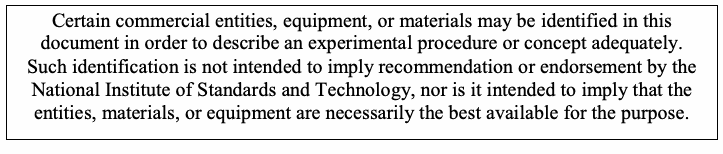
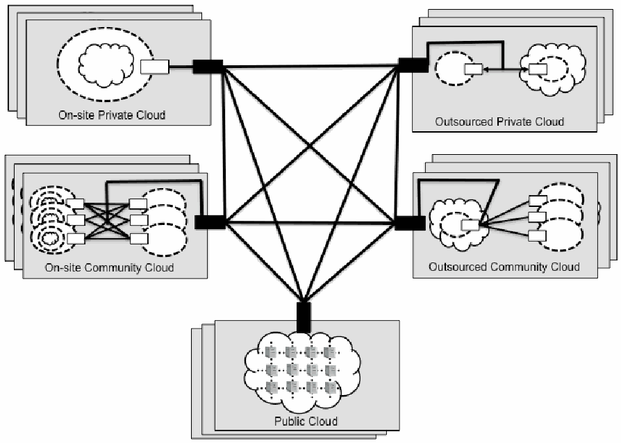
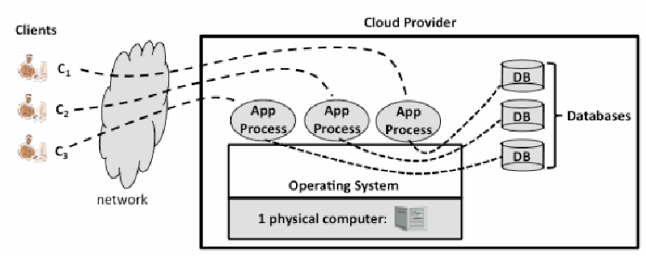
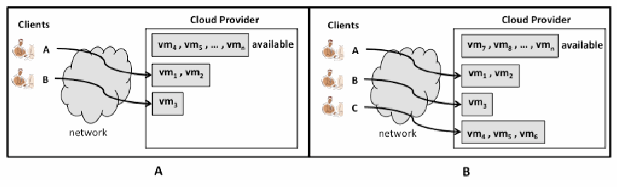

NIST Special Publication · PDF 原文抽出
Cloud Computing Synopsis and Recommendations
クラウドコンピューティングの概要と推奨事項
NIST SP 800-146（Cloud Computing Synopsis and Recommendations）の英文と日本語訳を段落ごとに並べた閲覧用ページです。クラウド技術の主要な分類や利点・課題を概説し、組織がクラウド導入の機会とリスクを比較検討するための指針を示します。 翻訳は有志による非公式のもので、NIST および米国商務省が作成・承認・推奨したものではありません。要件の確認にはNIST の正式版 PDFを参照してください。
PDF から抽出した原文は、原本のページ画像と照合済みです。
本文の数式はLaTeXの構造からKaTeXで表示しています。
［NIST のロゴ。公的な標章のため、この非公式サイトには掲載していない。原本 PDF を参照。］
Special Publication 800-146
特別刊行物 800-146
Cloud Computing Synopsis and Recommendations
クラウドコンピューティングの概要と推奨事項
Recommendations of the National Institute of Standards and Technology
米国国立標準技術研究所の推奨事項
Lee Badger Tim Grance Robert Patt-Corner Jeff Voas
Lee Badger、Tim Grance、Robert Patt-Corner、Jeff Voas
NIST 特別刊行物 800-146
Cloud Computing Synopsis and Recommendations
クラウドコンピューティングの概要と推奨事項
Recommendations of the National Institute of Standards and Technology
米国国立標準技術研究所の推奨事項
Lee Badger Tim Grance Robert Patt-Corner Jeff Voas
Lee Badger、Tim Grance、Robert Patt-Corner、Jeff Voas
C O M P U T E R S E C U R I T Y
コンピュータセキュリティ
Computer Security Division Information Technology Laboratory National Institute of Standards and Technology Gaithersburg, MD 20899-8930
コンピュータセキュリティ部門 情報技術研究所 米国国立標準技術研究所 Gaithersburg, MD 20899-8930
May 2012
2012年5月
U.S. Department of Commerce
米国商務省
John Bryson, Secretary
John Bryson 商務長官
National Institute of Standards and Technology
米国国立標準技術研究所
Patrick D. Gallagher, Under Secretary of Commerce for Standards and Technology and Director
Patrick D. Gallagher 商務省標準技術担当次官兼所長
Reports on Computer Systems Technology
コンピュータシステム技術報告書
The Information Technology Laboratory (ITL) at the National Institute of Standards and Technology (NIST) promotes the U.S. economy and public welfare by providing technical leadership for the nation’s measurement and standards infrastructure. ITL develops tests, test methods, reference data, proof of concept implementations, and technical analysis to advance the development and productive use of information technology. ITL’s responsibilities include the development of management, administrative, technical, and physical standards and guidelines for the cost-effective security and privacy of other than national security-related information in Federal information systems. This Special Publication 800-series reports on ITL’s research, guidance, and outreach efforts in computer security and its collaborative activities with industry, government, and academic organizations.
米国国立標準技術研究所（NIST）の情報技術研究所（ITL）は、米国の経済と公共の福祉を促進するため、国の測定・標準基盤に対する技術的リーダーシップを提供している。ITLは、情報技術の開発と生産的な利用を推進するため、試験、試験方法、参照データ、概念実証の実装、および技術分析を開発する。ITLの責務には、国家安全保障関連以外の情報を扱う連邦情報システムの費用対効果の高いセキュリティとプライバシーのために、管理、運用、技術、および物理的な標準・ガイドラインを策定することが含まれる。本特別刊行物800シリーズは、コンピュータセキュリティに関するITLの研究、指針、普及活動、および産業界、政府、学術機関との連携活動を報告するものである。
National Institute of Standards and Technology Special Publication 800-146 Natl. Inst. Stand. Technol. Spec. Publ. 800-146, 81 pages (May 2012)
米国国立標準技術研究所 特別刊行物800-146 Natl. Inst. Stand. Technol. Spec. Publ. 800-146, 81 pages (May 2012)
Certain commercial entities, equipment, or materials may be identified in this document in order to describe an experimental procedure or concept adequately. Such identification is not intended to imply recommendation or endorsement by the National Institute of Standards and Technology, nor is it intended to imply that the entities, materials, or equipment are necessarily the best available for the purpose.
原本PDFの抜粋画像

この文書では、実験手順または概念を適切に説明するため、特定の商業事業者、機器、または材料を特定することがある。このような特定は、米国国立標準技術研究所による推奨または是認を意味するものではなく、また、当該事業者、材料、または機器が目的に最も適したものであることを意味するものでもない。
Acknowledgments
謝辞
The authors, Lee Badger of the National Institute of Standards and Technology (NIST), Tim Grance, of the National Institute of Standards and Technology (NIST), Robert Patt-Corner of Global Tech, Inc., and Jeff Voas of the National Institute of Standards and Technology (NIST), wish to thank their colleagues who reviewed drafts of this document and contributed to its technical content. The authors gratefully acknowledge and appreciate the contributions from individuals and organizations whose comments improved the overall quality of this publication.
著者である米国国立標準技術研究所（NIST）のLee Badger、同研究所のTim Grance、Global Tech, Inc.のRobert Patt-Corner、および同研究所のJeff Voasは、本書の草稿を査読し、技術的内容に貢献した同僚に謝意を表する。著者らは、本刊行物全体の質の向上につながる意見を寄せた個人および組織の貢献に、深く感謝する。
Trademark Information
商標に関する情報
All names are trademarks or registered trademarks of their respective owners.
すべての名称は、それぞれの所有者の商標または登録商標である。
Table of Contents
目次
Executive Summary — 1
エグゼクティブサマリー — 1
1. Introduction .................................................................................................................... 1-1
1. はじめに .................................................................................................................... 1-1
1.1 Authority.................................................................................................................1-1
1.1 権限.................................................................................................................1-1
1.2 Purpose and Scope................................................................................................1-1
1.2 目的と範囲....................................................................................................1-1
1.3 Audience ................................................................................................................1-1
1.3 対象読者 ........................................................................................................1-1
1.4 Document Structure................................................................................................1-1
1.4 文書の構成....................................................................................................1-1
2. Cloud Computing Definition.......................................................................................... 2-1
2. クラウドコンピューティングの定義................................................................. 2-1
3. Typical Commercial Terms of Service.......................................................................... 3-1
3. 一般的な商用サービス利用規約.......................................................................... 3-1
3.1 Promises ................................................................................................................3-1
3.1 約束事項 ........................................................................................................3-1
3.2 Limitations ..............................................................................................................3-2
3.2 制限事項 ........................................................................................................3-2
3.3 Obligations .............................................................................................................3-3
3.3 義務 ...............................................................................................................3-3
3.4 Recommendations..................................................................................................3-3
3.4 推奨事項........................................................................................................3-3
4. General Cloud Environments ........................................................................................ 4-1
4. 一般的なクラウド環境 ........................................................................................ 4-1
4.1 Understanding Who Controls Resources in a Cloud...............................................4-3
4.1 クラウド内のリソースを誰が制御するかを理解する....................................4-3
4.2 The On-site Private Cloud Scenario .......................................................................4-4
4.2 オンサイト型プライベートクラウドのシナリオ ............................................4-4
4.3 The Outsourced Private Cloud Scenario.................................................................4-7
4.3 外部委託型プライベートクラウドのシナリオ................................................4-7
4.4 The On-site Community Cloud Scenario.................................................................4-9
4.4 オンサイト型コミュニティクラウドのシナリオ.............................................4-9
4.5 The Outsourced Community Cloud Scenario........................................................4-12
4.5 外部委託型コミュニティクラウドのシナリオ..............................................4-12
4.6 The Public Cloud Scenario ...................................................................................4-13
4.6 パブリッククラウドのシナリオ ...................................................................4-13
4.7 The Hybrid Cloud Scenario...................................................................................4-15
4.7 ハイブリッドクラウドのシナリオ...............................................................4-15
5. Software-as-a-Service Environments ........................................................................... 5-1
5. Software as a Service（SaaS）環境 ................................................................. 5-1
5.1 Abstract Interaction Dynamics ................................................................................5-2
5.1 抽象的な相互作用の動態 ................................................................................5-2
5.2 Software Stack and Provider/Consumer Scope of Control......................................5-3
5.2 ソフトウェアスタックとプロバイダー／利用者の制御範囲............................5-3
5.3 Benefits ..................................................................................................................5-3
5.3 利点 ...............................................................................................................5-3
5.3.1 Very Modest Software Tool Footprint......................................................... 5-4
5.3.1 ソフトウェアツールの占有資源がごく少ない................................................. 5-4
5.3.2 Efficient Use of Software Licenses............................................................. 5-4
5.3.2 ソフトウェアライセンスの効率的な利用................................................. 5-4
5.3.3 Centralized Management and Data............................................................ 5-4
5.3.3 管理とデータの一元化............................................................................. 5-4
5.3.4 Platform Responsibilities Managed by Providers........................................ 5-4
5.3.4 プロバイダーが担うプラットフォームに関する責任............................................ 5-4
5.3.5 Savings in Up-front Costs .......................................................................... 5-5
5.3.5 初期費用の削減 ....................................................................................... 5-5
5.4 Issues and Concerns..............................................................................................5-5
5.4 課題と懸念事項..............................................................................................5-5
5.4.1 Browser-based Risks and Risk Remediation.............................................. 5-5
5.4.1 ブラウザーに起因するリスクとその軽減................................................ 5-5
5.4.2 Network Dependence................................................................................. 5-6
5.4.2 ネットワークへの依存............................................................................. 5-6
5.4.3 Lack of Portability between SaaS Clouds................................................... 5-6
5.4.3 SaaSクラウド間の移植性の欠如............................................................. 5-6
5.4.4 Isolation vs. Efficiency (Security vs. Cost Tradeoffs) .................................. 5-6
5.4.4 分離と効率のトレードオフ（セキュリティとコストのトレードオフ）...... 5-6
5.5 Candidate Application Classes ...............................................................................5-7
5.5 候補となるアプリケーションの種類.............................................................5-7
5.6 Recommendations for Software as a Service .........................................................5-8
5.6 Software as a Serviceに関する推奨事項 .........................................................5-8
6. Platform-as-a-Service Cloud Environments................................................................. 6-1
6. Platform as a Service（PaaS）クラウド環境....................................................... 6-1
6.1 Abstract Interaction Dynamics ................................................................................6-1
6.1 抽象的な相互作用の動態 ................................................................................6-1
6.2 Software Stack and Provider/Consumer Scope of Control......................................6-3
6.2 ソフトウェアスタックとプロバイダー／利用者の制御範囲............................6-3
6.3 Benefits ..................................................................................................................6-3
6.3 利点 ...............................................................................................................6-3
6.3.1 Facilitated Scalable Application Development and Deployment ................. 6-4
6.3.1 拡張性のあるアプリケーション開発と展開の促進................................. 6-4
6.4 Issues and Concerns..............................................................................................6-4
6.4 課題と懸念事項..............................................................................................6-4
6.4.1 Lack of Portability between PaaS Clouds................................................... 6-4
6.4.1 PaaSクラウド間の移植性の欠如................................................... 6-4
6.4.2 Event-based Processor Scheduling ........................................................... 6-4
6.4.2 イベントベースのプロセッサスケジューリング ........................................................... 6-4
6.4.3 Security Engineering of PaaS Applications ................................................ 6-5
6.4.3 PaaSアプリケーションのセキュリティエンジニアリング ................................................ 6-5
6.5 Candidate Application Classes ...............................................................................6-5
6.5 適用候補となるアプリケーションの種類 ...............................................................................6-5
6.6 Recommendations for Platform as a Service..........................................................6-5
6.6 Platform as a Serviceに関する推奨事項..........................................................6-5
7. Infrastructure-as-a-Service Cloud Environments ........................................................ 7-1
7. Infrastructure as a Service（IaaS）クラウド環境 ........................................................ 7-1
7.1 Abstract Interaction Dynamics ................................................................................7-1
7.1 相互作用の概念的な動態 ................................................................................7-1
7.2 Software Stack and Provider/Consumer Scope of Control......................................7-2
7.2 ソフトウェアスタックとプロバイダー／利用者の制御範囲......................................7-2
7.3 Operational View ....................................................................................................7-3
7.3 運用の視点 ....................................................................................................7-3
7.3.1 Operation of the Cloud Manager ................................................................ 7-4
7.3.1 Cloud Managerの動作 ................................................................ 7-4
7.3.2 Operation of the Cluster Managers ............................................................ 7-4
7.3.2 Cluster Managerの動作 ............................................................ 7-4
7.3.3 Operation of the Computer Managers........................................................ 7-5
7.3.3 Computer Managerの動作........................................................ 7-5
7.4 Benefits ..................................................................................................................7-5
7.4 利点 ..................................................................................................................7-5
7.4.1 Full Control of the Computing Resource Through Administrative Access to VMs 7-6
7.4.1 VMへの管理アクセスによるコンピューティング資源の完全な制御 7-6
7.4.2 Flexible, Efficient Renting of Computing Hardware .................................... 7-6
7.4.2 コンピューティングハードウェアの柔軟かつ効率的なレンタル .................................... 7-6
7.4.3 Portability, Interoperability with Legacy Applications .................................. 7-6
7.4.3 可搬性、レガシーアプリケーションとの相互運用性 .................................. 7-6
7.5 Issues and Concerns..............................................................................................7-6
7.5 課題と懸念事項..............................................................................................7-6
7.5.1 Compatibility with Legacy Security Vulnerabilities ...................................... 7-7
7.5.1 レガシーなセキュリティ脆弱性との互換性 ...................................... 7-7
7.5.2 Virtual Machine Sprawl .............................................................................. 7-7
7.5.2 仮想マシンの無秩序な増殖 .............................................................................. 7-7
7.5.3 Verifying Authenticity of an IaaS Cloud Provider Web Site......................... 7-7
7.5.3 IaaSクラウドプロバイダーのWebサイトの真正性確認......................... 7-7
7.5.4 Robustness of VM-level Isolation ............................................................... 7-7
7.5.4 VMレベルの分離の堅牢性 ............................................................... 7-7
7.5.5 Features for Dynamic Network Configuration for Providing Isolation.......... 7-7
7.5.5 分離のための動的ネットワーク構成機能.......... 7-7
7.5.6 Data Erase Practices ................................................................................. 7-8
7.5.6 データ消去の慣行 ................................................................................. 7-8
7.6 Recommendations for Infrastructure as a Service ..................................................7-8
7.6 Infrastructure as a Serviceに関する推奨事項 ..................................................7-8
8. Open Issues.................................................................................................................... 8-1
8. 未解決の課題.................................................................................................................... 8-1
8.1 Computing Performance.........................................................................................8-1
8.1 コンピューティング性能.........................................................................................8-1
8.1.1 Latency ...................................................................................................... 8-1
8.1.1 遅延 ...................................................................................................... 8-1
8.1.2 Off-line Data Synchronization..................................................................... 8-2
8.1.2 オフラインデータ同期..................................................................... 8-2
8.1.3 Scalable Programming............................................................................... 8-2
8.1.3 スケーラブルなプログラミング............................................................................... 8-2
8.1.4 Data Storage Management ........................................................................ 8-2
8.1.4 データストレージ管理 ........................................................................ 8-2
8.2 Cloud Reliability......................................................................................................8-2
8.2 クラウドの信頼性......................................................................................................8-2
8.2.1 Network Dependence................................................................................. 8-3
8.2.1 ネットワーク依存性................................................................................. 8-3
8.2.2 Cloud Provider Outages............................................................................. 8-3
8.2.2 クラウドプロバイダーの停止............................................................................. 8-3
8.2.3 Safety-Critical Processing .......................................................................... 8-3
8.2.3 安全性が重要な処理 .......................................................................... 8-3
8.3 Economic Goals .....................................................................................................8-4
8.3 経済的目標 .....................................................................................................8-4
8.3.1 Risk of Business Continuity........................................................................ 8-4
8.3.1 事業継続性のリスク........................................................................ 8-4
8.3.2 Service Agreement Evaluation................................................................... 8-4
8.3.2 サービス契約の評価................................................................... 8-4
8.3.3 Portability of Workloads ............................................................................. 8-5
8.3.3 ワークロードの可搬性 ............................................................................. 8-5
8.3.4 Interoperability between Cloud Providers................................................... 8-5
8.3.4 クラウドプロバイダー間の相互運用性................................................... 8-5
8.3.5 Disaster Recovery...................................................................................... 8-5
8.3.5 災害復旧...................................................................................... 8-5
8.4 Compliance ............................................................................................................8-5
8.4 コンプライアンス ............................................................................................................8-5
8.4.1 Lack of Visibility ......................................................................................... 8-6
8.4.1 可視性の欠如 ......................................................................................... 8-6
8.4.2 Physical Data Location............................................................................... 8-6
8.4.2 物理的なデータ所在地............................................................................... 8-6
8.4.3 Jurisdiction and Regulation ........................................................................ 8-6
8.4.3 管轄権と規制 ........................................................................ 8-6
8.4.4 Support for Forensics................................................................................. 8-6
8.4.4 フォレンジックの支援................................................................................. 8-6
8.5 Information Security................................................................................................8-7
8.5 情報セキュリティ................................................................................................8-7
8.5.1 Risk of Unintended Data Disclosure........................................................... 8-8
8.5.1 意図しないデータ開示のリスク........................................................... 8-8
8.5.2 Data Privacy .............................................................................................. 8-8
8.5.2 データプライバシー .............................................................................................. 8-8
8.5.3 System Integrity ......................................................................................... 8-8
8.5.3 システム完全性 ......................................................................................... 8-8
8.5.4 Multi-tenancy ............................................................................................. 8-8
8.5.4 マルチテナンシー ............................................................................................. 8-8
8.5.5 Browsers.................................................................................................... 8-9
8.5.5 ブラウザー.................................................................................................... 8-9
8.5.6 Hardware Support for Trust........................................................................ 8-9
8.5.6 信頼のためのハードウェア支援........................................................................ 8-9
8.5.7 Key Management....................................................................................... 8-9
8.5.7 鍵管理....................................................................................... 8-9
9. General Recommendations........................................................................................... 9-1
9. 一般的な推奨事項........................................................................................... 9-1
9.1 Management ..........................................................................................................9-1
9.1 管理 ..........................................................................................................9-1
9.2 Data Governance ...................................................................................................9-2
9.2 データガバナンス ...................................................................................................9-2
9.3 Security and Reliability ...........................................................................................9-3
9.3 セキュリティと信頼性 ...........................................................................................9-3
9.4 Virtual Machines.....................................................................................................9-3
9.4 仮想マシン.....................................................................................................9-3
9.5 Software and Applications ......................................................................................9-3
9.5 ソフトウェアとアプリケーション ......................................................................................9-3
List of Figures
図一覧
Figure 1: General Cloud and Consumer View ......................................................................... 4-1
図1：クラウドと利用者の概観 ......................................................................... 4-1
Figure 2: The Security Perimeter............................................................................................. 4-4
図2：セキュリティ境界............................................................................................. 4-4
Figure 3: On-site Private Cloud ............................................................................................... 4-4
図3：オンサイト・プライベートクラウド ............................................................................................... 4-4
Figure 4: Outsourced Private Cloud ........................................................................................ 4-8
図4：外部委託プライベートクラウド ........................................................................................ 4-8
Figure 5: On-site Community Cloud ...................................................................................... 4-10
図5：オンサイト・コミュニティクラウド ...................................................................................... 4-10
Figure 6: Outsourced Community Cloud ............................................................................... 4-12
図6：外部委託コミュニティクラウド ............................................................................... 4-12
Figure 7: Public Cloud........................................................................................................... 4-13
図7：パブリッククラウド........................................................................................................... 4-13
Figure 8: Hybrid Cloud .......................................................................................................... 4-15
図8：ハイブリッドクラウド .......................................................................................................... 4-15
Figure 9: SaaS Consumer/Provider Interaction Dynamics....................................................... 5-2
図9：SaaSの利用者とプロバイダーの相互作用の動態....................................................... 5-2
Figure 10: SaaS Provider/Consumer Scope of Control ........................................................... 5-3
図10：SaaSにおけるプロバイダーと利用者の制御範囲 ........................................................... 5-3
Figure 11: SaaS Isolation vs. Efficiency Favoring Isolation...................................................... 5-6
図11：SaaSの分離と効率（分離を優先する場合）...................................................... 5-6
Figure 12: SaaS Isolation vs. Efficiency Favoring Efficiency.................................................... 5-7
図12：SaaSの分離と効率（効率を優先する場合）.................................................... 5-7
Figure 13: PaaS Consumer/Provider Interaction Dynamics..................................................... 6-2
図13：PaaSの利用者とプロバイダーの相互作用の動態..................................................... 6-2
Figure 14: PaaS Component Stack and Scope of Control....................................................... 6-3
図14：PaaSのコンポーネントスタックと制御範囲....................................................... 6-3
Figure 15: IaaS Provider/Consumer Interaction Dynamics ...................................................... 7-2
図15：IaaSのプロバイダーと利用者の相互作用の動態 ...................................................... 7-2
Figure 16: IaaS Component Stack and Scope of Control ........................................................ 7-2
図16：IaaSのコンポーネントスタックと制御範囲 ........................................................ 7-2
Figure 17: Local IaaS Cloud Architecture................................................................................ 7-3
図17：ローカルIaaSクラウドのアーキテクチャ................................................................................ 7-3
List of Tables
表一覧
Table 1: Scope Modifiers for Statements Asserted About Clouds ........................................... 4-2
表1：クラウドに関する記述の適用範囲を限定する修飾語 ........................................... 4-2
Table 2: 800-53 Control Families and Classes........................................................................A-2
表2：800-53の管理策ファミリーとクラス........................................................................A-2
List of Appendices
付録一覧
Appendix A— Roles and Responsibilities ..........................................................................A-1
付録A— 役割と責任 ..........................................................................A-1
Appendix B— Acronyms ......................................................................................................B-1
付録B— 略語 ......................................................................................................B-1
Appendix C— Glossary ........................................................................................................C-1
付録C— 用語集 ........................................................................................................C-1
Appendix D— References ....................................................................................................D-1
付録D— 参考文献 ....................................................................................................D-1
Appendix E— NIST Publications..........................................................................................E-1
付録E— NIST刊行物..........................................................................................E-1
Executive Summary
エグゼクティブサマリー
Cloud computing allows computer users to conveniently rent access to fully featured applications, to software development and deployment environments, and to computing infrastructure assets such as network-accessible data storage and processing.
クラウドコンピューティングを利用すると、コンピューターユーザーは、機能を完備したアプリケーション、ソフトウェアの開発・展開環境、およびネットワーク経由でアクセスできるデータの保存や処理などのコンピューティング基盤資源を、手軽に借りて利用できる。
This document reprises the NIST-established definition of cloud computing, describes cloud computing benefits and open issues, presents an overview of major classes of cloud technology, and provides guidelines and recommendations on how organizations should consider the relative opportunities and risks of cloud computing. Cloud computing has been the subject of a great deal of commentary. Attempts to describe cloud computing in general terms, however, have been problematic because cloud computing is not a single kind of system, but instead spans a spectrum of underlying technologies, configuration possibilities, service models, and deployment models. This document describes cloud systems and discusses their strengths and weaknesses.
本書は、NISTが定めたクラウドコンピューティングの定義を再掲し、クラウドコンピューティングの利点と未解決の課題を説明し、主要なクラウド技術の種類を概説するとともに、組織がクラウドコンピューティングの機会とリスクを比較検討する際の指針と推奨事項を示す。クラウドコンピューティングについては数多く論じられてきた。しかし、クラウドコンピューティングは単一の種類のシステムではなく、基盤技術、構成の選択肢、サービスモデル、導入モデルにわたる幅広い領域を占めているため、一般的な言葉で説明しようとすると問題が生じてきた。本書では、クラウドシステムを説明し、その長所と短所を論じる。
Depending on an organization's requirements, different technologies and configurations are appropriate. To understand which part of the spectrum of cloud systems is most appropriate for a given need, an organization should consider how clouds can be deployed (deployment models), what kinds of services can be provided to customers (service models), the economic opportunities and risks of using cloud services (economic considerations), the technical characteristics of cloud services such as performance and reliability (operational characteristics), typical terms of service (service level agreements), and the security opportunities and risks (security).
組織の要件によって、適切な技術や構成は異なる。特定のニーズに最も適したクラウドシステムの範囲を判断するには、組織は、クラウドの導入形態（導入モデル）、顧客に提供可能なサービスの種類（サービスモデル）、クラウドサービス利用の経済的な機会とリスク（経済的考慮事項）、性能や信頼性などクラウドサービスの技術的特性（運用上の特性）、一般的なサービス利用条件（サービスレベル契約）、およびセキュリティ上の機会とリスク（セキュリティ）を検討すべきである。
Deployment Models. A cloud computing system may be deployed privately or hosted on the premises of a cloud customer, may be shared among a limited number of trusted partners, may be hosted by a third party, or may be a publically accessible service, i.e., a public cloud. Depending on the kind of cloud deployment, the cloud may have limited private computing resources, or may have access to large quantities of remotely accessed resources. The different deployment models present a number of tradeoffs in how customers can control their resources, and the scale, cost, and availability of resources.
導入モデル。クラウドコンピューティングシステムは、プライベートに導入するか、クラウド顧客の敷地内でホストすることができる。また、信頼できる限られた数のパートナー間で共有する、第三者がホストする、または一般にアクセス可能なサービス（すなわちパブリッククラウド）とすることもできる。クラウドの導入形態に応じて、利用できるプライベートなコンピューティング資源が限られる場合もあれば、遠隔からアクセスできる大量の資源を利用できる場合もある。導入モデルによって、顧客が資源をどの程度制御できるか、また資源の規模、コスト、可用性に関してさまざまなトレードオフが生じる。
Service Models. A cloud can provide access to software applications such as email or office productivity tools (the Software as a Service, or SaaS, service model), or can provide an environment for customers to use to build and operate their own software (the Platform as a Service, or PaaS, service model), or can provide network access to traditional computing resources such as processing power and storage (the Infrastructure as a Service, or IaaS, service model). The different service models have different strengths and are suitable for different customers and business objectives. Generally, interoperability and portability of customer workloads is more achievable in the IaaS service model because the building blocks of IaaS offerings are relatively well-defined, e.g., network protocols, CPU instruction sets, and legacy device interfaces.
サービスモデル。クラウドは、電子メールやオフィス生産性ツールなどのソフトウェアアプリケーションへのアクセスを提供することも（Software as a Service、すなわちSaaSモデル）、顧客が独自のソフトウェアを構築・運用する環境を提供することも（Platform as a Service、すなわちPaaSモデル）、処理能力やストレージなど従来型のコンピューティング資源へのネットワークアクセスを提供することもできる（Infrastructure as a Service、すなわちIaaSモデル）。各サービスモデルには異なる強みがあり、適する顧客や事業目的も異なる。一般に、IaaSサービスモデルでは、構成要素となるネットワークプロトコル、CPU命令セット、レガシーデバイスのインターフェースなどが比較的明確に定義されているため、顧客のワークロードの相互運用性と移植性を実現しやすい。
Economic Considerations. In outsourced and public deployment models, cloud computing provides convenient rental of computing resources: users pay service charges while using a service but need not pay large up-front acquisition costs to build a computing infrastructure. The reduction of up-front costs reduces the risks for pilot projects and experimental efforts, thus reducing a barrier to organizational flexibility, or agility. In outsourced and public deployment models, cloud computing also can provide elasticity, that is, the ability for customers to quickly request, receive, and later release as many resources as needed. By using an elastic cloud, customers may be able to avoid excessive costs from over-provisioning, i.e., building enough capacity for peak demand and then not using the capacity in non-peak periods. Whether or not cloud computing reduces overall costs for an organization depends on a careful analysis of all the costs of operation, compliance, and security, including costs to migrate to and, if necessary, migrate from a cloud.
経済面の考慮事項。外部委託型およびパブリックの展開モデルでは、クラウドコンピューティングはコンピューティング資源を便利にレンタルできるようにする。利用者はサービスの利用中に料金を支払うが、コンピューティング基盤を構築するために多額の初期取得費用を支払う必要はない。初期費用の削減は、パイロットプロジェクトや試験的な取り組みのリスクを低減し、組織の柔軟性、すなわちアジリティを妨げる障壁を下げる。外部委託型およびパブリックの展開モデルでは、クラウドコンピューティングは、顧客が必要なだけの資源を迅速に要求して受け取り、後で解放できる能力、すなわちエラスティシティも提供できる。弾力性のあるクラウドを利用することで、顧客は過剰なコストを避けられる場合がある。過剰なコストは、過剰なプロビジョニング、すなわちピーク需要に備えて十分な容量を構築し、その後、ピーク時以外にはその容量を使わないことによって生じる。クラウドコンピューティングが組織の総コストを削減するかどうかは、運用、コンプライアンス、セキュリティに関するすべてのコスト（クラウドへの移行、および必要な場合はクラウドからの移行にかかるコストを含む）を慎重に分析して判断する必要がある。
ES-1
ES-1
Operational Characteristics. Cloud computing favors applications that can be broken up into small independent parts. Cloud systems generally depend on networking and hence any limitations on networking, such as data import/export bottlenecks or service disruptions, reduce cloud utility, especially for applications that are not tolerant of disruptions.
運用上の特性。クラウドコンピューティングは、小さな独立部分に分割できるアプリケーションに適している。クラウドシステムは一般にネットワークに依存するため、データのインポート／エクスポートのボトルネックやサービス中断など、ネットワーク上の制約があると、クラウドの有用性が低下する。特に、中断を許容できないアプリケーションでは影響が大きい。
Service Agreements, including Service Level Agreements. Organizations should understand the terms of the service agreements that define the legal relationships between cloud customers and cloud providers. An organization should understand customer responsibilities, and those of the service provider, before using a cloud service.
サービスレベル契約を含むサービス契約。組織は、クラウド顧客とクラウドプロバイダーの法的関係を定めるサービス契約の条件を理解すべきである。組織は、クラウドサービスを利用する前に、顧客とサービスプロバイダーそれぞれの責任を理解しておくべきである。
Security. Organizations should be aware of the security issues that exist in cloud computing and of applicable NIST publications such as NIST Special Publication (SP) 800-53 “Recommended Security Controls For Federal Information Systems and Organizations.” As complex networked systems, clouds are affected by traditional computer and network security issues such as the needs to provide data confidentiality, data integrity, and system availability. By imposing uniform management practices, clouds may be able to improve on some security update and response issues. Clouds, however, also have potential to aggregate an unprecedented quantity and variety of customer data in cloud data centers. This potential vulnerability requires a high degree of confidence and transparency that cloud providers can keep customer data isolated and protected. Also, cloud users and administrators rely heavily on Web browsers, so browser security failures can lead to cloud security breaches. The privacy and security of cloud computing depend primarily on whether the cloud service provider has implemented robust security controls and a sound privacy policy desired by their customers, the visibility that customers have into its performance, and how well it is managed.
セキュリティ。組織は、クラウドコンピューティングに存在するセキュリティ上の課題と、NIST特別刊行物（SP）800-53「連邦情報システムおよび組織のための推奨セキュリティ管理策」など、該当するNIST刊行物を把握すべきである。複雑なネットワークシステムであるクラウドは、データの機密性、データの完全性、システムの可用性を確保する必要性など、従来型のコンピュータおよびネットワークセキュリティの課題の影響を受ける。管理手法を統一することで、セキュリティ更新や対応に関する一部の課題を改善できる可能性がある。一方、クラウドには、これまでにない量と種類の顧客データをデータセンターに集約する可能性もある。この潜在的な脆弱性があるため、クラウドプロバイダーが顧客データを分離し保護できるという高い信頼性と透明性が必要となる。また、クラウドの利用者と管理者はWebブラウザーに大きく依存するため、ブラウザーのセキュリティ障害がクラウドのセキュリティ侵害につながることがある。クラウドコンピューティングのプライバシーとセキュリティは、主として、クラウドサービスプロバイダーが強固なセキュリティ管理策と顧客が求める適切なプライバシーポリシーを実装しているか、顧客がその実施状況をどの程度把握できるか、そして運用が適切に管理されているかに左右される。
Inherently, the move to cloud computing is a business decision in which the business case should consider the relevant factors, some of which include readiness of existing applications for cloud deployment, transition costs and life-cycle costs, maturity of service orientation in existing infrastructure, and other factors including security and privacy requirements.
クラウドコンピューティングへの移行は本質的に事業上の意思決定であり、その事業判断では関連要因を考慮すべきである。要因には、既存アプリケーションがクラウド導入に適しているか、移行費用とライフサイクル費用、既存基盤におけるサービス指向の成熟度、さらにセキュリティおよびプライバシー要件などが含まれる。
ES-2
ES-2
1. Introduction
1. はじめに
1.1 Authority
1.1 法的根拠
The National Institute of Standards and Technology (NIST) developed this document in furtherance of its statutory responsibilities under the Federal Information Security Management Act (FISMA) of 2002, Public Law 107-347.
米国国立標準技術研究所（NIST）は、2002年連邦情報セキュリティマネジメント法（FISMA、Public Law 107-347）に基づく法定責任を遂行するため、本書を作成した。
NIST is responsible for developing standards and guidelines, including minimum requirements, for providing adequate information security for all agency operations and assets; but such standards and guidelines shall not apply to national security systems. This guideline is consistent with the requirements of the Office of Management and Budget (OMB) Circular A-130, Section 8b(3), “Securing Agency Information Systems,” as analyzed in A-130, Appendix IV: Analysis of Key Sections. Supplemental information is provided in A-130, Appendix III.
NISTは、すべての政府機関の業務および資産について適切な情報セキュリティを確保するため、最低要件を含む規格およびガイドラインを策定する責任を負う。ただし、これらの規格およびガイドラインは国家安全保障システムには適用されない。本ガイドラインは、行政管理予算局（OMB）通達A-130第8b(3)節「政府機関情報システムの保護」の要件に整合しており、その要件はA-130付録IV「主要節の分析」において分析されている。補足情報はA-130付録IIIに記載されている。
This guideline has been prepared for use by Federal agencies. It may be used by nongovernmental organizations on a voluntary basis and is not subject to copyright, though attribution is desired.
本ガイドラインは連邦政府機関が使用するために作成された。非政府組織も任意に利用でき、著作権の対象ではないが、出典の明記が望ましい。
Nothing in this document should be taken to contradict standards and guidelines made mandatory and binding on Federal agencies by the Secretary of Commerce under statutory authority, nor should these guidelines be interpreted as altering or superseding the existing authorities of the Secretary of Commerce, Director of the OMB, or any other Federal official.
本書のいかなる記述も、法的権限に基づき商務長官が連邦政府機関に義務付け、拘束力を持たせた規格およびガイドラインに反するものと解釈してはならない。また、本ガイドラインは、商務長官、OMB長官、またはその他の連邦政府職員が有する既存の権限を変更もしくは無効にするものと解釈してはならない。
1.2 Purpose and Scope
1.2 目的と適用範囲
The purpose of this document is to explain the cloud computing technology area in plain terms, and to provide recommendations for information technology decision makers.
本書の目的は、クラウドコンピューティングの技術領域を平易な言葉で説明し、情報技術に関する意思決定者に推奨事項を示すことである。
Cloud computing is a developing area and its ultimate strengths and weakness are not yet fully researched, documented and tested. This document gives recommendations on how and when cloud computing is an appropriate tool, and indicates the limits of current knowledge and areas for future analysis.
クラウドコンピューティングは発展途上の領域であり、その強みと弱みの全容は、まだ十分に調査、文書化、検証されていない。本書は、クラウドコンピューティングをいつ、どのように適切な手段として利用できるかについて推奨事項を示すとともに、現在の知見の限界と今後分析すべき領域を示す。
1.3 Audience
1.3 対象読者
This publication is intended to serve a diverse enterprise audience of information systems professionals including chief information officers, information systems developers, project managers, system designers, systems programmers, application programmers, system and network administrators, information system security officers, and system owners.
本刊行物は、最高情報責任者、情報システム開発者、プロジェクトマネージャー、システム設計者、システムプログラマー、アプリケーションプログラマー、システム管理者およびネットワーク管理者、情報システムセキュリティ担当者、システム所有者など、幅広い企業の情報システム専門家を対象としている。
1.4 Document Structure
1.4 本書の構成
The remainder of this document is organized into the following major sections:
本書の残りの部分は、次の主要な節で構成されている。
•Section 2 reprises the NIST definition of cloud computing.
•第2節では、NISTによるクラウドコンピューティングの定義を再掲する。
•Section 3 surveys typical commercial terms of usage for cloud computing systems.
•第3節では、クラウドコンピューティング・システムに関する一般的な商用利用規約を概説する。
•Section 4 provides a breakdown of how cloud computing solutions may be deployed and describes general implications for different deployment options.
•第4節では、クラウドコンピューティング・ソリューションの導入方法を分類し、導入形態ごとの一般的な影響を説明する。
•Section 5 provides a high-level view of how Software as a Service (SaaS) clouds work.
•第5節では、Software as a Service（SaaS）クラウドの仕組みを概説する。
•Section 6 provides a high-level view of how Platform as a Service (PaaS) clouds work.
•第6節では、Platform as a Service（PaaS）クラウドの仕組みを概説する。
•Section 7 provides a high-level view of how Infrastructure as a Service (IaaS) clouds work.
•第7節では、Infrastructure as a Service（IaaS）クラウドの仕組みを概説する。
•Section 8 presents open issues.
•第8節では、未解決の課題を提示する。
•Section 9 gives recommendations.
•第9節では、推奨事項を示す。
The document also contains appendices with supporting material.
本書には、補足資料を含む付録もある。
•Appendix A discusses the sharing of responsibilities between providers and consumers for the implementation of security controls.
•付録Aでは、セキュリティ管理策の実施に関するプロバイダーと利用者の責任分担を説明する。
•Appendix B lists acronyms used in this document.
•付録Bでは、本書で使用する略語を列挙する。
•Appendix C contains a glossary of terms used in this document.
•付録Cでは、本書で使用する用語の用語集を掲載する。
•Appendix D lists external resources referenced in this document.
•付録Dでは、本書で参照する外部資料を列挙する。
•Appendix E lists NIST publications referenced in this document.
•付録Eでは、本書で参照するNIST刊行物を列挙する。
2. Cloud Computing Definition
2. クラウドコンピューティングの定義
This document uses the NIST Cloud Computing Definition, NIST SP 800-145, to explain characteristics of cloud computing. For the convenience of the reader, the following is excerpted from NIST SP 800-145:
本書では、クラウドコンピューティングの特性を説明するため、NISTのクラウドコンピューティング定義（NIST SP 800-145）を用いる。読者の便宜のため、同刊行物から次の箇所を抜粋する。
"Cloud computing is a model for enabling convenient, on-demand network access to a shared pool of configurable computing resources (e.g., networks, servers, storage, applications, and services) that can be rapidly provisioned and released with minimal management effort or service provider interaction. This cloud model is composed of five essential characteristics, three service models, and four deployment models.
「クラウドコンピューティングとは、共有された構成可能なコンピューティング資源（ネットワーク、サーバー、ストレージ、アプリケーション、サービスなど）のプールに、便利かつオンデマンドでネットワーク経由でアクセスできるようにするモデルである。これらの資源は、最小限の管理作業またはサービスプロバイダーとのやり取りで、迅速にプロビジョニングおよび解放できる。このクラウドモデルは、5つの必須の特性、3つのサービスモデル、4つの導入モデルから成る。
Essential Characteristics:
必須の特性：
On-demand self-service. A consumer can unilaterally provision computing capabilities, such as server time and network storage, as needed automatically without requiring human interaction with each service’s provider.
オンデマンド・セルフサービス。利用者は、必要に応じてサーバー時間やネットワークストレージなどのコンピューティング機能を、各サービスのプロバイダーと人がやり取りすることなく、自動的かつ一方的にプロビジョニングできる。
Broad network access. Capabilities are available over the network and accessed through standard mechanisms that promote use by heterogeneous thin or thick client platforms (e.g., mobile phones, tablets, laptops, and workstations).
幅広いネットワークアクセス。機能はネットワーク経由で利用でき、異種のシン／シック・クライアント・プラットフォーム（携帯電話、タブレット、ノートPC、ワークステーションなど）からの利用を促す標準的な仕組みを通じてアクセスできる。
Resource pooling. The provider’s computing resources are pooled to serve multiple consumers using a multi-tenant model, with different physical and virtual resources dynamically assigned and reassigned according to consumer demand. There is a sense of location independence in that the customer generally has no control or knowledge over the exact location of the provided resources but may be able to specify location at a higher level of abstraction (e.g., country, state, or datacenter). Examples of resources include storage, processing, memory, and network bandwidth.
資源プール。プロバイダーのコンピューティング資源は、マルチテナント・モデルを用いて複数の利用者にサービスを提供するためにプールされる。物理資源と仮想資源は、利用者の需要に応じて動的に割り当て直される。利用場所に依存しないという性質があり、通常、顧客は提供される資源の正確な所在を管理も把握もできないが、より抽象度の高いレベル（国、州、データセンターなど）で場所を指定できる場合がある。資源の例には、ストレージ、処理能力、メモリー、ネットワーク帯域幅がある。
Rapid elasticity. Capabilities can be rapidly and elastically provisioned, in some cases automatically, to scale rapidly outward and inward commensurate with demand. To the consumer, the capabilities available for provisioning often appear to be unlimited and can be appropriated in any quantity at any time.
迅速な弾力性。機能は、需要に応じて迅速に拡張または縮小できるよう、場合によっては自動的に、迅速かつ弾力的にプロビジョニングできる。利用者から見ると、プロビジョニング可能な機能は無制限に見えることが多く、いつでも任意の量を確保できる。
Measured Service. Cloud systems automatically control and optimize resource use by leveraging a metering capability1 at some level of abstraction appropriate to the type of service (e.g., storage, processing, bandwidth, and active user accounts). Resource usage can be monitored, controlled, and reported, providing transparency for both the provider and consumer of the utilized service.
計測可能なサービス。クラウド・システムは、サービスの種類（ストレージ、処理能力、帯域幅、アクティブなユーザーアカウントなど）に適した抽象度で計測機能¹を用い、資源の利用を自動的に制御・最適化する。資源の利用状況を監視、制御、報告でき、利用されたサービスについてプロバイダーと利用者の双方に透明性をもたらす。
Service Models:
サービスモデル：
Cloud Software as a Service (SaaS). The capability provided to the consumer is to use the provider’s applications running on a cloud infrastructure.2 The applications are accessible from various client devices through a thin client interface such as a Web browser (e.g., Web-based email), or a program interface. The consumer does not manage or control the underlying cloud infrastructure including network, servers, operating systems, storage, or even individual application capabilities, with the possible exception of limited user-specific application configuration settings.
Cloud Software as a Service（SaaS）。利用者に提供される機能は、クラウド・インフラストラクチャ上で稼働するプロバイダーのアプリケーションを利用することである。² アプリケーションには、Webブラウザー（Webベースの電子メールなど）のようなシン・クライアント・インターフェース、またはプログラム・インターフェースを通じて、さまざまなクライアント機器からアクセスできる。利用者は、ネットワーク、サーバー、オペレーティングシステム、ストレージ、個々のアプリケーション機能など、基盤となるクラウド・インフラストラクチャを管理も制御もしない。ただし、利用者固有のアプリケーション構成設定を限定的に行える場合がある。
Cloud Platform as a Service (PaaS). The capability provided to the consumer is to deploy onto the cloud infrastructure consumer-created or -acquired applications created using programming languages and tools supported by the provider.3 The consumer does not manage or control the underlying cloud infrastructure including network, servers, operating systems, or storage, but has control over the deployed applications and possibly application hosting environment configurations.
クラウドPlatform as a Service（PaaS）。利用者に提供される機能は、プロバイダーがサポートするプログラミング言語とツールで作成された、利用者が作成または入手したアプリケーションを、クラウドインフラストラクチャ上に展開することである。3 利用者は、ネットワーク、サーバー、オペレーティングシステム、ストレージなどの基盤となるクラウドインフラストラクチャを管理も制御もしないが、展開したアプリケーションと、場合によってはアプリケーションホスティング環境の設定を制御する。
Cloud Infrastructure as a Service (IaaS). The capability provided to the consumer is to provision processing, storage, networks, and other fundamental computing resources where the consumer is able to deploy and run arbitrary software, which can include operating systems and applications. The consumer does not manage or control the underlying cloud infrastructure but has control over operating systems, storage, deployed applications; and possibly limited control of select networking components (e.g., host firewalls).
クラウドInfrastructure as a Service（IaaS）。利用者に提供される機能は、処理、ストレージ、ネットワークその他の基本的なコンピューティング資源をプロビジョニングすることであり、利用者はオペレーティングシステムやアプリケーションを含む任意のソフトウェアを展開して実行できる。利用者は、基盤となるクラウドインフラストラクチャを管理も制御もしないが、オペレーティングシステム、ストレージ、展開したアプリケーションを制御し、場合によっては選択したネットワークコンポーネント（例：ホストファイアウォール）を限定的に制御する。
Deployment Models:
展開モデル：
Private cloud. The cloud infrastructure is provisioned for exclusive use by a single organization comprising multiple consumers (e.g., business units). It may be owned, managed, and operated by the organization, a third party, or some combination of them, and it may exist on or off premises.
プライベートクラウド。クラウドインフラストラクチャは、複数の利用者（例：事業部門）から成る単一の組織が専用で使用するためにプロビジョニングされる。その組織、第三者、またはそれらの組み合わせが所有、管理、運用することができ、施設内にも施設外にも存在し得る。
Community cloud. The cloud infrastructure is provisioned for exclusive use by a specific community of consumers from organizations that have shared concerns (e.g., mission, security requirements, policy, and compliance considerations). It may be owned, managed, and operated by one or more of the organizations in the community, a third party, or some combination of them, and it may exist on or off premises.
コミュニティクラウド。クラウドインフラストラクチャは、共通の関心事（例えば使命、セキュリティ要件、ポリシー、コンプライアンス上の考慮事項）を持つ組織に属する利用者からなる特定のコミュニティが専用で使用するために提供される。コミュニティに属する1つ以上の組織、第三者、またはそれらの組み合わせによって所有、管理、運用される場合があり、オンプレミスにもオフプレミスにも存在し得る。
Public cloud. The cloud infrastructure is provisioned for open use by the general public. It may be owned, managed, and operated by a business, academic, or government organization, or some combination of them. It exists on the premises of the cloud provider.
パブリッククラウド。クラウドインフラストラクチャは、一般公衆が自由に利用できるように提供される。企業、学術機関、政府機関、またはそれらの組み合わせによって所有、管理、運用される場合がある。クラウド提供者の施設内に存在する。
Hybrid cloud. The cloud infrastructure is a composition of two or more distinct cloud infrastructures (private, community, or public) that remain unique entities, but are bound together by standardized or proprietary technology that enables data and application portability (e.g., cloud bursting for load balancing between clouds)."
ハイブリッドクラウド。クラウドインフラストラクチャは、2つ以上の個別のクラウドインフラストラクチャ（プライベート、コミュニティ、またはパブリック）の組み合わせであり、それぞれは独立した存在のままであるが、データとアプリケーションの可搬性を可能にする標準化された、または独自の技術（例：クラウド間の負荷分散のためのクラウドバースティング）によって結び付けられている。"
Throughout this document, any general use of the term “cloud” or “cloud system” should be assumed to apply to each of the four deployment models. Care is taken to specify a specific deployment model when a statement is not applicable to all four models.
本書全体を通じて、「クラウド」または「クラウドシステム」という語の一般的な使用は、4つの展開モデルのそれぞれに当てはまると想定すべきである。すべての記述が4つのモデルに当てはまるわけではない場合は、特定の展開モデルを明示するよう注意している。
To add clarity, this document uses the following terms consistently:
わかりやすさのため、本書では次の用語を一貫して用いる。
•cloud consumer or customer: a person or organization that is a customer of a cloud; note that a cloud customer may itself be a cloud and that clouds may offer services to one another;
•クラウド利用者または顧客：クラウドの顧客である個人または組織。クラウドの顧客自身がクラウドである場合があり、クラウド同士が互いにサービスを提供する場合もある。
•client: a machine or software application that accesses a cloud over a network connection, perhaps on behalf of a consumer; and
•クライアント：ネットワーク接続を介してクラウドにアクセスするマシンまたはソフトウェアアプリケーション。利用者に代わってアクセスする場合もある。
•cloud provider or provider: an organization that provides cloud services.
•クラウドプロバイダーまたはプロバイダー：クラウドサービスを提供する組織。
3. Typical Commercial Terms of Service
3. 一般的な商用サービス利用規約
A consumer’s terms of service for a cloud are determined by a legally binding agreement between the two parties often contained in two parts: (1) a service agreement, and (2) a Service Level Agreement (SLA). Generally, the service agreement is a legal document specifying the rules of the legal contract between a consumer and provider, and the SLA is a shorter document stating the technical performance promises made by a provider including remedies for performance failures. For simplicity, this publication refers to the combination of these two documents as a service agreement.4
クラウドに関する利用者の利用規約は、両当事者間の法的拘束力を持つ合意によって定められ、多くの場合、(1) サービス契約と(2) サービスレベル合意書（SLA）の2つの部分から成る。一般に、サービス契約は利用者とプロバイダー間の法的契約の規則を定める法的文書であり、SLAは、性能未達の場合の救済措置を含め、プロバイダーが約束する技術的性能を記載した、より短い文書である。簡潔にするため、本刊行物ではこれら2つの文書の組み合わせをサービス契約と呼ぶ。⁴
Service Agreements of various types exist. Service agreements are sometimes used internally between the information systems units and other organizational units of an enterprise to ensure that the information technology services provided are aligned with the mission objectives of the organization. Service agreements are normally not used in agreements for services acquired by one government organization from another. Instead, a Memorandum of Understanding (MOU) or Inter-Agency Agreement (IAA) is typically used to codify the terms of service.
さまざまな種類のサービス契約がある。企業では、提供される情報技術サービスを組織の任務上の目標に沿わせるため、情報システム部門と他部門との間で内部的にサービス契約を用いることがある。ある政府機関が別の政府機関から調達するサービスの契約では、通常、サービス契約は用いられない。その代わり、サービス条件を正式に定めるため、覚書（MOU）または機関間協定（IAA）が一般に用いられる。
Section 3 discusses certain elements of typical commercial cloud service agreements that directly express the quality of service and security that providers offer. Although the self-service aspect of clouds as defined in the Section 2 implies that a consumer either: (1) accepts a provider’s pricing and other terms, or (2) finds a provider with more acceptable terms, potential consumers anticipating heavy use of cloud resources may be able to negotiate more favorable terms. For the typical consumer, however, a cloud’s pricing policy and service agreement are nonnegotiable.
第3節では、プロバイダーが提供するサービス品質とセキュリティを直接示す、一般的な商用クラウドサービス契約の要素を取り上げる。第2節の定義が示すクラウドのセルフサービスという性質から、利用者は、(1) プロバイダーの価格やその他の条件を受け入れるか、(2) より受け入れやすい条件を提示するプロバイダーを探すことになる。ただし、クラウド資源を大量に利用する見込みのある利用者は、より有利な条件を交渉できる場合がある。一方、一般的な利用者にとって、クラウドの価格方針とサービス契約は交渉の余地がない。
Published service agreements between consumers and providers can typically be terminated at any time by either party, either “for cause” such as a consumer’s violation of a cloud’s acceptable use policies, or for failure of a consumer to pay in a timely manner. Further, an agreement can be terminated for no reason at all. Consumers should analyze provider termination and data retention policies.
公表されている利用者とプロバイダー間のサービス契約は、通常、いずれの当事者もいつでも終了させることができる。終了理由には、クラウドの利用規定に違反した場合などの「正当な理由」や、利用者が期限内に支払わなかった場合がある。また、理由がなくても契約を終了できる。利用者は、プロバイダーの契約終了方針とデータ保持方針を分析すべきである。
Provider promises, including explicit statements regarding limitations, are codified in their service agreements. A provider’s service agreement has three basic parts: (1) a collection of promises made to consumers, (2) a collection of promises explicitly not made to consumers, i.e., limitations, and (3) a set of obligations that consumers must accept.
明示的な制限事項の記述を含め、プロバイダーの約束はサービス契約に明記される。プロバイダーのサービス契約には、基本的に次の3つの部分がある：(1) 利用者に対する約束の一覧、(2) 利用者に対して明示的に約束しない事項、すなわち制限事項の一覧、(3) 利用者が受け入れなければならない義務。
3.1 Promises
3.1 約束事項
Generally, providers make four key promises to consumers:
一般に、プロバイダーは利用者に対して次の4つの主要な約束をする。
•Availability. Providers typically advertise availability promises as uptime percentages ranging from 99.5% to 100.0%. These are strong claims, and care is needed to understand how these percentages are calculated. Often, the percentage applies to the number of time intervals within a billing cycle (or longer periods such as a year) in which services are not “up” for the entire interval. Examples of time intervals used by prominent providers are 5 minutes, 15 minutes, and 1 hour. For example, if a provider specifies an availability interval of 15 minutes, and the service is not functional for 14 minutes, 100% availability is preserved using this metric. Generally, the definition of “up” is intuitively defined as service responsiveness, but in some cases, multiple cloud subsystems must fail before the service is judged as unavailable. Providers may also limit availability promises if failures are specific to particular functions or Virtual Machines (VMs).
•可用性。プロバイダーは通常、稼働率99.5%から100.0%までの割合で可用性を約束する。これは強い主張であり、その割合の算出方法を理解する必要がある。多くの場合、この割合は、課金期間（または年などのより長い期間）内の時間区間のうち、サービスが区間全体を通じて「稼働」していない区間の数に基づく。大手プロバイダーが用いる時間区間の例は、5分、15分、1時間である。例えば、プロバイダーが可用性の時間区間を15分と定め、サービスが14分間機能しなかったとしても、この指標では可用性100%が維持される。一般に「稼働」とは直感的にはサービスが応答することを指すが、場合によっては、サービスを利用不可と判断するために複数のクラウド・サブシステムの障害が必要となる。障害が特定の機能または仮想マシン（VM）に限られる場合、プロバイダーが可用性の約束を限定することもある。
•Remedies for Failure to Perform. If a provider fails to give the promised availability, a provider should compensate consumers in good faith with a service credit for future use of cloud services. Service credits can be computed in different ways, but are usually determined by how long the service was unavailable within a specific billing period. Service credits are generally capped not to exceed a percentage of a consumer’s costs in the billing period in which downtime occurred. Typical caps range from 10% to 100% of a consumer’s current costs, depending on the provider. Responsibility for obtaining a service credit is generally placed on the consumer, who must provide timely information about the nature of the outage and the time length of the outage. It is unclear whether a provider will voluntarily inform a consumer of a service disruption. None of the providers recently surveyed (in their standard service agreements) offer a refund or any other remedy for failure to perform; however, all providers should understand that a poor reputation to perform offers few long-term business benefits.
•履行されなかった場合の救済措置。プロバイダーが約束した可用性を提供できなかった場合、プロバイダーは誠実に対応し、今後のクラウドサービス利用に使えるサービスクレジットで利用者に補償すべきである。サービスクレジットの算出方法はさまざまだが、通常は特定の課金期間内にサービスが利用できなかった時間の長さに基づく。一般に、サービスクレジットには上限があり、停止が起きた課金期間における利用者の費用の一定割合を超えない。上限はプロバイダーによって異なるが、一般的には利用者の当該期間の費用の10%から100%である。サービスクレジットを取得する責任は通常、利用者に課され、利用者は障害の内容と継続時間について適時に情報を提供しなければならない。プロバイダーがサービス中断を自発的に利用者へ通知するかどうかは明らかでない。最近調査したプロバイダーの標準サービス契約には、履行されなかった場合の返金やその他の救済措置を定めるものはなかった。ただし、プロバイダーは、履行に関する評判が悪ければ長期的な事業上の利益がほとんど得られないことを理解すべきである。
•Data Preservation. If a consumer’s access to cloud services is terminated “for cause,” i.e., because the consumer has violated the clouds' acceptable use policies or for nonpayment, most providers state that they have no obligation to preserve any consumer data remaining in cloud storage. Further, after a consumer voluntarily stops using a cloud, providers generally state that they will not intentionally erase the consumer’s data for a period of 30 days. Some providers preserve only a snapshot of consumer data, or recommend that consumers: (1) backup their data outside that provider’s cloud inside another provider’s cloud, or (2) back it up locally.
•データの保持。利用者がクラウドサービスへのアクセスを「正当な理由」により停止された場合、すなわちクラウドの利用規定に違反した場合や未払いの場合、ほとんどのプロバイダーは、クラウドストレージに残された利用者データを保持する義務はないとする。さらに、利用者が自発的にクラウドの利用を停止した後、プロバイダーは通常、30日間は利用者のデータを意図的に消去しないとしている。利用者データのスナップショットのみを保持するプロバイダーもあれば、利用者に次のいずれかを推奨するプロバイダーもある：(1) データを当該プロバイダーのクラウド外、たとえば別のプロバイダーのクラウドにバックアップする、または (2) ローカルにバックアップする。
•Legal Care of Consumer Information. Generally, providers promise not to sell, license, or disclose consumer data except in response to legal requests. Providers, however, usually reserve the right to monitor consumer actions in a cloud, and they may even demand a copy of consumer software to assist in that monitoring.
•利用者情報の適法な取り扱い。一般に、プロバイダーは、法的な要請に応じる場合を除き、利用者データを販売、ライセンス供与、開示しないと約束する。一方、通常、プロバイダーはクラウド内での利用者の行動を監視する権利を留保しており、その監視を支援するため、利用者のソフトウェアのコピーを要求する場合さえある。
3.2 Limitations
3.2 制限事項
Generally, provider policies include five key limitations:
一般に、プロバイダーの方針には次の5つの主要な制限事項がある。
•Scheduled Outages. If a provider announces a scheduled service outage, the outage does not count as failure to perform. For some providers, outages must be announced in advance, or must be bounded in duration.
•計画停止。プロバイダーが予定されたサービス停止を告知した場合、その停止は履行不履行として扱われない。プロバイダーによっては、停止を事前に告知すること、または停止時間に上限を設けることが求められる。
•Force majeure events. Providers generally disclaim responsibility for events outside their realistic control. Examples include power failures, natural disasters, and failures in network connectivity between consumers and providers.
•不可抗力事象。プロバイダーは通常、現実的に制御できない事象について責任を否認する。例として、停電、自然災害、利用者とプロバイダー間のネットワーク接続障害がある。
•Service Agreement Changes. Providers generally reserve the right to change the terms of the service agreement at any time, and to change pricing with limited advanced notice. For standard service agreement changes, notice is generally given by a provider by posting the change to a Web site. It is then the consumer’s responsibility to periodically check the Web site for changes. Changes may take effect immediately or after a delay of several weeks. For changes that affect an individual consumer’s account, notice may be delivered via email or a delivery service.
•サービス契約の変更。プロバイダーは通常、サービス契約の条件をいつでも変更し、限られた事前通知を行ったうえで価格を変更する権利を留保する。標準的なサービス契約の変更は、一般にプロバイダーがWebサイトに変更内容を掲載して通知する。その後、変更の有無を定期的に確認する責任は利用者にある。変更は直ちに、または数週間後に発効することがある。個々の利用者のアカウントに影響する変更については、電子メールまたは配送サービスを通じて通知される場合がある。
•Security. Providers generally assert that they are not responsible for the impacts of security breaches or for security in general, i.e., unauthorized modification or disclosure of consumer data, or service interruptions caused by malicious activity. Generally, service agreements are explicit about placing security risks on consumers. In some cases, providers promise to use best efforts to protect consumer data, but all of the providers surveyed disclaim security responsibility for data breach, data loss, or service interruptions by limiting remedies to service credits for failure to meet availability promises. Further, it is unclear how easy it would be for a consumer to determine that a service disruption was maliciously induced versus induction from another source.
•セキュリティ。プロバイダーは通常、セキュリティ侵害の影響やセキュリティ全般、すなわち利用者データの不正な改変または開示、悪意ある活動によるサービス中断について責任を負わないと主張する。一般に、サービス契約はセキュリティリスクを利用者の負担とすることを明記している。プロバイダーが利用者データの保護に最善を尽くすと約束する場合もあるが、調査対象となったすべてのプロバイダーは、データ侵害、データ損失、サービス中断に関するセキュリティ責任を否認し、可用性の約束を満たせなかった場合のサービスクレジットだけに救済を限定している。さらに、利用者がサービス中断の原因を悪意ある行為と他の原因とで判別するのがどれほど容易かは明らかでない。
•Service API Changes. Providers generally reserve the right to change or delete service Application Programming Interfaces (APIs) at any time.
•サービスAPIの変更。プロバイダーは通常、サービスのアプリケーション・プログラミング・インターフェース（API）をいつでも変更または削除する権利を留保する。
3.3 Obligations
3.3 義務
Generally, consumers must agree to three key obligations:
一般に、利用者は次の3つの主要な義務に同意しなければならない。
•Acceptable Use Polices. Consumers generally must agree to refrain from storing illegal content, such as child pornography, and from conducting illegal activities such as: (1) gambling, (2) sending spam, (3) conducting security attacks (e.g., denial of service or hacking), (4) distributing spyware, (5) intrusive monitoring, and (6) attempting to subvert cloud system infrastructures. Acceptable use policies vary among providers.
•許容利用方針。利用者は通常、児童ポルノなどの違法コンテンツを保存すること、ならびに次のような違法行為を行うことを控えることに同意しなければならない：(1) 賭博、(2) スパム送信、(3) サービス拒否攻撃やハッキングなどのセキュリティ攻撃、(4) スパイウェアの配布、(5) 侵入的な監視、(6) クラウド・システムのインフラストラクチャを無効化しようとする行為。許容利用方針はプロバイダーごとに異なる。
•Licensed Software. All providers state that third-party software running in their clouds must conform to the software’s license terms. In some cases, providers bundle such software and include monitoring to ensure that license restrictions are enforced.
•ライセンス対象ソフトウェア。すべてのプロバイダーは、自社のクラウド上で動作する第三者ソフトウェアが、そのソフトウェアのライセンス条件に適合しなければならないとしている。プロバイダーがそのようなソフトウェアをバンドルし、ライセンス制限の遵守を確認する監視機能を含める場合もある。
•Timely Payments. Cloud service costs are generally incurred gradually over a billing period, with the fee due to the provider at the period’s end. Failure to pay, after a grace period, usually subjects a consumer to suspension or termination “for cause” which can result in loss of consumer data.
•期限内の支払い。クラウドサービスの費用は通常、課金期間中に段階的に発生し、期間の終了時にプロバイダーへ支払う。猶予期間後も支払われない場合、通常、利用者は「正当な理由」によるサービスの停止または契約終了の対象となり、その結果、利用者データを失うことがある。
3.4 Recommendations
3.4 推奨事項
•Terminology. Consumers should pay close attention to the terms that are used in service agreements. Common terms may be redefined by a cloud provider in ways that are specific to that provider's offerings.
•用語。利用者は、サービス契約で使われる用語を注意深く確認すべきである。一般的な用語であっても、プロバイダーが自社のサービスに固有の意味を与えている場合がある。
•Remedies. Unless a specific service agreement has been negotiated with a provider, remedies for any failures are likely to be extremely limited; consumers may wish to formulate and negotiate remedies that are commensurate with damage that might be sustained.
•救済措置。プロバイダーと個別のサービス契約を交渉していない限り、不履行に対する救済措置は極めて限定的である可能性が高い。利用者は、想定される損害に見合う救済措置を定め、交渉することを検討してもよい。
•Compliance. Consumers should carefully assess whether the service agreement specifies compliance with appropriate laws and regulations governing consumer data.
•コンプライアンス。利用者は、サービス契約が利用者データに適用される適切な法令および規制への準拠を定めているか、慎重に評価すべきである。
•Security, Criticality, and Backup. Consumers should carefully examine the service agreement for any disclaimers relating to security or critical processing, and should also search for any comment on whether the provider recommends independent backup of data stored in their cloud.
•セキュリティ、重要性、バックアップ。利用者は、セキュリティまたは重要な処理に関する免責条項がないかサービス契約を注意深く確認し、クラウドに保存されたデータの独立したバックアップをプロバイダーが推奨しているかどうかの記述も探すべきである。
•Negotiated Service Agreement. If the terms of the default service agreement do not address all consumer needs, the consumer should discuss modifications of the service agreement with the provider prior to use.
•交渉によるサービス契約。標準のサービス契約条件が利用者のニーズをすべて満たさない場合、利用者はサービスの利用開始前に、契約変更についてプロバイダーと協議すべきである。
•Service Agreement Changes. Be aware that, depending on the details of the service agreement, a provider may change the terms of service with a specified level of advance notice. Changes may affect both price and quality of service. It is prudent to develop a plan to migrate workloads to alternate cloud providers, or back on-premise, in the event that a change in service terms is unacceptable.
•サービス契約の変更。サービス契約の詳細によっては、プロバイダーが所定の事前通知を行ったうえで利用条件を変更できることに注意する。変更は価格とサービス品質の両方に影響することがある。サービス条件の変更を受け入れられない場合に備え、ワークロードを別のクラウドプロバイダーまたは自社施設へ移行する計画を策定することが賢明である。
4. General Cloud Environments
4. 一般的なクラウド環境
At the time of this writing, many individuals and organizations have made general statements about cloud computing, its advantages, and its weaknesses. It is important to understand, however, that the term "cloud computing" encompasses a variety of systems and technologies as well as service and deployment models, and business models. A number of claims that are sometimes made about cloud computing, e.g., that it "scales," or that it converts capital expenses to operational expenses, are only true for some kinds of cloud systems. The goal of this section is to clearly describe a division of cloud computing systems into five significant scenarios and, for each scenario, to explain general issues about cloud computing, such as scalability, and how those issues apply in that scenario.5
執筆時点で、クラウドコンピューティング、その利点、弱点について、個人や組織が一般的な主張を数多く行っている。しかし、「クラウドコンピューティング」という用語が、さまざまなシステムや技術だけでなく、サービスモデル、導入モデル、ビジネスモデルも含むことを理解することが重要である。クラウドコンピューティングについてよく聞かれる主張、たとえば「拡張性がある」ことや設備投資を運用経費に転換できることは、一部の種類のクラウド・システムにしか当てはまらない。本節では、クラウドコンピューティング・システムを重要な5つのシナリオに明確に分類し、拡張性などの一般的な論点と、それぞれのシナリオでの当てはまり方を説明する。⁵
As implied by the NIST cloud computing definition, a cloud system is a collection of network-accessible computing resources that customers (i.e., cloud consumers) can access over a network. In general terms, a cloud system and its consumers employ the client-server model [Com88], which means that consumers (the clients) send messages over a network to server computers, which then perform work in response to the messages received.
NISTのクラウドコンピューティング定義が示すように、クラウド・システムはネットワーク経由でアクセス可能なコンピューティング資源の集合であり、顧客（すなわちクラウド利用者）はネットワークを介してそれらにアクセスできる。一般に、クラウド・システムとその利用者はクライアント・サーバー・モデル[Com88]を用いる。このモデルでは、利用者（クライアント）がネットワーク経由でサーバー・コンピューターにメッセージを送り、サーバーは受信したメッセージに応じて処理を行う。
![Figure 1: General Cloud and Consumer View. A cloud labeled “A Cloud Provider” contains a grid of server computers joined by dotted lines; five of them carry an “OFF” tag. A pointer labeled “Computers in a network, providing service.” indicates the server grid. Many client workstations around the cloud are joined to it by lines; arrows labeled “Clients accessing the cloud over a network.” point to several of them. Dashed arrows show change over time: from “Clients initiating access.” (top left) into the cloud; from “New hardware.” (servers, left) into the cloud; from the cloud out to “Old or defective hardware.” (bottom left); and from the cloud out to “Clients terminating access.” (bottom right).](assets/146/p0018-figure-01.png)
図1：クラウドと利用者の一般的な構成。「A Cloud Provider」（クラウドプロバイダー）と書かれた雲の中に、点線で結ばれたサーバーコンピューターの格子があり、そのうち5台に「OFF」の札が付いている。「Computers in a network, providing service.」（ネットワーク内でサービスを提供するコンピューター）という指示線がサーバーの格子を指す。雲の周囲には多数のクライアント端末があって線で雲と結ばれ、「Clients accessing the cloud over a network.」（ネットワーク経由でクラウドにアクセスするクライアント）という矢印がそのいくつかを指す。破線の矢印は時間の経過に伴う変化を示す。左上の「Clients initiating access.」（アクセスを開始するクライアント）から雲へ、左の「New hardware.」（新しいハードウェア）から雲へ、雲から左下の「Old or defective hardware.」（古いまたは欠陥のあるハードウェア）へ、雲から右下の「Clients terminating access.」（アクセスを終了するクライアント）へ向かう。
Figure 1: General Cloud and Consumer View
図1：クラウドと利用者の一般的な構成
Figure 1 gives a general view of a cloud and its clients: the cloud's computing resources are depicted as a grid of computer systems where clients access a cloud over network connections. As shown in the figure, new clients may arrive, existing clients may depart, and the number of clients using a cloud at any one time is variable. Similarly, a cloud maintains a pool of hardware resources that it manages to maximize service and minimize costs. To maintain highly available services despite expected component failures and service life expirations, a cloud incorporates new hardware components as needed and retires old or failing components. To provide services cost-effectively, a cloud will manage the pool of hardware resources for resource efficiency; one of the strategies that a cloud provider employs during periods of reduced consumer demand is to power off unused components. Whether for power management, or for hardware refresh, migration of customer workloads (data storage and processing) from one physical computer to another physical computer [Chr05, Shr10, VMw11, Mic10, Red99] is a key strategy that allows a provider to refresh hardware or consolidate workloads without inconveniencing consumers.
図1は、クラウドとそのクライアントの一般的な構成を示す。クラウドのコンピューティング資源はコンピューター・システムのグリッドとして描かれ、クライアントはネットワーク接続を介してクラウドにアクセスする。図に示すように、新しいクライアントが加わることも、既存のクライアントが離れることもあり、ある時点でクラウドを利用するクライアントの数は変動する。同様に、クラウドはハードウェア資源のプールを維持し、サービスを最大化してコストを最小化するよう管理する。予想されるコンポーネント障害や耐用期間の終了があっても高可用性サービスを維持するため、必要に応じて新しいハードウェアを追加し、古いコンポーネントや故障しかけたコンポーネントを退役させる。費用対効果の高いサービスを提供するため、資源効率を高めるようハードウェア資源プールを管理する。利用者の需要が低い期間にクラウドプロバイダーが取る戦略の1つは、使われていないコンポーネントの電源を切ることである。電力管理やハードウェア更新のために、顧客のワークロード（データの保存と処理）をある物理コンピューターから別の物理コンピューターへ移行すること[Chr05, Shr10, VMw11, Mic10, Red99]は、利用者に不便をかけずにハードウェアを更新したり、ワークロードを集約したりするための重要な戦略である。
From Figure 1, a small number of general statements about cloud computing (e.g., strengths and limitations, performance characteristics) can be inferred; organizations considering the use of cloud computing should consider these general statements (listed below). Many statements commonly made about clouds (e.g., that clouds scale for very large workloads or that clouds replace capital expenses with operational expenses), however, are true only for certain types of clouds. To avoid confusion, this document explicitly qualifies each such statement with the type of cloud to which it applies; i.e., each statement has a "scope." The scopes used in this document are listed in Table 1.
図1から、クラウドコンピューティングの強み、制限、性能特性などについて、一般的な主張をいくつか導くことができる。クラウドコンピューティングの利用を検討する組織は、以下に列挙するこれらの一般的な主張を考慮すべきである。ただし、クラウドについてよく述べられる主張（たとえば、大規模なワークロードにも拡張できる、設備投資を運用経費に置き換えられるなど）は、特定の種類のクラウドにしか当てはまらない。混乱を避けるため、本書では各主張に、それが当てはまるクラウドの種類、すなわち「適用範囲」を明示する。本書で用いる適用範囲を表1に示す。
Table 1: Scope Modifiers for Statements Asserted About Clouds
表1：クラウドに関する主張の適用範囲修飾子
| Scope Name | Applicability |
|---|---|
| general | Applies to all cloud deployment models. |
| on-site-private | Applies to private clouds implemented at a customer's premises. |
| outsourced-private | Applies to private clouds where the server side is outsourced to a hosting company. |
| on-site-community | Applies to community clouds implemented on the premises of the customers composing a community cloud. |
| outsourced-community | Applies to community clouds where the server side is outsourced to a hosting company. |
| public | Applies to public clouds. |
| 適用範囲名 | 適用対象 |
|---|---|
| general | すべてのクラウド導入モデルに適用される。 |
| on-site-private | 顧客の施設内に構築されたプライベートクラウドに適用される。 |
| outsourced-private | サーバー側をホスティング会社に委託しているプライベートクラウドに適用される。 |
| on-site-community | コミュニティクラウドを構成する顧客の施設内に構築されたコミュニティクラウドに適用される。 |
| outsourced-community | サーバー側をホスティング会社に委託しているコミュニティクラウドに適用される。 |
| public | パブリッククラウドに適用される。 |
Each of the scopes is explained below. The following statements are general in their scope, i.e., they apply regardless of the deployment model or service model:
以下に各適用範囲について説明する。以下の記述は適用範囲が一般的であり、すなわち、導入モデルやサービスモデルを問わず当てはまる。
•Network dependency (general). The consumers, being clients, need a working and secure network to access a cloud. If the network is not reliable, the cloud will not be reliable from the consumer's point of view.
•ネットワークへの依存（一般）。利用者はクライアントとして、クラウドにアクセスするために稼働中で安全なネットワークを必要とする。ネットワークの信頼性がなければ、利用者の観点からクラウドの信頼性も確保されない。
•Consumers still need IT skills (general). By operating the server computers, a provider may reduce the need for IT staff in consumer organizations, but consumers will still access the cloud from on-site consumer-managed client systems that must be maintained, secure, etc.
•利用者にも引き続きITスキルが必要（一般）。プロバイダーがサーバーコンピューターを運用することで、利用者組織のIT職員の必要性は減る場合がある。しかし利用者は、保守やセキュリティ確保などが必要な、利用者組織が管理するオンサイトのクライアントシステムからクラウドにアクセスする。
•Workload locations are dynamically assigned and are thus hidden from clients (general). To manage a cloud's hardware resources efficiently, providers must be able to migrate consumer workloads between machines without inconveniencing the clients, i.e., without the clients being required to track and adapt to changes and therefore without the clients being aware.6
•ワークロードの配置先は動的に割り当てられるため、クライアントには見えない（一般）。クラウドのハードウェア資源を効率的に管理するには、プロバイダーはクライアントに不便をかけずに、利用者のワークロードをマシン間で移行できなければならない。つまり、クライアントが変更を追跡して対応する必要がなく、したがって変更を認識しない形で移行する。6
•Risks from multi-tenancy (general). The workloads of different clients may reside concurrently on the same system and local network, separated only by access policies implemented by a provider's software. A flaw in the implementation or in the provider’s management and operational policies and procedures could compromise the security of consumers.
•マルチテナンシーによるリスク（一般）。異なるクライアントのワークロードが、プロバイダーのソフトウェアで実装されたアクセス方針だけで隔てられ、同じシステムおよびローカルネットワーク上に同時に存在することがある。実装上の欠陥、またはプロバイダーの管理・運用方針や手順の不備により、利用者のセキュリティが損なわれる可能性がある。
•Data import/export, and performance limitations (general). Because consumers access a cloud over a network, on-demand bulk data import or export may exceed the network's ability to carry the data in a timely manner. Additionally, real-time or critical processing may be problematic because of networking latency or other limitations.
•データのインポート／エクスポートと性能上の制約（一般）。利用者はネットワーク経由でクラウドにアクセスするため、要求時の大量データのインポートまたはエクスポートが、ネットワークの転送能力を超えて所要時間内に完了できない場合がある。また、ネットワーク遅延などの制約により、リアルタイム処理や重要な処理が困難になることがある。
Organizations contemplating the use of cloud computing should consider these general statements and their possible consequences for an organization's mission and business model. Considering only the general statements, however, is not sufficient. Clouds are also described by one or more of the other (i.e., not "general") scopes listed in Table 1; organizations contemplating the use of cloud computing should consider the detailed statements made for the kinds of clouds they contemplate using. Each of the alternatives is broken out below in a separate section focusing on a specific scope.7
クラウドコンピューティングの利用を検討する組織は、これらの一般的な記述と、組織の任務および事業モデルへの影響を考慮すべきである。ただし、一般的な記述だけを考慮しても十分ではない。クラウドは表1に示す他の（すなわち「一般」以外の）範囲のうち一つ以上にも該当する。したがって、組織は利用を検討するクラウドの種類に関する詳細な記述も考慮すべきである。各選択肢については、以下の別々の節で特定の範囲に焦点を当てて説明する。7
4.1 Understanding Who Controls Resources in a Cloud
4.1 クラウド内の資源を誰が管理するかを理解する
It is sometimes asserted that when compared to traditional on premises computing, cloud computing requires consumers to give up (to providers) two important capabilities:
従来のオンプレミスコンピューティングと比べると、クラウドコンピューティングでは利用者が二つの重要な能力をプロバイダーに委ねる必要がある、と主張されることがある。
•Control: the ability to decide, with high confidence, who and what is allowed to access consumer data and programs, and the ability to perform actions (such as erasing data or disconnecting a network) with high confidence both that the actions have been taken and that no additional actions were taken that would subvert the consumer's intent (e.g., a consumer request to erase a data object should not be subverted by the silent generation of a copy).
•制御：利用者のデータやプログラムへのアクセスを誰に何に許可するかを、高い確信をもって決定する能力。また、データ消去やネットワーク切断などの操作が実行されたこと、および利用者の意図を覆す追加操作（例えば、データオブジェクトの消去要求を密かにコピーを生成して無効化すること）が行われていないことの両方を、高い確信をもって確認しながら操作を行う能力。
•Visibility: the ability to monitor, with high confidence, the status of a consumer's data and programs and how consumer data and programs are being accessed by others.
•可視性：利用者のデータやプログラムの状態、および他者が利用者のデータやプログラムにどのようにアクセスしているかを、高い確信をもって監視する能力。
The extent, however, to which consumers may need to relinquish control or visibility depends on a number of factors including physical possession and the ability to configure (with high confidence) protective access boundary mechanisms around a consumer’s computing resources.
ただし、利用者が制御や可視性をどの程度手放す必要があるかは、物理的な占有や、利用者のコンピューティング資源を囲む保護アクセス境界メカニズムを高い確信をもって構成できるかなど、複数の要因によって異なる。
This document uses the concept of access boundaries to organize and characterize the different cloud deployment models. Figure 2 illustrates a key concept from computer security relating to boundaries and control, the security perimeter [TIS94, Gas88]. As shown in the figure, a security perimeter is a barrier to access: entities that are inside the perimeter may freely access resources inside the perimeter; however entities that are located outside the perimeter may access the resources inside only if allowed by a boundary controller that enforces a policy over access. Although the term is often used to discuss firewalls and networks, the concept of the security perimeter is actually more generic and can be used, for instance, to describe the boundaries between different privilege levels of running software, e.g., between applications and operating systems. By itself, a security perimeter is NOT an adequate security mechanism; however, perimeter controls are an important building block for secure systems.
本書では、アクセス境界という概念を用いて、さまざまなクラウド導入モデルを整理し、特徴づける。図2は、境界と制御に関するコンピューターセキュリティの重要概念であるセキュリティ境界[TIS94, Gas88]を示す。図のとおり、セキュリティ境界はアクセスを遮る。境界内の主体は境界内の資源に自由にアクセスできるが、境界外の主体が境界内の資源にアクセスできるのは、アクセス方針を適用する境界コントローラーが許可した場合に限られる。この用語はファイアウォールやネットワークの議論でよく使われるが、セキュリティ境界の概念はより一般的であり、例えば、アプリケーションとオペレーティングシステムの間など、稼働中のソフトウェアにおける異なる特権レベル間の境界も表現できる。セキュリティ境界だけでは十分なセキュリティメカニズムにはならないが、境界制御はセキュアなシステムを構築する重要な要素である。
Typical boundary controllers include firewalls [TIS94, Che94], guards [Eps99], and Virtual Private Networks [Ros99]. By implementing a security perimeter around its important resources, an organization can achieve both a measure of control over the use of those resources and a means for monitoring access to them.8 Furthermore, via reconfiguration, an organization can adapt a security perimeter to changing needs (e.g., blocking or allowing protocols or data formats based on changing business circumstances).
一般的な境界コントローラーには、ファイアウォール[TIS94, Che94]、ガード[Eps99]、仮想プライベートネットワーク[Ros99]などがある。重要な資源の周囲にセキュリティ境界を設けることで、組織は資源の利用に対する一定の制御とアクセスを監視する手段の両方を得られる。8 さらに、構成を変更することで、事業環境の変化に応じてプロトコルやデータ形式を遮断または許可するなど、変化するニーズにセキュリティ境界を適応させられる。
The various cloud deployment models in the NIST cloud definition have implications for the locations of consumer-controlled security perimeters and hence for the level of control that consumers can exercise over resources that they entrust to a cloud.
NISTのクラウド定義にある各導入モデルは、利用者が制御するセキュリティ境界の位置に影響し、ひいては、クラウドに委ねた資源に対して利用者が行使できる制御の程度に影響する。
![Figure 2: The Security Perimeter. A grey oval bounded by a dashed line, pointed to by the label “Security perimeter.”, separates “Inside” from “Outside”. Inside are two servers, each reached by an arrow from a client workstation inside the oval. A client outside on the right sends an arrow to a box “boundary controller” on the perimeter, which in turn has an arrow to one of the inside servers. A client outside at the upper left has a line that stops at the perimeter and is turned away by an arrow to “Blocked access.”](assets/146/p0021-figure-02.png)
図2：セキュリティ境界。「Security perimeter.」（セキュリティ境界）というラベルが指す破線で囲まれた灰色の楕円が、「Inside」（内側）と「Outside」（外側）を分けている。内側には2台のサーバーがあり、それぞれ内側のクライアント端末からの矢印が向かう。右側の外部のクライアントからは境界上の「boundary controller」（境界コントローラー）の箱へ矢印が向かい、そこから内側のサーバーの1台へ矢印が向かう。左上の外部のクライアントからの線は境界で止まり、「Blocked access.」（遮断されたアクセス）への矢印で退けられている。
Figure 2: The Security Perimeter
図2：セキュリティ境界
The NIST cloud definition lists four deployment models: private, community, public, and hybrid. The private and community deployment models, however, admit of two variants that should be discussed separately because they affect the security perimeter: on-site, and outsourced. The hybrid deployment model is a combination of the others and therefore a hybrid deployment may be subject to the implications of all of its building blocks as well as unique implications that arise when multiple systems are composed into more complex integrated systems.
NISTのクラウド定義では、プライベート、コミュニティ、パブリック、ハイブリッドの4つの導入モデルを挙げている。ただし、プライベートおよびコミュニティの導入モデルには、セキュリティ境界に影響するため別々に論じるべき二つの形態、すなわちオンサイトと外部委託がある。ハイブリッド導入モデルは他のモデルを組み合わせたものであるため、各構成要素の影響に加え、複数のシステムを組み合わせてより複雑な統合システムを構成することで生じる固有の影響も受ける可能性がある。
4.2 The On-site Private Cloud Scenario
4.2 オンサイト・プライベートクラウドのシナリオ
Figure 3 presents a simple view of an on-site private cloud. As shown in the figure, the security perimeter extends around both the consumer's on-site resources and the private cloud's resources. The private cloud may be centralized at a single consumer site or may be distributed over several consumer sites. The security perimeter will exist only if the consumer implements it. If implemented, the security perimeter will not guarantee control over the private cloud's resources, but its existence gives an opportunity for a consumer to exercise control over resources entrusted to the on-site private cloud.
図3は、オンサイト・プライベートクラウドの概略を示す。図のとおり、セキュリティ境界は利用者のオンサイト資源とプライベートクラウド資源の両方を囲む。プライベートクラウドは一つの利用者拠点に集中させることも、複数の利用者拠点に分散させることもできる。セキュリティ境界は、利用者が実装した場合にのみ存在する。実装しても、境界によってプライベートクラウド資源への制御が保証されるわけではないが、その存在によって利用者はオンサイト・プライベートクラウドに委ねた資源を制御する機会を得る。
![Figure 3: On-site Private Cloud. A grey oval bounded by a dashed line labeled “Consumer-controlled security perimeter.” separates “Inside” from “Outside”. Inside is a cloud “A Private Cloud” containing four servers joined by dotted lines, connected by lines to several client workstations that are also inside; arrows labeled “Clients accessing the private cloud from within the security perimeter.” point to these clients. A client outside on the right, labeled “Legitimate access path.”, sends an arrow to a “boundary controller” box on the perimeter. A client outside on the left has a line that stops at the perimeter and is turned away by an arrow to “Blocked access.”](assets/146/p0021-figure-01.png)
図3：オンサイト・プライベートクラウド。「Consumer-controlled security perimeter.」（利用者が制御するセキュリティ境界）というラベルが付いた破線で囲まれた灰色の楕円が、「Inside」（内側）と「Outside」（外側）を分けている。内側には、点線で結ばれた4台のサーバーを含む「A Private Cloud」（プライベートクラウド）の雲があり、同じく内側にある複数のクライアント端末と線で結ばれている。「Clients accessing the private cloud from within the security perimeter.」（セキュリティ境界の内側からプライベートクラウドにアクセスするクライアント）という矢印がこれらのクライアントを指す。右側の外部のクライアントには「Legitimate access path.」（正当なアクセス経路）とあり、境界上の「boundary controller」（境界コントローラー）の箱へ矢印が向かう。左側の外部のクライアントからの線は境界で止まり、「Blocked access.」（遮断されたアクセス）への矢印で退けられている。
Figure 3: On-site Private Cloud
図3：オンサイト・プライベートクラウド
Although the general implications remain true with an on-site private cloud, the on-site-private scenario allows for additional and more detailed implications that organizations considering the use of an on-site private cloud should consider:
オンサイト・プライベートクラウドでも一般的な影響は当てはまるが、オンサイト・プライベートのシナリオには、導入を検討する組織が考慮すべき、より詳細な追加の影響がある。
•Network dependency (on-site-private). Depending on the configuration (e.g., single physical site, protected cloud network), the network dependency for an on-site private cloud may be limited to dependence on networking resources over which a consumer has control (e.g., local area networking). In this scenario, larger-scale network problems, such as Internet congestion or communications with remote Internet Domain Name Servers (DNS) [Moc87-1, Moc87-2] may be avoided.
•ネットワークへの依存（オンサイト・プライベート）。構成（例えば、単一の物理拠点、保護されたクラウドネットワーク）によっては、オンサイト・プライベートクラウドのネットワーク依存は、利用者が制御できるネットワーク資源（例えば、ローカルエリアネットワーク）への依存に限られることがある。この場合、インターネットの輻輳や、遠隔のインターネットDNSサーバーとの通信[Moc87-1, Moc87-2]など、大規模ネットワークの問題を回避できる可能性がある。
If a consumer organization spans multiple physical sites and wishes different sites to access the same private cloud, however, the consumer must either provision a controlled inter-site communications media, such as an encrypted leased line, or must use cryptography (e.g., with a VPN) over less controlled communications media such as the public Internet. Both of these options introduce risks to a private cloud's networking availability and security because performance dependencies are established to resources that exist off of the consumer's site and that are not directly under the consumer's control, and because any failure to implement and configure cryptographic mechanisms could allow outsiders access. The consumer organization must also ensure that remote sites are maintained at an appropriate security level for the private cloud or that boundary devices are installed to prevent inconsistencies in security levels.
ただし、利用者組織が複数の物理拠点にまたがり、それらの拠点から同じプライベートクラウドにアクセスさせる場合、暗号化された専用線など、制御された拠点間通信媒体を用意するか、パブリックインターネットなど制御の弱い通信媒体上でVPNなどの暗号技術を利用する必要がある。いずれの方法でも、利用者拠点外にあり利用者が直接制御できない資源への性能依存が生じ、また暗号メカニズムの実装や構成に不備があれば外部者にアクセスを許す可能性があるため、プライベートクラウドのネットワーク可用性とセキュリティにリスクをもたらす。利用者組織は、遠隔拠点のセキュリティレベルがプライベートクラウドに適切であることを確保するか、セキュリティレベルの不一致を防ぐ境界デバイスを設置する必要もある。
•Consumers still need IT skills (on-site-private). Consumer organizations will need the traditional IT skills required to manage user devices that access the private cloud, and will require cloud IT skills as well. Early in the rollout of an on-site private cloud, consumer organizations may wish to maintain parallel cloud and non-cloud operations for an evaluation period. During any such evaluation period, traditional IT skills will be required. Even after an evaluation period, however, traditional IT staff will be needed (perhaps at reduced levels) to manage legacy licensing agreements, special hardware or system requirements, unique security needs for special projects, and legacy investments in equipment and training.
•利用者にも引き続きITスキルが必要（オンサイト・プライベート）。利用者組織には、プライベートクラウドにアクセスするユーザーデバイスを管理する従来型のITスキルに加えて、クラウドITのスキルも必要となる。オンサイト・プライベートクラウドの導入初期には、評価期間中、クラウド運用と非クラウド運用を並行して維持することがある。その評価期間中は従来型のITスキルが必要である。評価期間後も、従来型IT職員は、従来のライセンス契約、特殊なハードウェアやシステム要件、特別プロジェクト固有のセキュリティニーズ、機器や訓練への既存投資を管理するために（人数を減らす場合でも）必要となる。
In addition, new skills for working in clouds may be required. For example, an organization that performs compute-intensive jobs may need to eventually reorganize those jobs so that they can run using a higher level of parallelism on the cloud's resources [Dea04]; an organization that processes large data sets in the cloud will need to develop skills with cloud-based storage [Cha06, Ghe03, Ama06, SNI10, Msf11].9
さらに、クラウドを利用するための新しいスキルも必要になることがある。例えば、計算負荷の高いジョブを実行する組織は、クラウド資源上でより高い並列度で実行できるよう、いずれジョブを再編成する必要が生じる可能性がある[Dea04]。クラウドで大規模データセットを処理する組織は、クラウドベースのストレージに関するスキルを身につける必要がある[Cha06, Ghe03, Ama06, SNI10, Msf11]。9
•Workload locations are hidden from clients (on-site-private). As in the general case, to manage a cloud's hardware resources, a private cloud must be able to migrate workloads between machines without inconveniencing clients, i.e., without the clients being aware. In some situations, to avoid creating a single point of failure, it may also be necessary to provision and operate redundant cloud facilities at geographically diverse locations. With an on-site private cloud, however, a consumer organization chooses the physical infrastructure in which the private cloud operates, and hence determines the possible geographical locations of workloads. While individual clients still may not know where their workloads physically exist within the consumer organization's infrastructure at any given time, the consumer organization has both visibility and control over where workloads are allowed to reside.
•ワークロードの配置先はクライアントに見えない（オンサイト・プライベート）。一般の場合と同様、クラウドのハードウェア資源を管理するため、プライベートクラウドはクライアントに気づかれず不便をかけない形で、ワークロードをマシン間で移行できなければならない。単一障害点を避けるため、地理的に離れた場所に冗長なクラウド設備を用意して運用する必要がある場合もある。一方、オンサイト・プライベートクラウドでは、利用者組織が稼働する物理インフラを選び、ワークロードが配置され得る地理的な場所を決める。個々のクライアントは任意の時点でワークロードが利用者組織のインフラ内のどこに物理的に存在するかを知らない場合があるが、利用者組織はワークロードの配置を許可する場所について可視性と制御の両方を持つ。
•Risks from multi-tenancy (on-site-private). As in the general case, the workloads of different clients may reside concurrently on the same systems and local networks, separated only by access policies implemented by a cloud provider's software. A flaw in the implementation or in the provider’s management and operational policies and procedures could compromise the security of a consumer organization by exposing client workloads to one another contrary to the consumer's security policy. Logical segregation techniques at the network layer, such as VPN Routing and Forwarding (VRF), can help mitigate risks. An on-site private cloud mitigates these risks somewhat further by restricting the number of possible attackers; all of the clients would typically be members of the consumer organization or authorized guests or partners, but the on-site private cloud is still vulnerable to attack conducted by authorized but also malicious insiders. Different organizational functions, such as payroll, storage of sensitive personally identifiable information, or the generation of intellectual property may be merged as a consequence of such security failures, which can provide access to users who are not authorized to access specific classes of data and who then may disclose data from the on-site private cloud.
•マルチテナンシーによるリスク（オンサイト・プライベート）。一般の場合と同様、異なるクライアントのワークロードが、クラウドプロバイダーのソフトウェアによるアクセス方針だけで隔てられ、同じシステムやローカルネットワーク上に同時に存在することがある。実装上の欠陥、またはプロバイダーの管理・運用方針や手順の不備により、利用者のセキュリティ方針に反してクライアントのワークロードが互いに露出し、利用者組織のセキュリティが損なわれる可能性がある。VPNルーティング／フォワーディング（VRF）など、ネットワーク層で論理的に分離する技術はリスクを軽減し得る。オンサイト・プライベートクラウドでは、攻撃者となり得る者を限定することでリスクをさらにある程度軽減できる。クライアントは通常、利用者組織の構成員または認可されたゲストやパートナーだが、認可を受けた悪意ある内部関係者による攻撃には依然として脆弱である。このようなセキュリティ障害によって、給与処理、機微な個人識別情報の保管、知的財産の生成など異なる組織機能が混在する可能性がある。その結果、特定のデータ分類へのアクセス権を持たない利用者がアクセスできるようになり、オンサイト・プライベートクラウドからデータを開示するおそれがある。
•Data import/export, and performance limitations (on-site-private). As with the general case, on-demand bulk data import/export is limited by the on-site private cloud's network capacity, and real-time or critical processing may be problematic because of networking limitations. In the on-site private cloud scenario, however, these limits may be adjusted, although not eliminated, by provisioning high-performance and/or high-reliability networking within the consumer's infrastructure. Particularly if a consumer has only one site that requires access to the on-site private cloud, a consumer may be able to provision local networks that provide higher performance than can practically be achieved via wide area networks.
•データのインポート／エクスポートと性能上の制約（オンサイト・プライベート）。一般の場合と同様、オンデマンドの大量データのインポート／エクスポートはオンサイト・プライベートクラウドのネットワーク容量によって制限され、ネットワーク上の制約によりリアルタイム処理や重要処理が困難になる場合がある。ただしオンサイト・プライベートクラウドでは、利用者のインフラ内に高性能または高信頼性のネットワークを用意することで、こうした制約をなくすことはできなくても緩和できる。特に、アクセスを必要とする利用者拠点が一つだけなら、広域ネットワーク経由では実際上達成できない高性能を備えたローカルネットワークを用意できる場合がある。
•Potentially strong security from external threats (on-site-private). In an on-site private cloud, a consumer has the option of implementing an appropriately strong security perimeter to protect private cloud resources against external threats to the same level of security as can be achieved for non-cloud resources. For low-impact data and processing, the security perimeter may consist of commercial firewall rule sets and VPNs. For higher-impact data, security perimeters can be constructed via more restrictive firewall policies [Zwi00, Ran99], multi-factor authentication [SP-800-63], encryption [Sch94, Ros99], intrusion detection and prevention, and even physical isolation.
•外部脅威に対する強固なセキュリティの可能性（オンサイト・プライベート）。オンサイト・プライベートクラウドでは、非クラウド資源で達成できるのと同じレベルのセキュリティで、外部脅威からプライベートクラウド資源を保護する適切に強固なセキュリティ境界を利用者が実装できる。影響度の低いデータや処理であれば、市販のファイアウォールルールセットとVPNで境界を構成できる。影響度の高いデータの場合は、より制限的なファイアウォール方針[Zwi00, Ran99]、多要素認証[SP-800-63]、暗号化[Sch94, Ros99]、侵入検知・防止、さらには物理的分離によってセキュリティ境界を構築できる。
•Significant-to-high up-front costs to migrate into the cloud (on-site-private). An on-site private cloud requires that cloud management software be installed on computer systems within a consumer organization. If the cloud is intended to support process-intensive or data-intensive workloads, the software will need to be installed on numerous commodity systems or on a more limited number of high-performance systems. Installing cloud software and managing the installations will incur significant up-front costs, even if the cloud software itself is free, and even if much of the hardware already exists within a consumer organization. Three potential approaches to accomplish this are:
•クラウド移行に必要な初期費用は高額となる（オンサイト・プライベート）。オンサイト・プライベートクラウドでは、利用者組織内のコンピューターシステムにクラウド管理ソフトウェアをインストールする必要がある。処理負荷またはデータ負荷の大きいワークロードを支える場合、多数の汎用システム、または少数の高性能システムにソフトウェアをインストールする必要がある。クラウドソフトウェア自体が無料であっても、また利用者組織がハードウェアの大部分をすでに保有していても、クラウドソフトウェアの導入と管理には多額の初期費用が発生する。実現方法として、次の三つが考えられる。
New Data Center: The most direct approach is for a consumer to provision a data center in which to deploy the cloud software. In this case, the on-site private cloud incurs up-front costs that are similar to those of a typical data center and the consumer can provision the data center for anticipated workloads.
新設データセンター：最も直接的な方法は、利用者がクラウドソフトウェアを導入するデータセンターを用意することである。この場合、オンサイト・プライベートクラウドの初期費用は一般的なデータセンターと同程度になり、利用者は想定ワークロードに合わせてデータセンターを整備できる。
Converted Data Center: As an alternative to provisioning a new data center, a consumer may convert part or all of an existing data center to support the on-site private cloud. This approach, however, may not be compatible with running parallel cloud and non-cloud systems during the initial evaluation period.
転用データセンター：新しいデータセンターを用意する代わりに、既存のデータセンターの一部または全部をオンサイト・プライベートクラウドに対応するよう転用できる。ただし、この方法は初期評価期間中にクラウドシステムと非クラウドシステムを並行運用することと両立しない場合がある。
Scavenged Resources: Another alternative approach, supported by [Nur-08, Nur-08-2], is for cloud software to be installed primarily on computers that already exist within an organization. In this scenario, cloud systems share hardware resources with other uses of the hardware and essentially can harvest cycles that might otherwise be wasted. This approach offers the advantage that cloud services can be made available on an experimental basis without a large hardware investment; however, the resources available to such a configuration will be limited to the previously-surplus resources in the organization's infrastructure (unless the former uses of the hardware are reduced in favor of the cloud). Additional limitations are that: (1) hardware resources must be incorporated into the on-site private cloud from wherever they exist in a consumer organization's infrastructure (via networking) rather than being co-located for efficiency, and (2) the available hardware may not be homogeneous and thus may be somewhat more difficult to administer.
既存資源の活用：[Nur-08, Nur-08-2]が支持するもう一つの方法は、主に組織内にすでに存在するコンピューターにクラウドソフトウェアをインストールすることである。この場合、クラウドシステムはハードウェアの他の用途とハードウェア資源を共有し、本来なら無駄になる処理能力を実質的に回収できる。この方法には、多額のハードウェア投資をせずにクラウドサービスを試験的に提供できるという利点がある。ただし、この構成で利用できる資源は、組織のインフラ内でそれまで余剰となっていた資源に限られる（ハードウェアの従来の用途をクラウドのために減らす場合を除く）。さらに次の制約がある。(1) ハードウェア資源は、効率のために同じ場所に配置するのではなく、利用者組織のインフラ内のどこにあってもそこから（ネットワーク経由で）オンサイト・プライベートクラウドに組み込まなければならない。(2) 利用可能なハードウェアが均質でない場合があり、そのため管理がやや難しくなる可能性がある。
•Limited resources (on-site-private). An on-site private cloud, at any specific time, has a fixed computing and storage capacity that has been sized to correspond to anticipated workloads and cost restrictions. If an organization is large enough and supports a sufficient diversity of workloads, an on-site private cloud may be able to provide elasticity to clients within the consumer organization. Smaller on-site private clouds will, however, exhibit maximum capacity limits similar to those of traditional data centers. An on-site private cloud also requires that some costs, e.g., for equipment, be paid up-front.
•資源の制限（オンサイト・プライベート）。オンサイト・プライベートクラウドは、いずれの時点でも、想定ワークロードと費用制約に合わせて定められた固定のコンピューティング容量およびストレージ容量を持つ。組織の規模が十分に大きく、ワークロードにも十分な多様性があれば、組織内の利用者に弾力性を提供できる可能性がある。ただし、小規模なオンサイト・プライベートクラウドは、従来型データセンターと同様の最大容量制限を示す。また、機器などの一部費用を前払いする必要がある。
4.3 The Outsourced Private Cloud Scenario
4.3 外部委託プライベートクラウドのシナリオ
Figure 4 depicts an outsourced private cloud. As shown in the figure, an outsourced private cloud has two security perimeters, one implemented by a cloud consumer (on the right) and one implemented by a provider10 (left). The two security perimeters are joined by a protected communications link. As is apparent from the figure, the security of data and processing conducted in the outsourced private cloud depends on the strength and availability of both security perimeters and of the protected communication link. The provider thus accepts a responsibility to enforce the provider-implemented security perimeter and to prevent mingling of private cloud resources with other cloud resources that are outside the provider-controlled security perimeter. The suitability of various mechanisms for achieving an appropriate strength of separation between private cloud resources and other cloud resources depends on the consumer's security requirements. A number of possible mechanisms could be used with various tradeoffs between separation strength and cost/convenience (e.g., Virtual Local Area Network (VLAN), VPN, separate network segments or clusters). This scenario, however, should, not merely employ separation mechanisms that are identical to the normal mechanisms (e.g., hardware virtualization, VLANs) that separate customers in a public cloud. If those mechanisms alone were used, this scenario would essentially become the public cloud scenario.
図4は外部委託プライベートクラウドを示す。図のとおり、外部委託プライベートクラウドには二つのセキュリティ境界があり、一つはクラウド利用者（右側）が、もう一つはプロバイダー10（左側）が実装する。二つのセキュリティ境界は保護された通信リンクで接続される。図から明らかなように、外部委託プライベートクラウド内のデータおよびそこで行われる処理のセキュリティは、両方のセキュリティ境界と保護された通信リンクの強度および可用性に依存する。したがって、プロバイダーは自ら実装したセキュリティ境界を適用し、プロバイダーが制御するセキュリティ境界の外にある他のクラウド資源とプライベートクラウド資源が混在しないようにする責任を負う。プライベートクラウド資源と他のクラウド資源との間で適切な強度の分離を実現するための各種メカニズムが適切かどうかは、利用者のセキュリティ要件によって決まる。分離の強度と費用・利便性の間にはさまざまなトレードオフがあるが、複数のメカニズムを利用できる（例：仮想ローカルエリアネットワーク（VLAN）、VPN、個別のネットワークセグメントまたはクラスター）。ただし、このシナリオでは、パブリッククラウドで顧客を分離する通常のメカニズム（例：ハードウェア仮想化、VLAN）と同一の分離メカニズムだけを採用すべきではない。それらのメカニズムだけを使えば、このシナリオは実質的にパブリッククラウドのシナリオとなる。
![Figure 4: Outsourced Private Cloud. Left, under the brace “Cloud provider’s facility.”: a large cloud “A Cloud Provider” with servers joined by dotted lines, inside which a grey dashed oval (“Provider-controlled security perimeter.”) contains “A Private Cloud” with four servers, marked “Inside” within and “Outside” beyond; a “boundary controller” box sits on this perimeter. A line from the provider’s other servers stops at the perimeter and is turned away by an arrow to “Blocked access.” Right, under the brace “Consumer’s facility.”: a grey dashed oval (“Consumer-controlled security perimeter.”) with its own “boundary controller” box joined by lines to client workstations inside, which arrows label “Clients accessing the private cloud from within the security perimeter.” A thick two-headed arrow links the two boundary controllers.](assets/146/p0025-figure-01.png)
図4：外部委託プライベートクラウド。左側は「Cloud provider’s facility.」（クラウドプロバイダーの施設）という中括弧の下にあり、点線で結ばれたサーバーを含む大きな雲「A Cloud Provider」（クラウドプロバイダー）の中に、灰色の破線の楕円（「Provider-controlled security perimeter.」、プロバイダーが制御するセキュリティ境界）があって、4台のサーバーを含む「A Private Cloud」（プライベートクラウド）を囲む。楕円の内側に「Inside」、外側に「Outside」とあり、この境界上に「boundary controller」（境界コントローラー）の箱がある。プロバイダーの他のサーバーからの線は境界で止まり、「Blocked access.」（遮断されたアクセス）への矢印で退けられている。右側は「Consumer’s facility.」（利用者の施設）という中括弧の下にあり、灰色の破線の楕円（「Consumer-controlled security perimeter.」、利用者が制御するセキュリティ境界）に独自の「boundary controller」の箱があって、内側のクライアント端末と線で結ばれている。これらの端末を「Clients accessing the private cloud from within the security perimeter.」（セキュリティ境界の内側からプライベートクラウドにアクセスするクライアント）という矢印が指す。2つの境界コントローラーは太い両方向矢印で結ばれている。
Figure 4: Outsourced Private Cloud
図4：外部委託プライベートクラウド
Although the general statements remain true for the outsourced private scenario, the outsourced private scenario also allows for a more detailed understanding of some of the general statements plus additional statements that organizations considering the use of an outsourced private cloud should consider:
一般的な記述は外部委託プライベートの場合にも当てはまるが、外部委託プライベートの場合には、一般的な記述の一部をより詳細に理解できるほか、外部委託プライベートクラウドの利用を検討する組織が考慮すべき追加の記述もある。
•Network Dependency (outsourced-private). In the outsourced private scenario, consumers may have an option to provision dedicated protected and reliable communication links with the provider. Although network dependence does not appear to be avoidable, in this scenario the impact of the network dependency may be ameliorated at a negotiated price (e.g., dedicated leased network connections supporting enhanced performance, reliability, and security).
•ネットワーク依存（外部委託・プライベート）。外部委託プライベートのシナリオでは、利用者がプロバイダーとの間に専用の保護された信頼性の高い通信リンクを設けられる場合がある。ネットワーク依存そのものは避けられないようだが、交渉した費用を支払うことで、その影響を緩和できる（例えば、性能・信頼性・セキュリティを高める専用のリース接続）。
•Workload locations are hidden from clients (outsourced-private). As in the general case, to manage a cloud's hardware resources, an outsourced private cloud must be able to migrate workloads between machines without inconveniencing the clients, i.e., without the clients being aware of the migrations. The outsourced private cloud scenario, however, provides an opportunity for the consumer's organization to have some visibility and control regarding workload locations. Assuming that the provider faithfully implements the security perimeter agreed upon with the consumer, the consumer organization workloads move only within the agreed-upon security perimeter. Depending on the mechanisms chosen to implement the perimeter, the consumer may know the physical location (e.g., cluster, network segments) of the resources devoted to the outsourced private cloud even though the clients are unaware.
•ワークロードの配置先はクライアントに見えない（外部委託・プライベート）。一般の場合と同様、クラウドのハードウェア資源を管理するため、外部委託プライベートクラウドは、クライアントに不便をかけず、移行を認識させない形でワークロードをマシン間で移行できなければならない。ただし、このシナリオでは利用者組織がワークロード配置先をある程度可視化し制御できる。プロバイダーが利用者と合意したセキュリティ境界を忠実に実装するなら、利用者組織のワークロードは合意済みの境界内だけを移動する。境界の実装方法によっては、クライアントには分からなくても、外部委託プライベートクラウドに割り当てられた資源の物理的な場所（例：クラスター、ネットワークセグメント）を利用者が把握できる。
•Risks from multi-tenancy (outsourced-private). The implications are the same as those for an on-site private cloud. FISMA and OMB policy require that external cloud providers handling federal information or operating information systems on behalf of the federal government meet the same security requirements as federal agencies.
•マルチテナンシーによるリスク（外部委託・プライベート）。影響はオンサイト・プライベートクラウドの場合と同じである。連邦情報を扱う、または連邦政府に代わって情報システムを運用する外部クラウドプロバイダーには、FISMAおよびOMB方針により、連邦機関と同じセキュリティ要件を満たすことが求められる。
•Data import/export, and performance limitations (outsourced-private). As with the general case, on-demand bulk data import/export is limited by the network capacity between a provider and consumer, and real-time or critical processing may be problematic because of networking limitations.
•データのインポート／エクスポートと性能上の制約（外部委託・プライベート）。一般の場合と同様、オンデマンドの大量データのインポート／エクスポートはプロバイダーと利用者間のネットワーク容量によって制限され、ネットワークの制約によりリアルタイム処理や重要処理が困難になる場合がある。
In the outsourced private cloud scenario, however, these limits may be adjusted, although not eliminated, by provisioning high-performance and/or high-reliability networking between the provider and consumer. This provisioning, however, would require a special contract and incur significant costs.
ただし、外部委託プライベートクラウドでは、プロバイダーと利用者の間に高性能または高信頼性のネットワークを用意して、これらの制約をなくすことはできなくても緩和できる。そのためには特別な契約が必要であり、多額の費用が発生する。
•Potentially strong security from external threats (outsourced-private). As with the on-site private cloud scenario, a variety of techniques exist to harden a security perimeter. The main difference with the outsourced private cloud is that the techniques need to be applied both to a consumer's perimeter and to a provider's perimeter, and that the communications link needs to be protected.
•外部脅威に対する強固なセキュリティの可能性（外部委託・プライベート）。オンサイト・プライベートクラウドの場合と同様、セキュリティ境界を強化する手法はいくつもある。主な違いは、利用者側とプロバイダー側の両方の境界に手法を適用し、通信リンクも保護する必要があることである。
•Modest-to-significant up-front costs to migrate into the cloud (outsourced-private). Unlike the case of an on-site private cloud, where physical computing resources need to be provisioned or scavenged by a consumer before the cloud can start operating, in the outsourced private cloud scenario, the resources are provisioned by the provider, and the main startup costs for the consumer relate to: (1) negotiating the terms of the service level agreement (e.g., agreeing on suitable protection mechanisms), (2) possibly upgrading the consumer's network to connect to the outsourced private cloud, (3) switching from traditional applications to cloud-hosted applications, (4) porting existing non-cloud operations to the cloud, and (5) training. Although these costs may be significant, they do not include server-side equipment and its supporting infrastructure.
•クラウド移行の初期費用は中程度から高額（外部委託・プライベート）。クラウド開始前に利用者が物理コンピューティング資源を用意または転用する必要があるオンサイト型と異なり、外部委託型ではプロバイダーが資源を用意する。利用者側の主な開始費用は、(1)サービスレベル契約の条件交渉（適切な保護メカニズムの合意など）、(2)外部委託プライベートクラウドに接続するための、場合によっては必要となる利用者ネットワークのアップグレード、(3)従来型アプリケーションからクラウドホスト型アプリケーションへの切替え、(4)既存の非クラウド運用のクラウドへの移行、(5)訓練に関するものである。費用は多額になる場合があるが、サーバー側の機器やそれを支えるインフラの費用は含まれない。
•Extensive resources available (outsourced-private). Unlike the case of an on-site private cloud, in which the resources must be provisioned by a consumer up front, in the case of the outsourced private cloud, a consumer can rent resources in any quantity offered by the provider. Provisioning and operating computing equipment at scale is a core competency of providers. Hence it is likely that a provider can provision relatively large private clouds as needed. As with the on-site private cloud, an outsourced private cloud has a fixed capacity at any given time, and providing elasticity for clients is achievable only if the cloud is large enough and there is sufficient diversity of workloads. As with an on-site private cloud, an outsourced private cloud will exhibit maximum capacity limits similar to those of traditional data centers.
•利用可能な資源が豊富（外部委託・プライベート）。資源を利用者が前もって用意するオンサイト型とは異なり、外部委託型ではプロバイダーが提供する範囲で任意の量の資源を借りられる。大規模なコンピューティング機器の調達・運用はプロバイダーの中核能力であるため、必要に応じて比較的大規模なプライベートクラウドを用意できる可能性が高い。オンサイト型と同様、外部委託プライベートクラウドも任意の時点で固定容量を持つ。クライアントに弾力性を提供できるのは、クラウドが十分大きく、ワークロードに十分な多様性がある場合に限られる。また、従来型データセンターと同様の最大容量制限がある。
4.4 The On-site Community Cloud Scenario
4.4 オンサイト・コミュニティクラウドのシナリオ
Figure 5 depicts an on-site community cloud. The community depicted in the figure is made up of a set of participant organizations. Each participant organization may provide cloud services, consume cloud services, or both. It is necessary for at least one community member to provide cloud services for a community cloud to be functional. The figure depicts members that provide cloud services (and possibly consume them also) on the left and those that consume-only on the right. Assuming that each organization implements a security perimeter, the participant organizations are connected via links between the boundary controllers that allow access through their security perimeters. Optionally, organizations may implement extra security perimeters to isolate the local cloud resources from other local resources. Many network configurations are possible; the figure shows the extra security perimeter as being inside an organization's "non-cloud" security perimeter although it could be located outside as well. The boundary controllers in any configuration should grant appropriate access to the cloud resources both to local clients and to clients of other participant organizations. Importantly, providing access to local cloud resources should not grant access to non-cloud resources unless granting such access is a specific policy goal.
図5はオンサイト・コミュニティクラウドを示す。図のコミュニティは参加組織の集合で構成される。参加組織はクラウドサービスを提供する側、利用する側、またはその両方になり得る。コミュニティクラウドが機能するには、少なくとも一つの参加組織がクラウドサービスを提供しなければならない。図の左側にはサービスを提供する（場合によっては利用もする）組織、右側には利用のみを行う組織を示す。各組織がセキュリティ境界を実装しているとすると、参加組織は、境界コントローラー間のリンクによって接続され、各境界を通したアクセスが可能になる。組織は、ローカルクラウド資源を他のローカル資源から隔離するために追加のセキュリティ境界を実装してもよい。ネットワーク構成には多くの選択肢がある。図では、追加の境界を組織の「非クラウド」セキュリティ境界内に配置しているが、外側に置くこともできる。どの構成でも、境界コントローラーは、ローカルクライアントと他の参加組織のクライアントの双方に、クラウド資源への適切なアクセスを許可すべきである。特に、ローカルのクラウド資源へのアクセスを許可しても、そのようなアクセスの許可が特定の方針目標でない限り、非クラウド資源へのアクセスを許可すべきではない。
![Figure 5: On-site Community Cloud. Left, under the brace “Community organizations providing and consuming cloud resources.”: stacked grey dashed ovals “Organization A”, “Organization B”, “Organization C”, each with clients and a boundary controller on its perimeter. Inside Organization C, a smaller dashed oval (“Optional inner security perimeter.”) contains a cloud “Local Cloud segment” with servers and its own “boundary controller”; clients (“Clients accessing cloud resources.”) have an arrow down toward the line between this inner boundary controller and Organization C’s outer boundary controller, which a two-headed arrow joins. Right, under the brace “Community organizations (only) consuming cloud resources.”: stacked dashed ovals “Organization X”, “Organization Y”, “Organization Z”, each with a boundary controller joined by lines to clients, which arrows label “Clients accessing the community cloud from within their security perimeters.” The boundary controllers of the left organizations and of the right organizations are cross-connected by two-headed arrows. The label “Community member security perimeters.” points to the outer ovals of both groups. Each group shows “Inside”, “Outside” and an ellipsis for further members.](assets/146/p0027-figure-01.png)
図5：オンサイト・コミュニティクラウド。左側は「Community organizations providing and consuming cloud resources.」（クラウド資源を提供し利用するコミュニティ組織）という中括弧の下にあり、「Organization A」「Organization B」「Organization C」の灰色の破線の楕円が重なり、それぞれにクライアントと境界上の境界コントローラーがある。Organization Cの内側には、より小さな破線の楕円（「Optional inner security perimeter.」、任意の内部セキュリティ境界）が「Local Cloud segment」（ローカルクラウド区画）の雲とサーバー、独自の「boundary controller」（境界コントローラー）を囲む。クライアント（「Clients accessing cloud resources.」、クラウド資源にアクセスするクライアント）から、この内部の境界コントローラーとOrganization Cの外側の境界コントローラーを結ぶ両方向矢印へ、下向きの矢印が向かう。右側は「Community organizations (only) consuming cloud resources.」（クラウド資源を利用するだけのコミュニティ組織）という中括弧の下にあり、「Organization X」「Organization Y」「Organization Z」の破線の楕円が重なり、それぞれの境界コントローラーがクライアントと線で結ばれている。これらのクライアントを「Clients accessing the community cloud from within their security perimeters.」（各組織のセキュリティ境界の内側からコミュニティクラウドにアクセスするクライアント）という矢印が指す。左側の組織群と右側の組織群の境界コントローラーは両方向矢印で交差して結ばれている。「Community member security perimeters.」（コミュニティメンバーのセキュリティ境界）というラベルが両群の外側の楕円を指す。各群には「Inside」「Outside」と、さらに他のメンバーがいることを示す省略記号がある。
Figure 5: On-site Community Cloud
図5：オンサイト・コミュニティクラウド
In Figure 5 it is easy to see that the access policy of a community cloud may be complex: if there are N community members, a decision must be made, either implicitly or explicitly, on how to share a member's local cloud resources with each of the other members. A number of policy specification techniques (e.g., discretionary access control using a standard such as XACML [Mos05], or following a security model such as role-based access control [Fer92] or attribute-based access control [Kar09]) might be used to express sharing policies. Besides controlling access to resources, identity management [Oid11, Rag08, Oix10] is important in this scenario since clients from multiple participant organizations access a common pool of resources.
図5から、コミュニティクラウドのアクセス方針が複雑になり得ることが分かる。コミュニティメンバーがN組織なら、あるメンバーのローカルクラウド資源を他の各メンバーとどのように共有するかを、暗黙的または明示的に決める必要がある。共有方針の表現には、XACMLなどの標準を用いる任意アクセス制御[Mos05]や、ロールベースアクセス制御[Fer92]、属性ベースアクセス制御[Kar09]などのセキュリティモデルに従う方式を含む、さまざまな方針仕様技法を使用できる。資源へのアクセス制御に加え、複数の参加組織のクライアントが共通資源プールにアクセスするため、このシナリオではID管理[Oid11, Rag08, Oix10]も重要である。
As with the on-site private cloud and the outsourced private cloud, although the general statements remain true for the on-site community scenario, the on-site community cloud scenario also allows for a more detailed understanding of some of the general statements as well as additional statements that organizations considering the use of an on-site community cloud should consider:
オンサイト・プライベートクラウドや外部委託プライベートクラウドの場合と同様、一般的な記述はオンサイト・コミュニティのシナリオにも当てはまる。ただし、オンサイト・コミュニティクラウドのシナリオでは、一般的な記述の一部をさらに詳細に理解できるほか、オンサイト・コミュニティクラウドの利用を検討する組織が考慮すべき追加の記述もある。
■ Network Dependency (on-site community). As with the on-site private scenario, where the organization spans multiple sites, the consumers in an on-site community cloud need to either provision controlled inter-site communication links or use cryptography over a less controlled communications media (such as the public Internet). The reliability and security of the community cloud will depend on the reliability and security of the communication links. Dedicated leased network connections can also be used to support enhanced performance, reliability, and security. In the on-site community case, in addition, care should be taken to understand the actual dependencies between member organizations since there are multiple organizations participating and any subset of them could suffer a cloud infrastructure failure (e.g., going offline). Additionally, local clouds will probably need to be taken offline for maintenance at various times and therefore two-way communication in advance among the community members is essential to achieving a clear understanding of the service levels that they offer to one another and require from one another.
■ ネットワーク依存（オンサイト・コミュニティ）。組織が複数拠点にまたがるオンサイト・プライベートの場合と同様、オンサイト・コミュニティクラウドの利用者は、制御された拠点間通信リンクを用意するか、制御の弱い通信媒体（パブリックインターネットなど）上で暗号技術を使う必要がある。コミュニティクラウドの信頼性とセキュリティは、通信リンクの信頼性とセキュリティに依存する。性能、信頼性、セキュリティを高めるために、専用のリース回線を利用することもできる。加えてオンサイト・コミュニティの場合は、複数の組織が参加しており、そのうちのどの組織でもクラウド基盤の障害（例：オフライン化）が起こりうるため、参加組織間の実際の依存関係を把握するよう注意すべきである。さらに、ローカルクラウドはおそらく保守のためにさまざまな時点でオフラインにする必要がある。したがって、互いに提供し合うサービスレベルと互いに求めるサービスレベルを明確に理解するには、コミュニティの参加組織間で事前に双方向の連絡を取ることが不可欠である。
•Consumers still need IT skills (on-site-community). In an on-site community cloud, there are potentially two classes of participant organizations: those who provide cloud services to the community, and those who only consume cloud resources. For the participant organizations that provide cloud resources, the IT skills required are similar to those required for the on-site private cloud scenario except that the overall cloud configuration may be more complex and hence require a higher skill level. If any participant organizations are consumers only, the IT skills required are similar to those of the general case except that if there are multiple participant organizations providing cloud services, the configuration from the consuming side may be more complex, e.g., forcing clients to maintain multiple authentication credentials or to commit to an identity management framework.
•利用者にも引き続きITスキルが必要（オンサイト・コミュニティ）。オンサイト・コミュニティクラウドの参加組織は、コミュニティにクラウドサービスを提供する組織と、クラウド資源を利用するだけの組織の二種類に分かれる可能性がある。クラウド資源を提供する組織に必要なITスキルはオンサイト・プライベートクラウドの場合と類似するが、全体のクラウド構成がより複雑になり、より高いスキルが求められる場合がある。利用だけを行う参加組織に必要なITスキルは一般の場合と似ているが、複数の参加組織がサービスを提供する場合、利用者側の構成も複雑になり得る。例えば、クライアントに複数の認証情報を管理させたり、ID管理の枠組みへの参加を求めたりすることがある。
Identity and access control configurations among the participant organizations may be complex; organizations considering a community cloud should ensure that the IT staff from the participant organizations negotiate and clearly document the access policies that are planned within the community cloud.
参加組織間のID管理およびアクセス制御の構成は複雑になり得る。コミュニティクラウドを検討する組織は、参加組織のIT職員が、コミュニティクラウド内で予定されるアクセス方針を交渉し、明確に文書化するようにすべきである。
•Workload locations are hidden from clients (on-site-community). As with the outsourced private cloud scenario, assuming that participant organizations faithfully implement their security perimeters and have policies to keep workloads onsite, workloads should remain within participant organizations. Variations on this scenario are possible, however. For example, a participant organization providing cloud services to the community cloud may wish to employ an outsourced private cloud as a part of its implementation strategy. An organization that is concerned with knowing workload locations should discuss potential outsourcing configurations prior to joining a community cloud, and should ensure that the outsourcing policies are clearly documented for the participant organizations.
•ワークロードの配置先はクライアントに見えない（オンサイト・コミュニティ）。外部委託プライベートクラウドの場合と同様、参加組織がセキュリティ境界を忠実に実装し、ワークロードをオンサイトに保つ方針を設けているなら、ワークロードは参加組織内に留まるはずである。ただし、このシナリオには変形もあり得る。例えば、コミュニティクラウドにサービスを提供する参加組織が、実装方針の一部として外部委託プライベートクラウドを利用する場合がある。ワークロードの配置場所を把握したい組織は、コミュニティクラウドへの参加前に想定される外部委託構成について協議し、外部委託方針が参加組織向けに明確に文書化されるようにすべきである。
•Risks from multi-tenancy (on-site-community). As with the on-site private scenario, the on-site community scenario mitigates some of the multi-tenancy risks by restricting the number of possible attackers. In the on-site community scenario, however, the cloud encompasses more organizations and hence may restrict the set of potential attackers less than in the case of the on-site private scenario.
•マルチテナンシーによるリスク（オンサイト・コミュニティ）。オンサイト・プライベートの場合と同様、オンサイト・コミュニティでは攻撃者となり得る者を限定し、マルチテナンシーのリスクの一部を軽減できる。ただしコミュニティにはより多くの組織が含まれるため、オンサイト・プライベートの場合ほど潜在的な攻撃者を限定できない可能性がある。
•Data import/export, and performance limitations (on-site-community). The communication links between the various participant organizations in a community cloud can be provisioned to various levels of performance, security and reliability, based on the needs of the participant organizations. The network-based limitations are thus similar to those of the outsourced-private cloud scenario.
•データのインポート／エクスポートと性能上の制約（オンサイト・コミュニティ）。コミュニティクラウドの参加組織間の通信リンクは、参加組織のニーズに応じてさまざまな性能、セキュリティ、信頼性のレベルで用意できる。したがって、ネットワークに基づく制約は外部委託プライベートクラウドの場合と同様である。
•Potentially strong security from external threats (on-site-community). The security of a community cloud from external threats depends on the security of all the security perimeters of the participant organizations and the strength of the communications links. These dependencies are essentially similar to those of the outsourced private cloud scenario, but with possibly more links and security perimeters and greater configuration complexity.
•外部脅威に対する強固なセキュリティの可能性（オンサイト・コミュニティ）。コミュニティクラウドの外部脅威に対するセキュリティは、すべての参加組織のセキュリティ境界と通信リンクの強度に依存する。この依存関係は基本的に外部委託プライベートクラウドの場合と同様だが、リンクと境界が増え、構成がより複雑になる可能性がある。
■ Highly variable up-front costs to migrate into the cloud (on-site-community). The up-front costs of an on-site community cloud for a participant organization depend greatly on whether the organization plans to consume cloud services only or also to provide cloud services. For the consume-only scenario, the up-front costs appear to be similar to those for an outsourced private cloud (i.e., modest-to-significant). For a participant organization that intends to provide cloud services within the community cloud, the costs appear to be similar to those for the on-site private cloud scenario (i.e., significant-to-high).
■ クラウド移行の初期費用は大きく変動する（オンサイト・コミュニティ）。参加組織にとってのオンサイト・コミュニティクラウドの初期費用は、その組織がクラウドサービスを利用するだけなのか、提供もするのかによって大きく異なる。利用のみの場合、初期費用は外部委託プライベートクラウドの場合と同程度（すなわち、少額から相当額）と考えられる。コミュニティクラウド内でクラウドサービスを提供する予定の参加組織では、費用はオンサイト・プライベートクラウドの場合と同程度（すなわち、相当額から高額）と考えられる。
•Limited resources (on-site community). As with the on-site private cloud scenario, resources for an on-site community cloud must be provisioned or scavenged locally. Therefore the resource limitations appear to be similar to those of the on-site private cloud, i.e., relatively limited.
•資源の制限（オンサイト・コミュニティ）。オンサイト・プライベートクラウドのシナリオと同様、オンサイト・コミュニティクラウドの資源は、現地で用意または転用しなければならない。したがって、資源の制限はオンサイト・プライベートクラウドと類似し、すなわち比較的限られていると考えられる。
4.5 The Outsourced Community Cloud Scenario
4.5 外部委託コミュニティクラウドのシナリオ
![Figure 6: Outsourced Community Cloud. Left, under the brace “Cloud provider’s facility.”: a large cloud “A Cloud Provider” with servers joined by dotted lines, containing a grey dashed oval (“Provider-controlled security perimeter.”) around “A Community Cloud” with four servers, marked “Inside” and “Outside”, with a “boundary controller” on the perimeter. A line from the provider’s other servers stops at the perimeter and is turned away by an arrow to “Blocked access.” Right, under the brace “Community organizations consuming cloud resources.”: stacked dashed ovals “Organization X”, “Organization Y”, “Organization Z” (pointed to by “Community member security perimeters.”), each with a boundary controller joined by lines to clients, which arrows label “Clients accessing the community cloud from within their security perimeters.” Thick two-headed arrows join the provider’s boundary controller to each organization’s boundary controller.](assets/146/p0029-figure-01.png)
図6：外部委託コミュニティクラウド。左側は「Cloud provider’s facility.」（クラウドプロバイダーの施設）という中括弧の下にあり、点線で結ばれたサーバーを含む大きな雲「A Cloud Provider」（クラウドプロバイダー）の中に、灰色の破線の楕円（「Provider-controlled security perimeter.」、プロバイダーが制御するセキュリティ境界）が4台のサーバーを含む「A Community Cloud」（コミュニティクラウド）を囲み、「Inside」「Outside」の表示と境界上の「boundary controller」（境界コントローラー）がある。プロバイダーの他のサーバーからの線は境界で止まり、「Blocked access.」（遮断されたアクセス）への矢印で退けられている。右側は「Community organizations consuming cloud resources.」（クラウド資源を利用するコミュニティ組織）という中括弧の下にあり、「Organization X」「Organization Y」「Organization Z」の破線の楕円（「Community member security perimeters.」、コミュニティメンバーのセキュリティ境界、が指す）が重なり、それぞれの境界コントローラーがクライアントと線で結ばれている。これらのクライアントを「Clients accessing the community cloud from within their security perimeters.」（各組織のセキュリティ境界の内側からコミュニティクラウドにアクセスするクライアント）という矢印が指す。プロバイダーの境界コントローラーと各組織の境界コントローラーは太い両方向矢印で結ばれている。
Figure 6: Outsourced Community Cloud
図6：外部委託コミュニティクラウド
Figure 6 depicts an outsourced community cloud. The community depicted in the figure is made up of a set of participant organizations that consume cloud services. This scenario is very similar to the outsourced private cloud scenario: server-side responsibilities are managed by a cloud provider that implements a security perimeter and that prevents mingling of community cloud resources with other cloud resources that are outside the provider-controlled security perimeter. A significant difference is that the cloud provider may need to enforce a sharing policy among participant organizations in the community cloud.
図6は外部委託コミュニティクラウドを示す。この図のコミュニティはクラウドサービスを利用する参加組織で構成される。このシナリオは外部委託プライベートクラウドに非常によく似ている。サーバー側の責任は、セキュリティ境界を実装し、プロバイダーが管理する境界外にある他のクラウド資源とコミュニティクラウド資源が混在しないようにするクラウドプロバイダーが担う。大きな違いは、クラウドプロバイダーがコミュニティ内の参加組織間で共有方針を適用する必要がある場合があることである。
Although the general statements remain true for the outsourced community cloud scenario, the outsourced community cloud scenario also allows for a more detailed view of some of the general statements as follows:
一般的な記述は外部委託コミュニティクラウドのシナリオにも当てはまるが、このシナリオでは、次のように、一般的な記述の一部をより詳細に捉えることもできる:
•Network dependency (outsourced-community). As can be seen from Figure 6, the network dependency of the outsourced community cloud is similar to that of the outsourced private cloud. The primary difference is that multiple protected communications links are likely from the community members to the provider's facility.
•ネットワークへの依存（外部委託・コミュニティ）。図6から分かるように、外部委託コミュニティクラウドのネットワーク依存は、外部委託プライベートクラウドと類似する。主な違いは、コミュニティメンバーとプロバイダー施設の間に、複数の保護された通信リンクが必要となる可能性が高いことである。
•Workload locations are hidden from clients (outsourced-community). The implications appear to be the same as for the outsourced private cloud scenario.
•ワークロードの配置先はクライアントに見えない（外部委託・コミュニティ）。影響は外部委託プライベートクラウドの場合と同じと考えられる。
•Risks from multi-tenancy (outsourced-community). The implications appear to be the same as for the on-site community cloud scenario.
•マルチテナンシーによるリスク（外部委託・コミュニティ）。影響はオンサイト・コミュニティクラウドの場合と同じと考えられる。
•Data import/export, and performance limitations (outsourced-community). The implications appear to be the same as for the outsourced private cloud scenario.
•データのインポート／エクスポートと性能上の制約（外部委託・コミュニティ）。影響は外部委託プライベートクラウドの場合と同じと考えられる。
•Potentially strong security from external threats (outsourced-community). The implications appear to be the similar to those for the on-site community cloud scenario.
•外部脅威に対する強固なセキュリティの可能性（外部委託・コミュニティ）。影響はオンサイト・コミュニティクラウドの場合と同様と考えられる。
•Modest-to-significant up-front costs to migrate into the cloud (outsourced-community). The implications appear to be the same as for the outsourced private cloud scenario.
•クラウド移行の初期費用は中程度から高額（外部委託・コミュニティ）。影響は外部委託プライベートクラウドの場合と同じと考えられる。
•Extensive resources available (outsourced-community). The implications appear to be the same as for the outsourced private cloud scenario.
•利用可能な資源が豊富（外部委託・コミュニティ）。影響は外部委託プライベートクラウドの場合と同じと考えられる。
4.6 The Public Cloud Scenario
4.6 パブリッククラウドのシナリオ
Figure 7 depicts a public cloud. This diagram is essentially similar to Figure 1 except that a consumer facility implementing a security perimeter is shown. In the case of a public cloud, however, more statements can be made based on the diagram than could be made based on Figure 1. For example, in the public setting, the provider's computing and storage resources are potentially large; the communication links can be assumed to be implemented over the public Internet; and the cloud serves a diverse pool of clients (and possibly attackers).
図7はパブリッククラウドを示す。この図は図1とほぼ同じだが、セキュリティ境界を実装する利用者施設が描かれている。パブリッククラウドの場合、図1から分かる以上のことを図から述べられる。例えば、プロバイダーのコンピューティング資源とストレージ資源は大規模である可能性があり、通信リンクはパブリックインターネット上に構築されると考えられ、クラウドは多様なクライアント（および攻撃者となり得る者）にサービスを提供する。
![Figure 7: Public Cloud. Left: as in Figure 1, a cloud “A Cloud Provider” holds a grid of servers joined by dotted lines, some tagged “OFF” (pointed to by “Computers in a network, providing service.”), surrounded by client workstations joined to it by lines; arrows labeled “Public clients accessing the cloud over a network.” point to several of them. Dashed arrows run from “Clients initiating access.” and “New hardware.” into the cloud and from the cloud to “Old or defective hardware.” and “Clients terminating access.” Right, under the brace “Consumer’s facility.”: a grey dashed oval (“Optional consumer-controlled security perimeter.”) with a “boundary controller” on its perimeter joined by a line to the cloud and by lines to client workstations inside, which arrows label “Clients accessing the public cloud from within the security perimeter.”; “Inside” and “Outside” mark the perimeter.](assets/146/p0030-figure-01.png)
図7：パブリッククラウド。左側は図1と同様で、雲「A Cloud Provider」（クラウドプロバイダー）の中に点線で結ばれたサーバーの格子があり、一部に「OFF」の札が付いている（「Computers in a network, providing service.」、ネットワーク内でサービスを提供するコンピューター、が指す）。周囲にはクライアント端末があって線で雲と結ばれ、「Public clients accessing the cloud over a network.」（ネットワーク経由でクラウドにアクセスする一般のクライアント）という矢印がそのいくつかを指す。破線の矢印は「Clients initiating access.」（アクセスを開始するクライアント）と「New hardware.」（新しいハードウェア）から雲へ、雲から「Old or defective hardware.」（古いまたは欠陥のあるハードウェア）と「Clients terminating access.」（アクセスを終了するクライアント）へ向かう。右側は「Consumer’s facility.」（利用者の施設）という中括弧の下にあり、灰色の破線の楕円（「Optional consumer-controlled security perimeter.」、任意の利用者が制御するセキュリティ境界）の境界上に「boundary controller」（境界コントローラー）がある。境界コントローラーは線で雲と結ばれ、内側のクライアント端末とも線で結ばれている。これらの端末を「Clients accessing the public cloud from within the security perimeter.」（セキュリティ境界の内側からパブリッククラウドにアクセスするクライアント）という矢印が指す。境界には「Inside」「Outside」の表示がある。
Figure 7: Public Cloud
図7：パブリッククラウド
As with the other scenarios, although the general statements remain true for the public cloud scenario, the public cloud scenario also allows for a more detailed view of some of the general statements:
他のシナリオと同様、一般的な記述はパブリッククラウドのシナリオにも当てはまるが、パブリッククラウドのシナリオでは、一般的な記述の一部をより詳しく把握できる。
•Network dependency (public). In the public scenario, consumers connect to providers via the public Internet. The dependability of connections thus depends on the Internet's infrastructure of Domain Name System (DNS) servers, the router infrastructure, and the inter-router links. The reliability of connections can thus be affected by misconfiguration [Opp03] or failure of these components as well as network congestion or attack. Additionally, consumers require a connection via an Internet Service Provider, often designated the "last mile." This connection must also be functional for the cloud to be accessible.
•ネットワークへの依存（パブリック）。パブリックのシナリオでは、利用者はパブリックインターネット経由でプロバイダーに接続する。そのため接続の信頼性は、インターネットのDNSサーバー基盤、ルーター基盤、およびルーター間リンクに依存する。これらの構成要素の設定不備[Opp03]や障害、ネットワーク輻輳、攻撃によって接続の信頼性が影響を受ける。さらに利用者はインターネットサービスプロバイダー経由の接続を必要とし、これはしばしば「ラストマイル」と呼ばれる。クラウドにアクセスするには、この接続も機能していなければならない。
•Workload locations are hidden from clients (public). In the public scenario, a provider may migrate a consumer's workload, whether processing or data, at any time. One of the central arguments for cost efficiency in public cloud computing is that data centers (and hence workloads) can be located where costs are low. Generally, workloads in a public cloud may be relocated anywhere at any time unless the provider has offered (optional) location restriction policies and the consumer has configured their account to request specific location restrictions. Generally, location restrictions in a public cloud are somewhat coarse grained (e.g., the east coast of the US). The confidence that restrictions are actually enforced rests upon protection of consumer credentials (e.g., that the account has not been hijacked and had its location preferences changed) and the faithfulness with which the provider implements the advertised policies. Generally, consumers are not in a position to verify that location restrictions have been enforced.
•ワークロードの配置先はクライアントに見えない（パブリック）。パブリッククラウドでは、プロバイダーは処理ワークロードであれデータであれ、利用者のワークロードをいつでも移行できる。パブリッククラウドのコスト効率を支える中心的な論拠の一つは、コストの低い場所にデータセンター（ひいてはワークロード）を置けることである。通常、プロバイダーが任意の場所制限方針を提供し、利用者が特定の場所制限を求めるようアカウントを設定していない限り、ワークロードはいつでもどこへでも移転され得る。パブリッククラウドの場所制限は一般に大まかである（例：米国東海岸）。制限が実際に適用されているという確信は、利用者の認証情報が保護されていること（例：アカウントが乗っ取られ、場所設定が変更されていないこと）と、プロバイダーが公表方針を忠実に実装していることに依存する。通常、利用者は場所制限が適用されたことを確認できない。
•Risks from multi-tenancy (public). In a public cloud, a single machine may be shared by the workloads of any combination of consumers. In practice, this means that a consumer's workload may be co-resident with the workloads of competitors or adversaries. As summarized in the general case, this introduces both reliability and security risk. A failure could occur or an attack could be perpetrated by any consumer. Scaling to larger sets of consumers and resources is one of the important strategies for public clouds to achieve low costs and elasticity; if this scaling is achieved, however, it also implies a large collection of potential attackers.
•マルチテナンシーによるリスク（パブリック）。パブリッククラウドでは、単一のマシンが任意の組み合わせの利用者のワークロードによって共有される場合がある。実際には、利用者のワークロードが競合他社や敵対者のワークロードと同じ場所に共存し得る。一般の場合にまとめたとおり、これにより信頼性とセキュリティの双方にリスクが生じる。いずれの利用者によっても障害や攻撃が引き起こされる可能性がある。利用者と資源を大規模化することは、低コストと弾力性を実現するためのパブリッククラウドの重要な方策であるが、大規模化すれば潜在的攻撃者の集合も大きくなる。
•Limited visibility and control over data regarding security (public). The details of provider system operation are usually considered proprietary information and are not divulged to consumers. In many cases, the software employed by a provider is proprietary and likely not available for examination by consumers. Consequently, consumers do not (at the time of this writing) have a guaranteed way to monitor or authorize access to their resources in the cloud. Although providers may make strong efforts to carry out the requests of consumers and some may provide monitoring services, consumers must either trust that the provider is performing operations with fidelity or, if the provider has contracted with a third party auditing organization, trust that the auditing is accurate and timely. As an example of this limitation, a consumer cannot currently verify that data has been completely deleted from a provider's systems.
•セキュリティに関するデータの可視性と制御が限定的（パブリック）。プロバイダーシステムの運用詳細は通常、専有情報とみなされ、利用者には開示されない。多くの場合、プロバイダーが用いるソフトウェアも専有物であり、利用者が調査できない可能性が高い。そのため（本書執筆時点では）、利用者はクラウド内の資源へのアクセスを監視または認可する保証された方法を持たない。プロバイダーは利用者の要求を忠実に実行するよう最大限努める場合があり、監視サービスを提供する場合もあるが、利用者はプロバイダーが忠実に運用していると信頼するか、プロバイダーが第三者監査機関と契約している場合は、その監査が正確かつ適時であると信頼しなければならない。この制約の例として、利用者は現在、プロバイダーのシステムからデータが完全に削除されたことを検証できない。
•Low up-front costs to migrate into the cloud (public). The implications appear to be the same as for the outsourced private cloud scenario.
•クラウド移行の初期費用が低い（パブリック）。影響は外部委託プライベートクラウドの場合と同じと考えられる。
•Elasticity: illusion of unlimited resource availability (public). Public clouds are generally unrestricted in their location or size. Additionally, they can generally use multi-tenancy without being limited by static security perimeters, which allows a potentially high degree of flexibility in the movement of consumer workloads to correspond with available resources. As a consequence, public clouds have unique advantages in achieving elasticity, or the illusion (to consumers) of unlimited resource availability.
•弾力性：無制限の資源が利用できるという錯覚（パブリック）。パブリッククラウドは一般に、場所や規模に制限がない。さらに、静的なセキュリティ境界に制限されずマルチテナンシーを利用できるため、利用可能な資源に合わせて利用者のワークロードを移動させる柔軟性が高い。このためパブリッククラウドは、利用者にとって資源が無制限に利用できるという錯覚、すなわち弾力性を実現するうえで独自の利点を持つ。
•Restrictive default service level agreements (public). The default service level agreements of public clouds specify limited promises that providers make to subscribers, limit the remedies available to subscribers, and outline subscriber obligations in obtaining such remedies.
•制限的なデフォルトのサービスレベル契約（パブリック）。パブリッククラウドのデフォルトのサービスレベル契約は、プロバイダーが加入者に約束する内容を限定し、加入者が利用できる救済措置を制限し、そのような救済を得る際の加入者の義務を定めている。
•Although marketing literature may make broad claims about cloud system reliability, security, etc., the terms of the service agreements define the actual (legal) obligations of providers. Section 3 describes these terms in greater detail.
•クラウドシステムの信頼性やセキュリティなどについて、宣伝資料では広範な主張がなされることがある。しかし、提供者の実際の（法的な）義務はサービス契約条項によって定まる。これらの条項については3節で詳述する。
4.7 The Hybrid Cloud Scenario
4.7 ハイブリッドクラウドのシナリオ
As given by the cloud definition in Section 2, a hybrid cloud is composed of two or more private, community, or public clouds. As presented in this section, both the private and the community deployment models have two significant variations: on-site and outsourced. The variations are significant because they have different performance, reliability, and security properties, among others. A hybrid cloud, consequently, is a composition of clouds where each constituent cloud is one of the five variants. There are many conceivable configurations of hybrid clouds and it is not realistic to enumerate them. However, the space of possibilities and the potential challenges can be illustrated.
第2節のクラウド定義にあるとおり、ハイブリッドクラウドは、プライベートクラウド、コミュニティクラウド、パブリッククラウドのうち2つ以上で構成される。本節で述べるように、プライベートおよびコミュニティの導入モデルには、オンサイト型と外部委託型という2つの重要な形態がある。これらは、性能、信頼性、セキュリティなどの特性が異なるため重要である。したがって、ハイブリッドクラウドは、構成要素となるクラウドそれぞれが5つの形態のいずれかであるクラウドの組み合わせとなる。考えられる構成は多数あり、すべて列挙するのは現実的ではない。ただし、構成の可能性と潜在的な課題を例示することはできる。
Figure 8 depicts a theoretical hybrid cloud composed of a number of constituent clouds representing all of the deployment model variants. The figure depicts access points into the constituent clouds as well as the network connectivity between them. Security policies governing the flow of information and access to resources could be implemented in a wide variety of ways, e.g., based on policies applied by each individual constituent cloud. Additionally, global issues such as identity management and shared standards for authentication and information protection within the hybrid cloud are not shown. A further complication not shown is that a hybrid cloud may change over time with constituent clouds joining and leaving.
図8は、すべての導入モデル形態を表す複数の構成クラウドで構成された、理論上のハイブリッドクラウドを示す。図には、各構成クラウドへのアクセスポイントと、クラウド間のネットワーク接続が描かれている。情報の流れや資源へのアクセスを規定するセキュリティ方針は、各構成クラウドが個別に適用する方針に基づくなど、さまざまな方法で実装できる。また、ハイブリッドクラウド内でのID管理や、認証・情報保護に関する共通標準といった全体的な課題は図に示していない。さらに、構成クラウドが参加したり離脱したりすることで、ハイブリッドクラウドが時間とともに変化する可能性もあるが、これも図には示していない。

図8：ハイブリッドクラウド。5組の重なったパネルがあり、それぞれ先の各シナリオの図を小さくしたものである。左上が「On-site Private Cloud」（オンサイト・プライベートクラウド）、右上が「Outsourced Private Cloud」（外部委託プライベートクラウド）、左中段が「On-site Community Cloud」（オンサイト・コミュニティクラウド）、右中段が「Outsourced Community Cloud」（外部委託コミュニティクラウド）、下中央が「Public Cloud」（パブリッククラウド）である。各パネルの縁には黒いアクセスポイントのブロックがあり、内部の構成と線で結ばれている。5つのアクセスポイントのブロックは互いにすべて直線で結ばれている。
Figure 8: Hybrid Cloud
図8：ハイブリッドクラウド
As depicted in Figure 8, a hybrid cloud can be extremely complex. However many less complex and highly useful hybrid cloud configurations are possible. For example, "cloud bursting" is an often-discussed concept in which a consumer uses a private cloud for routine workloads, but optionally accesses one or more external clouds during periods of high demand. Using one type of cloud to provide backup resources to another [SNI09] is another hybrid possibility as well as using one cloud for disaster recovery [SNI09] for a second. For new software developed specifically to run on cloud platforms (e.g., [Msf11-2, Goo11, Sal11]), multi-cloud configurations are possible and even likely. For example, Web request handling platform clouds (see Section 6) can be very efficient for making Web applications continuously available at low cost while on-site or community infrastructure clouds may be more suitable for performing necessary background work to support the applications. Different cloud deployment variants may also be appropriate for particular organizational functions or roles; for example, an organization may elect to process sensitive data such as payroll information in an outsourced private cloud but use a public cloud for new software development and testing activities.
図8に示すとおり、ハイブリッドクラウドは非常に複雑になり得る。ただし、より単純で実用性の高いハイブリッドクラウド構成も数多く可能である。例えば「クラウドバースティング」はよく議論される概念であり、利用者が通常のワークロードにはプライベートクラウドを使い、需要が高い期間には任意で1つ以上の外部クラウドを利用する。ある種類のクラウドを別のクラウドのバックアップ資源の提供に使う方法[SNI09]や、あるクラウドを別のクラウドの災害復旧に利用する方法[SNI09]も、ハイブリッド構成として可能である。クラウドプラットフォーム上で動作するよう特別に開発された新しいソフトウェア（例えば[Msf11-2, Goo11, Sal11]）では、複数クラウド構成が可能であり、そのような構成になる可能性も高い。例えば、ウェブ要求処理用のプラットフォームクラウド（6節参照）は、低コストでウェブアプリケーションを継続的に利用可能にするのに非常に効率的である一方、アプリケーションを支える必要なバックグラウンド処理にはオンサイトまたはコミュニティのインフラストラクチャクラウドのほうが適する場合がある。組織内の特定の機能や役割には、異なるクラウド導入形態が適する場合もある。例えば、組織は、給与情報のような機密データを外部委託型プライベートクラウドで処理し、新しいソフトウェアの開発や試験にはパブリッククラウドを使うことを選択する場合がある。
5. Software-as-a-Service Environments
5. サービスとしてのソフトウェア（SaaS）環境
The purpose of this section is to describe the architecture and basic operation of SaaS, or Software as a Service, in a cloud-computing environment. This information is important for readers who need to evaluate whether a SaaS cloud offering can satisfy particular reliability, compliance, or security requirements, and also for readers who want to understand operational mechanisms.
本節では、クラウドコンピューティング環境におけるSaaS（Software as a Service、サービスとしてのソフトウェア）のアーキテクチャと基本動作を説明する。この情報は、SaaSクラウドサービスが特定の信頼性、コンプライアンス、またはセキュリティ要件を満たすか評価する読者や、運用の仕組みを理解したい読者にとって重要である。
The term SaaS dates from the 1990s and thus predates the term cloud computing. SaaS is also known commonly as “Web services.” SaaS systems can be implemented in a number of different ways; using the SaaS maturity model of [Cho06], the most advanced architectures for SaaS appear to satisfy the NIST definition of cloud computing. While many slightly different definitions of SaaS are possible, a simple and usable definition has already been formulated:
SaaSという用語は1990年代に登場しており、「クラウドコンピューティング」という用語より古い。SaaSは「ウェブサービス」とも一般に呼ばれる。SaaSシステムにはさまざまな実装方法がある。[Cho06]のSaaS成熟度モデルによれば、最も高度なSaaSアーキテクチャはNISTのクラウドコンピューティング定義を満たすと考えられる。SaaSの定義はわずかずつ異なるものが数多く考えられるが、簡潔で実用的な定義がすでに定式化されている:
“Software deployed as a hosted service and accessed over the Internet.” [Cho06]
「ホスト型サービスとして展開され、インターネット経由でアクセスするソフトウェア。」[Cho06]
Fundamentally, cloud computing provides convenient rental of computing resources. These resources, which are typically accessed by consumers over a network, must be measurable in units that can be individually allocated to specific consumers, and paid for based on factors such as how long the units are retained, who has access to them, how they are used, etc. In the case of SaaS, what is being rented is access to an application [Sii01]. Typically, access to the application is over a network connecting the SaaS provider with the consumer. For public or outsourced SaaS, most application program logic is executed on the cloud provider's servers. The consumer's browser11 provides: (1) the consumer interface that captures consumer keystrokes and other inputs, and produces output in the form of graphics/sound, and (2) the data export that outputs data to local storage devices such as USB devices or printers. To protect application data exchanged between the consumer's browser and the cloud provider over the network, cryptography is required. Typically, the consumer's browser and the cloud provider's server begin a session by first negotiating a shared key using one of several standard key exchange protocols (e.g., TLS[Die08] or SSL[Net96]). The consumer's browser and the cloud provider can then use the key to encrypt communications.12 The consumer and provider can then exchange credentials to prove their identities to one another. Generally, a consumer provides an account name and password or other authentication credential such as a time-based hardware token value.
本質的に、クラウドコンピューティングはコンピューティング資源を便利にレンタルできるようにする。これらの資源は通常、利用者がネットワーク経由でアクセスするものであり、特定の利用者に個別に割り当てられる単位で測定でき、その単位を保持する期間、アクセスできる者、使用方法などの要素に基づいて課金できなければならない。SaaSの場合、レンタルされるのはアプリケーションへのアクセスである [Sii01]。通常、アプリケーションへのアクセスは、SaaSプロバイダーと利用者を結ぶネットワーク経由で行われる。パブリックまたは外部委託型SaaSでは、アプリケーションプログラムのロジックの大部分はクラウドプロバイダーのサーバー上で実行される。利用者のブラウザー11 は、(1) 利用者のキー入力やその他の入力を取り込み、グラフィックス／音声の形で出力を生成する利用者インターフェースと、(2) USBデバイスやプリンターなどのローカル記憶装置にデータを出力するデータエクスポートを提供する。ネットワーク経由で利用者のブラウザーとクラウドプロバイダーの間でやり取りされるアプリケーションデータを保護するには、暗号技術が必要である。通常、利用者のブラウザーとクラウドプロバイダーのサーバーは、複数ある標準的な鍵交換プロトコルのいずれか（例：TLS [Die08] またはSSL [Net96]）を使って共通鍵をまず合意し、セッションを開始する。その後、利用者のブラウザーとクラウドプロバイダーは、その鍵を使って通信を暗号化できる。12 続いて、利用者とプロバイダーは互いの身元を証明するためにクレデンシャルを交換できる。一般に、利用者はアカウント名とパスワード、または時刻ベースのハードウェアトークン値などの認証クレデンシャルを提供する。
SaaS
SaaS
Who are the consumers?
利用者は誰か。
1.Organizations providing their members or employees with access to typical software applications such as office productivity or email.
1.構成員または従業員に、オフィス生産性ソフトウェアや電子メールなど一般的なアプリケーションへのアクセスを提供する組織。
2.End users who directly use software applications, whether on their own behalf or that of their organization.
2.自分自身または所属組織のために、ソフトウェアアプリケーションを直接利用するエンドユーザー。
3.Software application administrators who configure an application for end users.
3.エンドユーザー向けにアプリケーションを構成するソフトウェア管理者。
What does a consumer get? The right to use specific applications on demand, and application data management, such as backup and data sharing between consumers.
利用者が得るものは何か。特定のアプリケーションをオンデマンドで利用する権利と、バックアップや利用者間のデータ共有などのアプリケーションデータ管理である。
How are usage fees calculated? Typically, based on the number of users, the time in use, per-execution, per-record-processed, network bandwidth consumed, and quantity/duration of data stored.
利用料金はどのように計算されるか。通常、利用者数、利用時間、実行回数、処理したレコード数、消費したネットワーク帯域幅、保存データの量と保存期間に基づいて計算される。
The SaaS provider’s main responsibility to the consumer is to ensure that the software that it supplies is solidly supported and tested. Another key requirement is that SaaS applications be scalable to increasingly larger consumer workloads. Maintaining an infrastructure to carry this out in a secure environment with specified uptime for the consumer is a critical aspect. Many consumers may have valuable organizational data stored in the cloud and some of this information may be proprietary and business-sensitive; therefore a secure environment is paramount.
SaaS提供者が利用者に対して負う主な責任は、提供するソフトウェアを十分にサポートし、徹底的に試験することである。もう1つの重要な要件は、SaaSアプリケーションが拡大する利用者ワークロードに対応して拡張できることである。利用者に所定の稼働時間を提供しつつ、安全な環境で運用するためのインフラストラクチャを維持することは、重要な課題である。多くの利用者は価値のある組織データをクラウドに保存しており、その一部は専有情報や事業上の機微情報である可能性があるため、安全な環境が不可欠である。
The following six subsections describe several important characteristics of SaaS offerings: Abstract Interaction Dynamics; Software Stack and Provider/Consumer Scopes of Control; Benefits; Issues and Concerns; Candidate Application Classes; and Recommendations.
以下の6つの小節では、SaaSサービスの重要な特性を説明する。すなわち、抽象的な相互作用の動態、ソフトウェアスタックと提供者・利用者の制御範囲、利点、課題と懸念、適用候補となるアプリケーションクラス、SaaSに関する推奨事項である。
5.1 Abstract Interaction Dynamics
5.1 抽象的な相互作用の動態
![Figure 9: SaaS Consumer/Provider Interaction Dynamics. Two panels, A and B. In each, “Clients” at the left connect through a “network” cloud to a “Cloud Provider” box containing the rows “A, B, C, …” (apps), a list of “available” execution resources, and boxes assigning an app to a resource. Panel A: clients C1 and C2; available “exr4, exr5, …, exrn”; boxes “B→exr1”, “C→exr2” and “C→exr3”; C1’s arrow ends at B→exr1 and C2’s at C→exr3. Panel B: a third client C3 has been added; available is now “exr6, exr7, …, exrn”; boxes “B→exr1”, “C→exr2”, “C→exr3”, “A→exr4” and “B→exr5”; C1’s arrow ends at B→exr1, C2’s at C→exr3 and C3’s at A→exr4.](assets/146/p0035-figure-01.png)
図9：SaaS利用者・提供者間の相互作用の動態。AとBの2つのパネルがある。各パネルでは、左の「Clients」（クライアント）が「network」（ネットワーク）の雲を経由して「Cloud Provider」（クラウドプロバイダー）の箱につながる。箱の中には「A, B, C, …」（apps、アプリケーション）の行、「available」（利用可能）な実行資源の一覧、およびアプリケーションを資源に割り当てる箱がある。パネルAでは、クライアントはC1とC2で、利用可能な資源は「exr4, exr5, …, exrn」、割当ての箱は「B→exr1」「C→exr2」「C→exr3」である。C1の矢印はB→exr1に、C2の矢印はC→exr3に達する。パネルBでは3番目のクライアントC3が加わり、利用可能な資源は「exr6, exr7, …, exrn」となり、割当ての箱は「B→exr1」「C→exr2」「C→exr3」「A→exr4」「B→exr5」である。C1の矢印はB→exr1に、C2の矢印はC→exr3に、C3の矢印はA→exr4に達する。
Figure 9: SaaS Consumer/Provider Interaction Dynamics
図9：SaaS利用者・提供者間の相互作用の動態
To provide an understanding of SaaS cloud offerings, this section abstractly describes the dynamics of an interaction between clients of a typical consumer and the SaaS cloud service through a simplified model. One such model is shown in Figure 9. Figure 9.A depicts a cloud providing services to two clients, \(C_1\) and \(C_2\). In a private cloud, the clients will belong to (or be associated with) a single consumer organization; in other deployment models, as covered in Section 4, the clients may represent different consumers. Abstractly, the cloud provider possesses an inventory of software applications ("apps" in the figure) that it is offering to clients for use over the network. In addition, the cloud provider possesses (or can rent) application execution resources (labeled "exr" in the figure). In Figure 9.A, client \(C_1\) is currently using two applications, B and C. To execute the apps for client \(C_1\), the cloud provider has allocated two execution resources, \(\mathrm{exr}_1\) and \(\mathrm{exr}_2\), with \(\mathrm{exr}_1\) supplying the processing power and other resources to run the B application (denoted by \(B \rightarrow \mathrm{exr}_1\) in the figure), and \(\mathrm{exr}_2\) supplying the processing power and other resources to run the C application (denoted by \(C \rightarrow \mathrm{exr}_2\) in the figure). An execution resource might be, e.g., a physical computer, a virtual machine (discussed in Section 7), or a running server program that can service client requests, start a virtual machine, or even rent computing cycles and storage from another organization. Similarly, client \(C_2\), is using one application, C, which is supported by execution resource \(\mathrm{exr}_3\). Note that the same application (C in this case) can be rented out to multiple clients at the same time, as long as the cloud provider can marshal the execution resources to support the application. As shown in Figure 9.B, when an additional client requests applications from the cloud, the cloud provider allocates extra execution resources to support the requested applications.
SaaS のクラウド提供形態を理解できるよう、この節では、典型的な利用者のクライアントと SaaS クラウドサービスとの間の相互作用の動態を、簡略化したモデルによって抽象的に説明する。そのようなモデルの一つを図 9 に示す。図 9.A は、2 つのクライアント \(C_1\) と \(C_2\) にサービスを提供するクラウドを表している。プライベートクラウドでは、クライアントは単一の利用者組織に属する（または関連付けられる）。4 節で扱うほかの導入モデルでは、クライアントが異なる利用者を表す場合がある。抽象的には、クラウドプロバイダーは、ネットワーク経由でクライアントに利用を提供するソフトウェアアプリケーション（図中の「apps」）のインベントリを保有している。さらに、クラウドプロバイダーは、アプリケーション実行資源（図中の「exr」）を保有している（または借りることができる）。図 9.A では、クライアント \(C_1\) は現在、2 つのアプリケーション B と C を使用している。クライアント \(C_1\) のためにアプリケーションを実行するため、クラウドプロバイダーは 2 つの実行資源 \(\mathrm{exr}_1\) と \(\mathrm{exr}_2\) を割り当てている。\(\mathrm{exr}_1\) は、B アプリケーションを実行するための処理能力とその他の資源を提供し（図中の \(B \rightarrow \mathrm{exr}_1\) で示される）、\(\mathrm{exr}_2\) は、C アプリケーションを実行するための処理能力とその他の資源を提供する（図中の \(C \rightarrow \mathrm{exr}_2\) で示される）。実行資源は、例えば、物理コンピューターや、仮想マシン（7 節で説明）、またはクライアントの要求に応じてサービスを提供し、仮想マシンを起動し、さらには別の組織からコンピューティングサイクルとストレージを借りることもできる稼働中のサーバープログラムなどである。同様に、クライアント \(C_2\) は、実行資源 \(\mathrm{exr}_3\) によって支えられる 1 つのアプリケーション C を使用している。クラウドプロバイダーがアプリケーションを支える実行資源を取りまとめられる限り、同じアプリケーション（この場合は C）を複数のクライアントに同時にレンタルできることに注意されたい。図 9.B に示すように、追加のクライアントがクラウドにアプリケーションを要求すると、クラウドプロバイダーは、要求されたアプリケーションを支えるために追加の実行資源を割り当てる。
5.2 Software Stack and Provider/Consumer Scope of Control
5.2 ソフトウェアスタックと提供者・利用者の制御範囲
In SaaS, the cloud provider controls most of the software stack. Figure 10 illustrates how control and management responsibilities are shared. In the center, the figure depicts a traditional software stack comprising layers for the hardware, operating system, middleware, and application. The figure also depicts an assignment of responsibility either to the cloud provider, the cloud consumer, or both.
SaaSでは、クラウド提供者がソフトウェアスタックの大部分を制御する。図10は、制御および管理の責任をどのように分担するかを示す。中央には、ハードウェア、オペレーティングシステム、ミドルウェア、アプリケーションの各層で構成される従来型のソフトウェアスタックが描かれ、それぞれの責任がクラウド提供者、クラウド利用者、または双方のいずれにあるかも示されている。
![Figure 10: SaaS Provider/Consumer Scope of Control. A central stack of four layers, top to bottom: “Application e.g., mail”, “Middleware e.g., Java”, “Operating System”, “Hardware”. On the left, a dashed “Cloud Provider” panel: “Admin Control” points to the Application layer and “Total Control” to a bracket spanning Middleware, Operating System and Hardware. On the right, a dashed “Cloud Consumer” panel: “Limited Admin Control” and “User Level Control” point to the Application layer, and “No Control” to the bracket spanning the three lower layers.](assets/146/p0036-figure-01.png)
図10：SaaS提供者・利用者の制御範囲。中央に4層の積み重ねがあり、上から「Application e.g., mail」（アプリケーション、例：メール）、「Middleware e.g., Java」（ミドルウェア、例：Java）、「Operating System」（オペレーティングシステム）、「Hardware」（ハードウェア）である。左の破線の「Cloud Provider」（クラウド提供者）の枠では、「Admin Control」（管理者としての制御）がアプリケーション層を、「Total Control」（全面的な制御）がミドルウェア、オペレーティングシステム、ハードウェアにまたがる括弧を指す。右の破線の「Cloud Consumer」（クラウド利用者）の枠では、「Limited Admin Control」（限定的な管理者としての制御）と「User Level Control」（ユーザーレベルの制御）がアプリケーション層を、「No Control」（制御なし）が下の3層にまたがる括弧を指す。
Figure 10: SaaS Provider/Consumer Scope of Control
図10：SaaS提供者・利用者の制御範囲
In the SaaS service model, a consumer possesses control over the application-specific resources that a SaaS application makes available. For example, if a provider supplies an email application, the consumer will typically have the ability to create, send, and store email messages. Figure 10 depicts this as "user level" control. In some cases, a consumer also has limited administrative control of an application. For example, in the example of an email application, selected consumers may have the ability to create email accounts for other consumers, review the activities of other consumers, etc.
SaaSサービスモデルでは、利用者はSaaSアプリケーションが提供するアプリケーション固有のリソースを制御できる。たとえば、プロバイダが電子メールアプリケーションを提供する場合、利用者は通常、電子メールメッセージを作成、送信、保存できる。図10では、これを「ユーザーレベル」の制御として示している。場合によっては、利用者がアプリケーションに対する限定的な管理制御も行える。たとえば電子メールアプリケーションでは、一部の利用者が他の利用者の電子メールアカウントを作成したり、他の利用者の活動を確認したりできる。
In contrast, a provider typically maintains significantly more administrative control at the application level. A provider is responsible for deploying, configuring, updating, and managing the operation of the application so that it provides expected service levels to consumers. A provider's responsibilities also extend to enforcing acceptable usage policies, billing, problem resolution, etc. To discharge these obligations a provider must exercise final authority over the application. Although a consumer may possess limited administrative control, the control possessed by the consumer exists only at the discretion of the provider.
これに対し、プロバイダは通常、アプリケーションレベルでかなり大きな管理権限を持つ。プロバイダは、利用者に期待されるサービスレベルを提供できるよう、アプリケーションの展開、構成、更新、および運用管理を担う。また、許容される利用方針の適用、課金、問題解決などもプロバイダの責任に含まれる。こうした責任を果たすには、プロバイダがアプリケーションに対する最終的な権限を行使しなければならない。利用者が限定的な管理制御を行える場合でも、その制御はプロバイダの裁量によって認められる。
The middleware layer depicted in Figure 10 provides software building blocks for the application. A middleware layer can take a number of forms, ranging from: (1) traditional software libraries, to (2) software interpreters (e.g., the Java Virtual Machine [Lind99] or the Python runtime environment [Pyt11] or implementations of the Common Language Infrastructure [ISO/IEC 23271:2006]), to (3) invocations of remote network services. Middleware components may provide database services, user authentication services, identity management, account management, etc. In general, a cloud consumer needs and possesses no direct access to this layer. Similarly, consumers require and generally possess no direct access to the operating system layer or the hardware layer. Optionally, a provider may employ a Virtual Machine Monitor (VMM) as part of the software stack. In this case (not shown in Figure 10), the VMM resides between the hardware and the operating-system layers. A VMM can be a useful tool to help a provider manage available hardware resources, however SaaS consumers do not require or generally possess direct access to it.
図10に示すミドルウェア層は、アプリケーションのソフトウェア構成要素を提供する。ミドルウェア層には、(1) 従来型のソフトウェアライブラリ、(2) ソフトウェアインタープリタ（たとえば、Java仮想マシン [Lind99]、Pythonランタイム環境 [Pyt11]、または共通言語基盤の実装 [ISO/IEC 23271:2006]）、(3) リモートネットワークサービスの呼び出しなど、さまざまな形態がある。ミドルウェアコンポーネントは、データベース、ユーザー認証、ID管理、アカウント管理などのサービスを提供する場合がある。一般に、クラウド利用者はこの層への直接アクセスを必要とせず、通常そのアクセス権も持たない。同様に、利用者はオペレーティングシステム層やハードウェア層への直接アクセスを必要とせず、通常そのアクセス権も持たない。プロバイダは、任意でソフトウェアスタックの一部として仮想マシンモニタ（VMM）を使用してもよい。この場合（図10には示されていない）、VMMはハードウェア層とオペレーティングシステム層の間に位置する。VMMは、利用可能なハードウェアリソースをプロバイダが管理するうえで有用なツールとなり得るが、SaaS利用者はVMMへの直接アクセスを必要とせず、通常そのアクセス権も持たない。
5.3 Benefits
5.3 利点
Compared with traditional computing and software distribution solutions, SaaS clouds provide scalability and also shift significant burdens from consumers to providers, resulting in a number of opportunities for greater efficiency and, in some cases, performance. The following sections describe five key benefits of SaaS clouds.
従来のコンピューティングおよびソフトウェア配布の方式と比べ、SaaSクラウドは拡張性を提供するとともに、相当な負担を利用者からプロバイダへ移す。その結果、効率性の向上や、場合によっては性能向上につながる機会が生まれる。以下では、SaaSクラウドの主な利点を5つ説明する。
5.3.1 Very Modest Software Tool Footprint
5.3.1 ごく小さなソフトウェアツールの占有量
As browsers that are capable of efficiently displaying interactive content have become ubiquitous, SaaS application deployment has become increasingly convenient and efficient with little or no client-side software required. Several factors contribute to this value proposition:
対話型コンテンツを効率よく表示できるブラウザが広く普及したことで、クライアント側に必要なソフトウェアがほとんど、またはまったくないSaaSアプリケーションの展開は、ますます簡便かつ効率的になっている。この利点には、いくつかの要因が寄与している。
•Unlike shrink-wrapped software applications, SaaS applications can be accessed without waiting for complex installation procedures.
•パッケージ販売されるソフトウェアアプリケーションとは異なり、SaaSアプリケーションは複雑なインストール手順を待たずに利用できる。
•Because SaaS applications have very small footprints on client computers, risk of configuration interference between applications on client computers is reduced.
•SaaSアプリケーションがクライアントコンピュータ上で占める領域はごく小さいため、クライアントコンピュータ上のアプリケーション間で構成が干渉するリスクが低減する。
•Distribution costs for the software are fundamentally reduced. As discussed in [Cho06], lower distribution costs allow for economical development and deployment of software features even if they appeal to only a small portion of consumers.
•ソフトウェアの配布コストが根本的に低減する。[Cho06]で述べられているように、配布コストが下がることで、利用者のごく一部にしか訴求しないソフトウェア機能でも、経済的に開発・展開できる。
5.3.2 Efficient Use of Software Licenses
5.3.2 ソフトウェアライセンスの効率的な利用
License management overheads can be dramatically reduced using SaaS. As discussed in [Sii01], consumers can employ a single license on multiple computers at different times instead of purchasing extra licenses for separate computers that may not be used and thus over-provisioning the license. Additionally, traditional license management protocols and license servers are not needed to protect the intellectual property of application developers because the software runs in the provider's infrastructure and can be directly metered and billed.
SaaSを利用すると、ライセンス管理の負担を大幅に軽減できる。[Sii01]で述べられているように、利用者は別々のコンピュータごとに追加ライセンスを購入する代わりに、複数のコンピュータで異なる時間帯に1つのライセンスを使用できる。これにより、使われない可能性のあるライセンスを過剰に用意することを避けられる。また、ソフトウェアはプロバイダのインフラストラクチャ上で動作し、直接計測して課金できるため、アプリケーション開発者の知的財産を保護する従来型のライセンス管理プロトコルやライセンスサーバーは不要である。
5.3.3 Centralized Management and Data
5.3.3 管理とデータの一元化
For public and outsourced scenarios, the SaaS service model implies that the majority of the data managed by an application resides on the servers of the cloud provider. The provider may store this data in a decentralized manner for redundancy and reliability, but it is centralized from the point of view of consumers. This logical centralization of data has important implications for consumers. One implication is that, for public and outsourced scenarios, the SaaS provider can supply professional management of the data, including for example, compliance checking, security scanning, backup, and disaster recovery. When these services are provided away from the consumer's premises in public and outsourced scenarios, SaaS management of data gives consumers protection against the possibility of a single catastrophe destroying both the consumer's facility and data. This benefit, however, is contingent upon the SaaS provider protecting its facilities from catastrophic attack or other undesirable events. For on-site private and community SaaS clouds, the benefits of centralized management are similar however there is less resilience against catastrophic losses unless consumers explicitly plan for those contingencies. The “on demand” network access of SaaS applications also relieves consumers from the need to carry their data with them in some settings, thus potentially reducing risks from loss or theft. When supported by the application's logic, remote data management also facilitates sharing among other consumers.
パブリックおよびアウトソース型のシナリオでは、SaaSサービスモデルにより、アプリケーションが管理するデータの大部分はクラウドプロバイダのサーバー上に置かれる。プロバイダは冗長性と信頼性を確保するため、このデータを分散して保存する場合があるが、利用者から見れば論理的に一元化されている。このデータの論理的な一元化は、利用者にとって重要な意味を持つ。たとえばパブリックおよびアウトソース型のシナリオでは、SaaSプロバイダが、コンプライアンス確認、セキュリティスキャン、バックアップ、災害復旧など、データの専門的な管理を提供できる。これらのサービスが利用者の施設外で提供されれば、利用者の施設とデータの両方が単一の災害で破壊される可能性から利用者を保護できる。ただし、この利点は、SaaSプロバイダが自らの施設を壊滅的な攻撃やその他の望ましくない事象から守ることを前提とする。オンサイトのプライベートおよびコミュニティSaaSクラウドでも、一元管理の利点は同様だが、利用者がそうした事態への備えを明示的に計画しない限り、壊滅的な損失に対する回復力は低い。SaaSアプリケーションがネットワーク経由で「オンデマンド」にアクセスできることは、状況によって利用者がデータを持ち歩く必要もなくし、紛失や盗難のリスクを軽減し得る。アプリケーションのロジックが対応していれば、データを遠隔管理することで、他の利用者との共有も容易になる。
5.3.4 Platform Responsibilities Managed by Providers
5.3.4 プロバイダが管理するプラットフォームの責任
Generally, for outsourced or public SaaS clouds, consumers need not become involved with the management of a provider's infrastructure. For example, consumers need not be distracted by which operating system, hardware devices or configuration choices, or software library versions underlie a SaaS application. In particular, providers have responsibility for operational issues such as backups, system maintenance, security patches, power management, hardware refresh, physical plant security, etc. Providers also have an obligation to field services that guard against known exploits at the application level. Further, consumers are not required to maintain on premises IT support to perform these tasks, with an exception that on premises IT support is still necessary to connect consumer browsers securely to the network. Because SaaS providers implement new application features and provide the server side hardware that runs them, SaaS providers also have advantages in managing the introduction of new features while mitigating the need for consumers to upgrade their hardware systems to use the new features.
一般に、外部委託またはパブリックのSaaSクラウドでは、利用者がプロバイダーのインフラストラクチャの管理に関与する必要はない。たとえば、SaaSアプリケーションの基盤となるオペレーティングシステム、ハードウェア機器や構成の選択、ソフトウェアライブラリのバージョンについて、利用者が気を取られる必要はない。特に、バックアップ、システム保守、セキュリティパッチ、電力管理、ハードウェアの更新、施設の物理的セキュリティなどの運用上の事項は、プロバイダーが責任を負う。プロバイダーは、アプリケーションレベルで既知の悪用手法を防ぐサービスを提供する義務も負う。さらに、利用者はこれらの作業を行うためのオンプレミスのITサポートを維持する必要がない。ただし例外として、利用者のブラウザをネットワークに安全に接続するためのオンプレミスのITサポートは引き続き必要である。SaaSプロバイダーは新しいアプリケーション機能を実装し、それを実行するサーバー側のハードウェアも提供するため、新機能の導入を管理するうえでも有利であり、利用者が新機能を使うためにハードウェアシステムをアップグレードする必要も抑えられる。
5.3.5 Savings in Up-front Costs
5.3.5 初期費用の節減
Outsourced and public SaaS clouds allow a consumer to begin using an application without the up-front costs of equipment acquisition, but potentially with a recurring usage fee. Additionally, cloud providers should be able to provision their hardware, power, and other computing resources at scale and more efficiently than individual consumers, which may reduce ongoing costs to consumers. This provides a basis for cost savings to consumers (assuming a competitive marketplace). As with any buy vs. rent decision, a careful analysis of all the cost considerations should be performed, including anticipated future prices, before committing to a single approach.
アウトソース型およびパブリックSaaSクラウドでは、利用者は機器を取得する初期費用を負担せずにアプリケーションの利用を開始できるが、継続的な利用料が発生する場合がある。また、クラウドプロバイダはハードウェア、電力、その他のコンピューティングリソースを大規模に、個々の利用者より効率的に供給できるはずであり、利用者の継続的な費用を減らせる可能性がある。これは、市場で競争があることを前提に、利用者の費用を節減できる根拠となる。購入か賃借かを選ぶ場合と同様、どちらか一方に決める前に、将来の価格予測を含むすべての費用要因を慎重に分析すべきである。
5.4 Issues and Concerns
5.4 課題と懸念事項
Compared with traditional computing and software distribution solutions, outsourced and public SaaS clouds perform more application-level logic at provider facilities. For all scenarios, SaaS clouds place significant reliance on consumer browsers to be both reliable and secure. These constraints raise a number of issues and concerns, and affect the types of applications that are good fits for SaaS.
従来のコンピューティングおよびソフトウェア配布の方式と比べ、アウトソース型およびパブリックSaaSクラウドでは、アプリケーションレベルの処理がプロバイダの施設でより多く行われる。どのシナリオでも、SaaSクラウドは、信頼性と安全性を備えた利用者のブラウザに大きく依存する。こうした制約はさまざまな課題や懸念事項を生じさせ、SaaSに適したアプリケーションの種類にも影響する。
5.4.1 Browser-based Risks and Risk Remediation
5.4.1 ブラウザに基づくリスクとその緩和
Although browsers encrypt their communications with cloud providers, subtle disclosures of information are still possible. For example, the very presence or absence of message traffic, or the sizes of messages sent, or the originating locations may leak information that is indirect but still of importance to some consumers. Additionally, even strong cryptography can be weakened by implementation mistakes; a common mistake is to generate keys or passwords in a manner that reduces their strength, thus making the cryptography vulnerable to brute-force guessing attacks. Furthermore, man-in-the-middle attacks on the cryptographic protocols used by browsers [Mar09] can allow an attacker to hijack a consumer's cloud resources. These risks apply to non-cloud environments as well; however in cloud computing, the reliance upon safe, end-user, client applications and networking may be greater.
ブラウザとクラウドプロバイダとの通信が暗号化されていても、微妙な情報漏えいが起こる可能性は残る。たとえば、メッセージ通信の有無、送信されたメッセージのサイズ、発信元の場所が明らかになるだけでも、間接的ではあるが一部の利用者にとって重要な情報が漏れる場合がある。また、強力な暗号技術であっても実装上の誤りによって弱体化する可能性がある。よくある誤りは、強度が低下する方法で鍵やパスワードを生成し、暗号技術を総当たり推測攻撃に対して脆弱にすることである。さらに、ブラウザが使用する暗号プロトコルに対する中間者攻撃 [Mar09] により、攻撃者が利用者のクラウドリソースを乗っ取る可能性がある。これらのリスクはクラウド以外の環境にも当てはまるが、クラウドコンピューティングでは、安全なエンドユーザー向けクライアントアプリケーションとネットワークへの依存度がより高い場合がある。
By relying on a consumer’s browser for software application interfaces, the SaaS approach also raises a risk that, if a consumer visits a malicious Web site and the browser becomes contaminated, subsequent access to a SaaS application might compromise the consumer's data. Another risk is that data from different SaaS applications might be inadvertently mixed on consumer systems within consumer Web browsers. In Figure 9, for example, client \(C_1\) is concurrently running applications B and C. Depending on the data processed by B and C, it may be important to keep them separated. Additionally, although Figure 9 depicts applications B and C as being served by the same provider, in other scenarios they may originate from different organizations and require careful separation. Prominent Web browsers provide features, such as sandboxes to separate Web pages (and the interactive code that they contain) from one another, but sandboxing relies on Web browsers' robust resistance to attack. Unfortunately, as is evidenced by numerous competitions [Por10, Mar09], Web browsers are often vulnerable to malicious Web sites. One work-around to this issue is for consumers to use multiple browsers and to dedicate specific browsers to important SaaS applications and not to perform general-purpose Web surfing that may expose them to attack. Another work-around is for consumers to use a virtual desktop when connecting to cloud-hosted applications, which provides a secure, fully functional work platform that is governed by strict policies for limiting what can or cannot be accessed elsewhere, while connected to a cloud.
ソフトウェアアプリケーションのインターフェースに利用者のブラウザーを利用することで、SaaS 方式には、利用者が悪意のあるウェブサイトを訪問してブラウザーが汚染された場合に、その後の SaaS アプリケーションへのアクセスにより利用者のデータが危殆化されるおそれがあるというリスクも生じる。別のリスクは、異なる SaaS アプリケーションのデータが、利用者のシステム上で利用者のウェブブラウザー内において意図せず混在するおそれがあることである。例えば図 9 では、クライアント \(C_1\) はアプリケーション B と C を同時に実行している。B と C が処理するデータによっては、それらを分離しておくことが重要になる場合がある。さらに、図 9 ではアプリケーション B と C を同じプロバイダーが提供しているように描かれているが、他のシナリオでは、それらは異なる組織に由来し、慎重な分離が必要になることがある。主要なウェブブラウザーは、ウェブページ（およびそれらに含まれる対話型コード）を相互に分離するサンドボックスなどの機能を備えているが、サンドボックスはウェブブラウザーの攻撃に対する堅牢な耐性に依存する。残念ながら、数多くのコンテスト [Por10, Mar09] で示されているとおり、ウェブブラウザーは悪意のあるウェブサイトに対して脆弱であることが多い。この問題の回避策の一つは、利用者が複数のブラウザーを使い、重要な SaaS アプリケーション専用のブラウザーを決めて、攻撃にさらされるおそれのある汎用のウェブ閲覧にはそれを使用しないことである。もう一つの回避策は、利用者がクラウドでホストされるアプリケーションに接続する際に仮想デスクトップを使用することである。これは、クラウドに接続している間、他の場所で何にアクセスできるか、できないかを制限する厳格なポリシーで管理された、安全で完全な機能を持つ作業プラットフォームを提供する。
5.4.2 Network Dependence
5.4.2 ネットワークへの依存
The availability of a SaaS application depends on a reliable and continuously available network. In the public SaaS cloud scenario, the network's reliability cannot be guaranteed either by the cloud consumer or by the cloud provider because the Internet is not under the control of either one. In outsourced private or community SaaS scenarios, network security and reliability can be achieved using dedicated, protected communications links, but at a cost. Although a SaaS application may include a "disconnected mode" for continued processing during network outages, the fundamental organization of SaaS, with application logic implemented on the cloud provider's servers, implies that the actual functionality of the application will be dependent on its ability to access a reliable network.
SaaSアプリケーションの可用性は、信頼性が高く、継続して利用できるネットワークに依存する。パブリックSaaSクラウドのシナリオでは、インターネットはクラウド利用者にもクラウドプロバイダにも制御できないため、どちらもネットワークの信頼性を保証できない。アウトソース型のプライベートまたはコミュニティSaaSのシナリオでは、専用の保護された通信リンクを使ってネットワークのセキュリティと信頼性を確保できるが、費用がかかる。SaaSアプリケーションに、ネットワーク障害中も処理を続ける「切断モード」が含まれる場合もあるが、アプリケーションロジックがクラウドプロバイダのサーバー上に実装されるというSaaSの基本構造上、アプリケーションの実際の機能は、信頼できるネットワークにアクセスできるかどうかに依存する。
5.4.3 Lack of Portability between SaaS Clouds
5.4.3 SaaSクラウド間の移植性の欠如
Portability in SaaS is a concern for transitioning workloads from one SaaS cloud to another. Formats for exporting and importing data may not be fully compatible among SaaS clouds. Customized workflow and business rules, user interface and application settings, support scripts, data extensions, and add-ons developed over time can also be provider specific and not easily transferable.
SaaSにおける移植性は、ワークロードをあるSaaSクラウドから別のSaaSクラウドへ移行する際の懸念事項である。データのエクスポート形式とインポート形式は、SaaSクラウド間で完全には互換でない場合がある。時間をかけて開発されたカスタムのワークフローや業務ルール、ユーザーインターフェースとアプリケーションの設定、サポートスクリプト、データ拡張機能、アドオンも、プロバイダ固有で、容易に移行できない場合がある。
5.4.4 Isolation vs. Efficiency (Security vs. Cost Tradeoffs)
5.4.4 分離と効率性（セキュリティとコストのトレードオフ）
The execution resources \(exr_1\) ... \(exr_5\) depicted in Figure 9 are abstract and raise questions of how SaaS application software is actually executed by a SaaS provider, and whether a SaaS provider has a fixed or variable ability to execute software for its consumers. Figure 11 provides a more concrete view of one way such execution can be accomplished (several options are discussed in [Cho08].
図9に示す実行資源 \(exr_1\) ... \(exr_5\) は抽象的なものであり、SaaSアプリケーションソフトウェアが実際にSaaSプロバイダーによってどのように実行されるのか、また、SaaSプロバイダーが利用者のためにソフトウェアを実行する能力が固定的なのか可変的なのかという疑問を生じさせる。図11は、そのような実行を実現する方法の一つをより具体的に示している（複数の選択肢が [Cho08] で論じられている）。

図11: 分離を優先したSaaSの分離と効率性。左の「Clients」（クライアント）C1、C2、C3から、破線が「network」（ネットワーク）の雲を通って「Cloud Provider」（クラウドプロバイダー）の箱に入る。箱の中では、3つの別々の「App Process」（アプリケーションプロセス）の楕円が「Operating System」（オペレーティングシステム）層の上で動き、その下に「1 physical computer:」（1台の物理コンピューター、サーバーのアイコン付き）がある。各クライアントの破線はそれぞれ別のApp Processに達し、各App Processは破線でそれぞれ別の「DB」の円筒と結ばれている。3つのDBの円筒は「Databases」（データベース）として括弧でまとめられている。
Figure 11: SaaS Isolation vs. Efficiency Favoring Isolation
図11: 分離を優先したSaaSの分離と効率性
In the scenario depicted in Figure 11, the cloud provider runs a separate instance (active copy) of the application for each client, and configures the application instances as necessary so that they can coexist on a single physical computer without interference. Since SaaS applications often store data on behalf of clients (or at least store configuration preferences), the figure also shows separate database systems connected to the separate application instances. Essentially, each client has a separate running copy of the application and a separate data store, and the separation between clients is provided by the operating system. Separation can be provided in numerous ways using the operating system, with various tradeoffs in the strength of the separation and the cost of implementing it. Higher confidence could be obtained by running applications in separate virtual machines or on separate physical computers, but those approaches are more expensive. Figure 11 allows a single physical machine to serve some number of clients simultaneously, but this approach is still expensive in that all the overhead costs of a separate copy of an application and a separate database must be incurred for each active client.
図11のシナリオでは、クラウドプロバイダーはクライアントごとにアプリケーションの別個のインスタンス（実行中のコピー）を動かし、それらが単一の物理コンピューター上で干渉せずに共存できるよう、必要に応じて各インスタンスを構成する。SaaSアプリケーションはクライアントに代わってデータを保存する（少なくとも構成設定を保存する）ことが多いため、図には、別個のアプリケーションインスタンスに接続された別個のデータベースシステムも示している。要するに、クライアントごとにアプリケーションの実行中コピーとデータストアが別々にあり、クライアント間の分離はオペレーティングシステムが提供する。オペレーティングシステムを使った分離には多くの方法があり、分離の強度と実装コストのトレードオフはそれぞれ異なる。アプリケーションを別々の仮想マシンまたは別々の物理コンピューター上で実行すれば、より高い信頼が得られるが、そうした方法はより高価である。図11の方式では、単一の物理マシンで複数のクライアントに同時にサービスを提供できる。しかし、アクティブなクライアントごとにアプリケーションの別個のコピーと別個のデータベースのオーバーヘッド費用がすべて発生するため、この方式も依然として高価である。
![Figure 12: SaaS Isolation vs. Efficiency Favoring Efficiency. “Clients” C1, C2 and C3 on the left connect by dashed lines through a “network” cloud into a “Cloud Provider” box, where all three lines reach a single “App Process” oval running on an “Operating System” layer above “1 physical computer:” (with a server icon). A bracket beside the App Process lists “C1 data”, “C2 data”, “C3 data”. The App Process is joined by a dashed line to a single “DB” cylinder labeled “Database”, beside which a bracket again lists “C1 data”, “C2 data”, “C3 data”.](assets/146/p0040-figure-01.png)
図12: 効率性を優先したSaaSの分離と効率性。左の「Clients」（クライアント）C1、C2、C3から、破線が「network」（ネットワーク）の雲を通って「Cloud Provider」（クラウドプロバイダー）の箱に入り、3本とも1つの「App Process」（アプリケーションプロセス）の楕円に達する。App Processは「Operating System」（オペレーティングシステム）層の上で動き、その下に「1 physical computer:」（1台の物理コンピューター、サーバーのアイコン付き）がある。App Processの横の括弧には「C1 data」「C2 data」「C3 data」（各クライアントのデータ）が並ぶ。App Processは破線で「Database」（データベース）と書かれた1つの「DB」の円筒と結ばれ、その横の括弧にも「C1 data」「C2 data」「C3 data」が並ぶ。
Figure 12: SaaS Isolation vs. Efficiency Favoring Efficiency
図12: 効率性を優先したSaaSの分離と効率性
Figure 12 depicts a more efficient approach. In this approach, the provider reengineers the SaaS application to concurrently serve multiple clients and to save the data in a combined database. The separation between client processing and data in the approach shown in Figure 12 depends on careful engineering of the application since the application may be processing data belonging to multiple clients at a single time. Additionally, the application must manage scheduling issues to prevent the innocent or malevolent actions of one client from degrading the performance experienced by another. By sharing a single program and database in this manner, the approach of Figure 12 lowers costs for the provider (but at an increased security risk to consumers). It should be observed that there are a number of other potential engineering tradeoffs in how processing and data storage is implemented by a SaaS provider. For instance, many different SaaS applications could be concurrently implemented in a single unified application process and data storage system. Additionally, the actual computing resources (processes running on a physical computer) may be obtained in a variety of ways ranging from direct provision via the SaaS provider's data center to hardware rentals via an IaaS cloud provider. These different types of service configurations also affect the security of consumer workloads since they affect the mechanisms protecting consumer data and the locations where client programs and data reside. Additionally, portability of workloads requires a level of compatibility and interoperability between SaaS applications. A general discussion of engineering tradeoffs for a SaaS application is presented in [Cho08].
図12は、より効率的な方式を示す。この方式では、プロバイダがSaaSアプリケーションを再設計し、複数のクライアントに同時にサービスを提供するとともに、データを統合データベースに保存する。図12の方式におけるクライアントの処理とデータの分離は、アプリケーションの慎重な設計に依存する。これは、アプリケーションが同時に複数のクライアントに属するデータを処理する場合があるためである。また、あるクライアントの善意または悪意のある行為によって別のクライアントの性能が低下しないよう、アプリケーションはスケジューリング上の問題にも対処しなければならない。このように単一のプログラムとデータベースを共有する図12の方式は、プロバイダのコストを下げる一方で、利用者のセキュリティリスクを高める。SaaSプロバイダが処理とデータ保存を実装する際には、ほかにもさまざまな設計上のトレードオフがあり得る点に留意すべきである。たとえば、複数の異なるSaaSアプリケーションを、単一の統合アプリケーションプロセスとデータストレージシステム上で同時に実装することもできる。また、実際のコンピューティングリソース（物理コンピュータ上で動作するプロセス）は、SaaSプロバイダのデータセンターから直接提供する方法から、IaaSクラウドプロバイダからハードウェアを借りる方法まで、さまざまな形で調達できる。こうしたサービス構成の違いは、利用者のワークロードを保護する仕組みや、クライアントプログラムとデータの配置場所に影響するため、利用者のワークロードのセキュリティにも影響する。また、ワークロードを移植するには、SaaSアプリケーション間に一定の互換性と相互運用性が必要となる。SaaSアプリケーションの設計上のトレードオフについての一般的な議論は [Cho08] に示されている。
5.5 Candidate Application Classes
5.5 候補となるアプリケーションの種類
SaaS applications can work well when there is reliable, low-latency networking with adequate bandwidth to import and export expected quantities of consumer data (and assuming no malicious attacks, e.g., denial of service). The performance with respect to latency and data transfer speed varies depending on the type of application. For example, numerous SaaS service offerings exist in the following broad areas:
SaaSアプリケーションは、信頼性が高く低遅延で、想定される量の利用者データをインポートおよびエクスポートするのに十分な帯域幅を持つネットワークが利用できる場合（サービス妨害攻撃などの悪意ある攻撃がないことを前提として）、適切に機能し得る。遅延やデータ転送速度に関する性能は、アプリケーションの種類によって異なる。たとえば、次のような幅広い分野でSaaSサービスが数多く提供されている。
•Business logic. Applications in this area connect businesses with their suppliers, employees, investors, and customers. Examples include invoicing, funds transfer, inventory management, and customer relationship management.
•業務ロジック。この分野のアプリケーションは、企業とその供給業者、従業員、投資家、顧客を結び付ける。例として、請求処理、資金移動、在庫管理、顧客関係管理がある。
•Collaboration. Applications in this area help teams of people work together, either within or between organizations. Examples include calendar systems, email, screen sharing, collaborative document authoring, conference management, and online gaming.
•コラボレーション。この分野のアプリケーションは、組織内または組織間でチームが協働するのを支援する。例として、カレンダーシステム、電子メール、画面共有、共同文書作成、会議管理、オンラインゲームがある。
•Office productivity. Applications in this area implement the applications that typify office environments such as word processors, spreadsheet programs, presentation programs, and database programs. In their SaaS incarnations, these applications often offer collaboration features missing from traditional office productivity applications.
•オフィス生産性。この分野のアプリケーションは、ワープロ、表計算、プレゼンテーション、データベースなど、オフィス環境で典型的に使われるアプリケーションを実装する。SaaSとして提供されるこれらのアプリケーションには、従来のオフィス生産性アプリケーションにはないコラボレーション機能が備わっていることが多い。
•Software tools. Applications in this area solve security or compatibility problems and support new software development. Examples include format conversion tools, security scanning and analysis, compliance checking, and Web development.
•ソフトウェアツール。この分野のアプリケーションは、セキュリティや互換性の問題を解決し、新しいソフトウェア開発を支援する。例として、形式変換ツール、セキュリティのスキャンと分析、コンプライアンス確認、Web開発がある。
It is important to emphasize that the SaaS deployment model is broadly applicable and spans more groupings of software than are enumerated above. As the ubiquity and performance of the Internet have increased, SaaS has become nearly universally applicable. There are, however, three classes of software that may not be good fits for public SaaS:
SaaSの展開モデルは上記の分類に限られず、幅広いソフトウェアに適用できることを強調しておく必要がある。インターネットの普及と性能が向上したことで、SaaSはほぼあらゆる分野に適用可能になった。ただし、パブリックSaaSに適さない可能性のあるソフトウェアの種類が3つある。
•Real-time software. Applications, such as flight control systems or factory robot control, that require precise timing of task completion, are unsuitable for SaaS because of the variable response times that SaaS systems may experience as well as the typically unavoidable round trip delays for messages to be exchanged between SaaS consumers and cloud providers.
•リアルタイムソフトウェア。飛行制御システムや工場ロボット制御など、タスクの完了に厳密なタイミングを要するアプリケーションは、SaaSシステムで応答時間が変動し得ることに加え、SaaS利用者とクラウドプロバイダとの間でメッセージをやり取りする際に通常避けられない往復遅延があるため、SaaSには適さない。
•Bulk-consumer-data. For some applications, such as monitoring of medical devices or other physical phenomenon, data originates physically at the consumer and the volume of data can be extremely large. In such cases, it may not be feasible to transfer the data in real time over wide area networks to a SaaS provider.
•利用者側で大量に発生するデータ。医療機器やその他の物理現象を監視するアプリケーションなどでは、データが利用者の現場で発生し、その量が非常に大きくなることがある。このような場合、データをリアルタイムで広域ネットワーク経由によりSaaSプロバイダーへ転送するのは現実的でない可能性がある。
•Critical software. Software is labeled critical if its failure can cause loss of life or loss of significant property. Critical software may fail either by doing the wrong thing or by doing the right thing too slowly (or too quickly). Achieving acceptable reliability for critical software is an area of ongoing research, but one of the key engineering approaches is to reduce the complexity of the critical software. By its nature, however, SaaS applications depend on the proper operation of a large and complex software stack that includes a network. In the case of a public SaaS, the network is not a controlled medium, and hence no guarantees can be given that the network will continue to provide acceptable levels of service.
•クリティカルソフトウェア。障害によって人命が失われたり、重大な財産損失が生じたりするおそれのあるソフトウェアを、クリティカルと呼ぶ。クリティカルソフトウェアは、誤った動作をする場合だけでなく、正しい動作を遅すぎる（または速すぎる）タイミングで行う場合にも障害となり得る。クリティカルソフトウェアに許容可能な信頼性を実現することは現在も研究が続く分野だが、重要な工学的手法の一つは、クリティカルソフトウェアの複雑さを低減することである。一方、SaaSアプリケーションは、その性質上、ネットワークを含む大規模で複雑なソフトウェアスタックが適切に動作することに依存する。パブリックSaaSの場合、ネットワークは管理された媒体ではないため、ネットワークが許容可能なサービス水準を継続して提供する保証はできない。
It is possible that these issues can be ameliorated, however, with on-site SaaS, or with outsourced or community SaaS where explicit network provisioning has been performed to ensure network quality to the needed level of assurance.
ただし、オンサイト型SaaSを利用する場合や、必要な保証水準を満たすネットワーク品質を確保するために明示的なネットワークプロビジョニングを行った外部委託型またはコミュニティ型SaaSを利用する場合には、こうした問題を軽減できる可能性がある。
Additionally, some applications require high refresh rates to the consumer's display. Although SaaS can support high refresh rates, the supportable refresh rate falls as the distance between the SaaS provider and the consumer increases. Historically, higher latencies experienced on long haul networks also imply that high refresh rates may not be achievable on a continuous basis.
さらに、利用者のディスプレイに高いリフレッシュレートを必要とするアプリケーションもある。SaaSは高いリフレッシュレートに対応できるものの、SaaSプロバイダーと利用者の距離が長くなるほど、実現可能なリフレッシュレートは低下する。歴史的に、長距離ネットワークで生じる高い遅延は、高いリフレッシュレートを継続的に実現できない可能性も意味する。
5.6 Recommendations for Software as a Service
5.6 Software as a Serviceに関する推奨事項
For Federal information systems and those operated on behalf of the US Government, the Federal Information Security Management Act of 2002 and the associated NIST standards and special publications (e.g. FIPS 199, FIPS 200, SP 800-53, etc.) do apply to SaaS systems. General recommendations for cloud computing services are given in section 9. See also Appendix A on the sharing of roles and responsibilities between customers and cloud providers. The following are additional recommendations for SaaS systems:
連邦政府の情報システム、および米国政府に代わって運用されるシステムについては、2002年連邦情報セキュリティ管理法と、それに関連するNIST標準および特別刊行物（例：FIPS 199、FIPS 200、SP 800-53など）がSaaSシステムにも適用される。クラウドコンピューティングサービスに関する一般的な推奨事項は第9節に示す。顧客とクラウドプロバイダーの間の役割と責任の分担については、付録Aも参照されたい。SaaSシステムに関する追加の推奨事項を以下に示す。
•Data Protection. Analyze the SaaS provider’s data protection mechanisms, data location configuration and database organization/transaction processing technologies, and assess whether they will meet the confidentiality, compliance, integrity and availability needs of the organization that will be using the subscribed SaaS application.
•データ保護。SaaSプロバイダーのデータ保護の仕組み、データ所在地の構成、データベースの編成およびトランザクション処理技術を分析し、契約するSaaSアプリケーションを利用する組織の機密性、コンプライアンス、完全性、可用性に関するニーズを満たすか評価する。
•Client Device/Application Protection. Consistent with the FIPS 199 impact level of the data being processed, protect the cloud consumer's client device (e.g., a computer running a Web browser) so as to control the exposure to attacks.
•クライアントデバイス／アプリケーションの保護。処理対象データのFIPS 199影響度に応じて、クラウド利用者のクライアントデバイス（例：Webブラウザーを実行するコンピューター）を保護し、攻撃にさらされる範囲を制御する。
•Encryption. Require that strong encryption using a robust algorithm with keys of required strength be used for Web sessions whenever the subscribed SaaS application requires the confidentiality of application interaction and data transfers. Also require that the same diligence be applied to stored data. Federal agencies must employ government-approved cryptographic algorithms for encryption and digital signature, and the implementations need to be FIPS 140-2 validated. Understand how cryptographic keys are managed and who has access to them. Ensure that cryptographic keys are adequately protected.
•暗号化。契約するSaaSアプリケーションにおいて、アプリケーションとのやり取りおよびデータ転送の機密性が必要な場合は、必要な強度の鍵を用いた堅牢なアルゴリズムによる強力な暗号化をWebセッションに適用するよう求める。また、保存データにも同等の注意を払うよう求める。連邦政府機関は、暗号化およびデジタル署名に政府承認済みの暗号アルゴリズムを使用しなければならず、その実装はFIPS 140-2の検証を受けていなければならない。暗号鍵の管理方法と鍵へのアクセス権を持つ者を把握する。暗号鍵が適切に保護されていることを確認する。
•Secure Data Deletion. Require that cloud providers offer a mechanism for reliably deleting data on a consumer's request.
•安全なデータ削除。利用者の要求に応じて確実にデータを削除する仕組みをクラウドプロバイダーが提供するよう求める。
6. Platform-as-a-Service Cloud Environments
6. Platform as a Service クラウド環境
A Platform-as-a-Service (PaaS) cloud provides a toolkit for conveniently developing, deploying, and administering application software that is structured to support large numbers of consumers, process very large quantities of data, and potentially be accessed from any point in the Internet. PaaS clouds will typically provide a set of software building blocks and a set of development tools such as programming languages and supporting run-time environments that facilitate the construction of high-quality, scalable applications. Additionally, PaaS clouds will typically provide tools that assist with the deployment of new applications. In some cases, deploying a new software application in a PaaS cloud is not much more difficult than uploading a file to a Web server. PaaS clouds will also generally provide and maintain the computing resources (e.g., processing, storage, and networking) that consumer applications need to operate. In short, PaaS clouds are similar to any traditional computing system (i.e., platform) in that software applications can be developed for them and run on them.
Platform as a Service（PaaS）クラウドは、多数の利用者を支え、非常に大量のデータを処理し、インターネット上のあらゆる場所からアクセスできる可能性のあるアプリケーションソフトウェアを、容易に開発、展開、管理するためのツールキットを提供する。PaaSクラウドは通常、高品質で拡張性の高いアプリケーションの構築を容易にするソフトウェア構成要素一式と、プログラミング言語やそれを支える実行環境などの開発ツール一式を提供する。また、新しいアプリケーションの展開を支援するツールも通常備えている。場合によっては、PaaSクラウドへの新しいソフトウェアアプリケーションの展開は、Webサーバーへファイルをアップロードするのと大差ない。PaaSクラウドは、利用者のアプリケーションの実行に必要なコンピューティング資源（例：処理、ストレージ、ネットワーク）も一般に提供し、維持管理する。つまり、PaaSクラウドは従来型のコンピューティングシステム（すなわちプラットフォーム）と同様に、その上でソフトウェアアプリケーションを開発し、実行できる。
PaaS
PaaS
Who are the consumers?
利用者とは誰か。
1.Application developers, who design and implement an application's software.
1.アプリケーションの開発者。アプリケーションのソフトウェアを設計し、実装する。
2.Application testers, who run applications in various (possibly cloud-based) testing environments.
2.アプリケーションのテスト担当者。さまざまな（クラウドベースの場合もある）テスト環境でアプリケーションを実行する。
3.Application deployers, who publish completed (or updated) applications into the cloud, and manage possible conflicts arising from multiple versions of an application.
3.アプリケーションのデプロイ担当者。完成した（または更新した）アプリケーションをクラウドに公開し、アプリケーションの複数バージョンから生じ得る競合を管理する。
4.Application administrators, who configure, tune, and monitor application performance on a platform.
4.アプリケーションの管理者。プラットフォーム上でアプリケーションの性能を設定、調整、監視する。
5.Application end users, who subscribe to the applications deployed on a PaaS cloud: to end users, access to applications is the same as using a SaaS cloud.
5.アプリケーションのエンドユーザー。PaaSクラウド上に展開されたアプリケーションの利用登録をする。エンドユーザーにとって、アプリケーションへのアクセスはSaaSクラウドの利用と同じである。
What does the consumer get? The use of the PaaS cloud provider's tools and execution resources to develop, test, deploy and administer applications.
利用者が得るものは何か。アプリケーションを開発、テスト、展開、管理するために、PaaSクラウドプロバイダーのツールと実行資源を利用できることである。
How are usage fees calculated?
利用料金はどのように計算されるか。
Typically, based on the number of consumers, the kind of consumers (e.g., developers vs. application end users), storage, processing, or network resources consumed by the platform, requests serviced, and the time the platform is in use.
通常は、利用者の数、利用者の種類（例：開発者とアプリケーションのエンドユーザー）、プラットフォームが消費するストレージ、処理、ネットワーク資源、処理した要求、およびプラットフォームの使用時間に基づく。
Unlike the case of a traditional system, however, PaaS provides a basis for developers to create scalable applications. Applications for a public PaaS cloud can: (1) employ large quantities of computing resources as needed, (2) process large volumes of data as needed, (3) be deployed nearly instantly, (4) relieve consumers of numerous IT chores, and (5) be purchased incrementally, by paying ongoing usage fees instead of traditional up-front costs for equipment and IT staff training. Outsourced private or community PaaS clouds can provide similar abilities though the scale may be restricted depending on the outsourcing terms. For private or community non-outsourced PaaS clouds (see Sections 4.2 and 4.4), the scale is restricted by the data center resources.
ただし、従来型システムとは異なり、PaaSは開発者が拡張性の高いアプリケーションを作成するための基盤となる。パブリックPaaSクラウド向けアプリケーションでは、（1）必要に応じて大量のコンピューティング資源を利用する、（2）必要に応じて大容量のデータを処理する、（3）ほぼ即時に展開する、（4）利用者が担う多くのIT作業を軽減する、（5）機器やITスタッフの訓練に従来必要だった初期費用ではなく、継続的な利用料金を支払うことで段階的に購入する、ことが可能である。外部委託型のプライベートPaaSまたはコミュニティPaaSクラウドも同様の機能を提供できるが、規模は委託条件によって制限されることがある。外部委託されていないプライベートまたはコミュニティPaaSクラウド（第4.2節および第4.4節を参照）では、データセンターの資源によって規模が制限される。
The following six subsections describe several important characteristics of PaaS offerings: Abstract Interaction Dynamics; Software Stack and Provider/Consumer Scopes of Control; Benefits; Issues and Concerns; Candidate Application Classes; and Recommendations.
以下の6つの小節では、PaaSの重要な特性をいくつか説明する。相互作用の概念的な動態、ソフトウェアスタックとプロバイダー／利用者の制御範囲、利点、課題と懸念事項、適用候補となるアプリケーションの種類、および推奨事項である。
6.1 Abstract Interaction Dynamics
6.1 相互作用の概念的な動態
Figure 13 provides a simplified (four-step) view of the interaction dynamics of a PaaS cloud. Figure 13 A shows a PaaS cloud running two applications on behalf of a client, \(C_1\). In Figure 13.A, the PaaS provider has a current inventory of three applications deployed ("apps"). The cloud provider also maintains a set of development tools ("dev tools" in the figure), and a set of execution environments ("\(exr_i\)" in the figure). As with the case of a SaaS provider as previously described in Section 5, an execution environment might be a physical computer, a virtual machine (discussed in Section 7), a running server program that can service client requests, the ability to start a virtual machine, or even the ability to rent computing cycles and storage from another organization. Figure 13.A also depicts two active applications, \(B \rightarrow exr_1\) and \(C \rightarrow exr_2\) indicating that applications B and C are using separate execution resources (just as they would in a SaaS environment).
図13は、PaaSクラウドの相互作用の動態を単純化した（4段階の）形で示している。図13 Aは、PaaSクラウドがクライアント \(C_1\) のために2つのアプリケーションを実行している状態を示す。図13.Aでは、PaaSプロバイダーは現在、3つのアプリケーション（「apps」）を展開している。クラウドプロバイダーはまた、開発ツール一式（図中の「dev tools」）と実行環境一式（図中の「\(exr_i\)」）を維持している。前述の第5節のSaaSプロバイダーの場合と同様に、実行環境は、例えば、物理コンピューター、仮想マシン（第7節で説明）、クライアントの要求に応じてサービスを提供できる稼働中のサーバープログラム、仮想マシンを起動する能力、あるいは別の組織からコンピューティングサイクルとストレージを借りる能力である場合がある。図13.Aはまた、稼働中の2つのアプリケーション \(B \rightarrow exr_1\) と \(C \rightarrow exr_2\) を示している。これは、アプリケーションBとCが（SaaS環境の場合と同様に）別々の実行資源を使用していることを表す。
![Figure 13: PaaS Consumer/Provider Interaction Dynamics. Four panels, A to D. In each, “Clients” connect through a “network” cloud to a “Cloud Provider” box with rows for apps, “dev tools” (“languages, interfaces, …”), “execution resources”, and boxes assigning apps to resources. A: apps “A, B, C.”; resources “exr3, exr4, …”; boxes “B→exr1”, “C→exr2”; client C1’s arrow ends at B→exr1. B: as A, plus a “Developer” client with a dashed arrow to the dev tools. C: apps now “A, B, C, D.”; a dashed arrow runs from the dev tools back to the Developer and another from the Developer to the apps row; C1’s arrow still ends at B→exr1. D: apps “A, B, C, D.”; resources “exr4, exr5, …”; an “Admin” client has a dashed arrow to the apps row; clients C1 and C2 have arrows to “B→exr1” and to a new box “D→exr3” respectively; “C→exr2” remains.](assets/146/p0044-figure-01.png)
図13：PaaSにおける利用者とプロバイダーの相互作用。AからDの4つのパネルがある。各パネルでは、「Clients」（クライアント）が「network」（ネットワーク）の雲を経由して「Cloud Provider」（クラウドプロバイダー）の箱につながる。箱には、apps（アプリケーション）、「dev tools」（開発ツール、「languages, interfaces, …」）、「execution resources」（実行資源）の行と、アプリケーションを資源に割り当てる箱がある。A：アプリケーションは「A, B, C.」、資源は「exr3, exr4, …」、割当ては「B→exr1」「C→exr2」で、クライアントC1の矢印はB→exr1に達する。B：Aと同じ構成に加えて、「Developer」（開発者）のクライアントから開発ツールへ破線の矢印が向かう。C：アプリケーションが「A, B, C, D.」となり、開発ツールから開発者へ戻る破線の矢印と、開発者からアプリケーションの行への破線の矢印がある。C1の矢印は引き続きB→exr1に達する。D：アプリケーションは「A, B, C, D.」、資源は「exr4, exr5, …」で、「Admin」（管理者）のクライアントからアプリケーションの行へ破線の矢印が向かう。クライアントC1とC2の矢印はそれぞれ「B→exr1」と新しい箱「D→exr3」に達し、「C→exr2」も残っている。
Figure 13: PaaS Consumer/Provider Interaction Dynamics
図13：PaaSにおける利用者とプロバイダーの相互作用
In Figure 13.B, a new developer client accesses the development tools of the provider. The development tools may include programming languages, compilers, interfaces, testing tools, and mechanisms to deploy an application once it's finished.
図13.Bでは、新しい開発者クライアントがプロバイダーの開発ツールにアクセスする。開発ツールには、プログラミング言語、コンパイラー、インターフェース、テストツール、およびアプリケーション完成後に展開するための仕組みが含まれる。
Figure 13.C illustrates the developer's use of tools. The developer may download tools and use them locally in the developer's infrastructure, or the developer may merely access tools in the provider's infrastructure. In either case, the output of the developer's actions is a new application, D, as shown in the figure, that is deployed into the provider's infrastructure.
図13.Cは、開発者によるツールの利用を示す。開発者はツールをダウンロードして開発者自身の基盤上で使用することも、プロバイダーの基盤上のツールにアクセスするだけにすることもできる。どちらの場合も、開発者の操作の結果として、図に示す新しいアプリケーションDが作成され、プロバイダーの基盤に展開される。
In Figure 13.D, an administrator is shown configuring the new application that has been made available, and a new client, \(C_2\), is shown using the new application.
図13.Dでは、管理者が、利用可能になった新しいアプリケーションを設定している様子と、新しいクライアント \(C_2\) がその新しいアプリケーションを使用している様子が示されている。
Figure 13 provides a simplified view of how a PaaS cloud operates, however it illustrates key aspects of PaaS clouds: PaaS clouds are platforms for which software may be developed, onto which software may be deployed, and on which software may operate for its entire life cycle. There are many variations on this basic scenario. For instance, a developer may modify an existing application instead of creating a new application, and the normal phases of software development, including testing, version management, and decommissioning phases, are not shown.
図13はPaaSクラウドの動作を簡略化して示したものだが、PaaSクラウドの主要な側面を表している。PaaSクラウドは、それを対象としてソフトウェアを開発でき、その上にソフトウェアを展開でき、その上でソフトウェアがライフサイクル全体にわたって動作できるプラットフォームである。この基本シナリオには多くのバリエーションがある。たとえば、開発者は新しいアプリケーションを作成する代わりに既存のアプリケーションを変更する場合がある。また、テスト、バージョン管理、廃止の各工程を含む通常のソフトウェア開発工程は図示していない。
6.2 Software Stack and Provider/Consumer Scope of Control
6.2 ソフトウェアスタックとプロバイダー／利用者の制御範囲
In PaaS, the cloud provider controls the more privileged, lower layers of the software stack. Figure 14 illustrates how control and management responsibilities are shared. In the center, the figure depicts a traditional software stack comprising layers for the hardware, operating system, middleware, and application. The figure also depicts an assignment of responsibility either to the cloud provider, the cloud consumer, or both.
PaaSでは、クラウドプロバイダーがソフトウェアスタックのうち、より高い特権を持つ下位レイヤーを制御する。図14は、制御と管理の責任をどのように分担するかを示す。中央には、ハードウェア、オペレーティングシステム、ミドルウェア、アプリケーションの各レイヤーからなる従来型のソフトウェアスタックが描かれている。また、責任をクラウドプロバイダー、クラウド利用者、または両者のいずれが担うかも示している。
![Figure 14: PaaS Component Stack and Scope of Control. A central stack of four layers, top to bottom: “Application e.g., mail”, “Middleware e.g., Java”, “Operating System”, “Hardware”. Left, dashed “Cloud Provider” panel: “No Control” points to Application, “Admin Control” to Middleware, and “Total Control” to a bracket spanning Operating System and Hardware. Right, dashed “Cloud Consumer” panel: “Admin Control” points to Application, “Program to interfaces” to Middleware, and “No Control” to the bracket spanning Operating System and Hardware.](assets/146/p0045-figure-01.png)
図14：PaaSのコンポーネントスタックと制御範囲。中央に4層の積み重ねがあり、上から「Application e.g., mail」（アプリケーション、例：メール）、「Middleware e.g., Java」（ミドルウェア、例：Java）、「Operating System」（オペレーティングシステム）、「Hardware」（ハードウェア）である。左の破線の「Cloud Provider」（クラウドプロバイダー）の枠では、「No Control」（制御なし）がアプリケーションを、「Admin Control」（管理者としての制御）がミドルウェアを、「Total Control」（全面的な制御）がオペレーティングシステムとハードウェアにまたがる括弧を指す。右の破線の「Cloud Consumer」（クラウド利用者）の枠では、「Admin Control」がアプリケーションを、「Program to interfaces」（インターフェースに対してプログラムする）がミドルウェアを、「No Control」がオペレーティングシステムとハードウェアにまたがる括弧を指す。
Figure 14: PaaS Component Stack and Scope of Control
図14：PaaSのコンポーネントスタックと制御範囲
The provider operates and controls the lowest layers, the operating system and hardware; implicit in this is control over networking infrastructure such as LANs and routers between data centers. At the middleware layer, the provider makes programming and utility interfaces available to the consumer; these interfaces provide the execution environment within which consumer applications run and provide access to needed resources such as CPU cycles, memory, persistent storage, data stores, data bases, network connections, etc. The provider determines the programming model, i.e., the circumstances under which consumer application code gets activated, and monitors the activities of consumer programs for billing and other management purposes. Once a consumer has used the facilities of the PaaS cloud to implement and deploy an application, the application essentially is a SaaS deployment as discussed in Section 5 and the consumer has administrative control over the application subject only to the provider supporting the consumer according to the terms of use, as discussed in Section 3.
プロバイダーは最下位のレイヤーであるオペレーティングシステムとハードウェアを運用・制御する。これには、データセンター間のLANやルーターなどのネットワーク基盤の制御も暗黙に含まれる。ミドルウェアレイヤーでは、プロバイダーが利用者にプログラミング用およびユーティリティ用のインターフェースを提供する。これらのインターフェースは、利用者のアプリケーションを実行する環境を提供するとともに、CPU時間、メモリ、永続ストレージ、データストア、データベース、ネットワーク接続など、必要な資源へのアクセスを可能にする。プロバイダーはプログラミングモデル、すなわち利用者のアプリケーションコードが実行される条件を定め、課金その他の管理目的で利用者プログラムの動作を監視する。利用者がPaaSクラウドの機能を用いてアプリケーションを実装し展開すると、そのアプリケーションは第5節で述べたSaaS展開と実質的に同じものとなる。第3節で述べた利用規約に従いプロバイダーが利用者を支援する限り、利用者はそのアプリケーションの管理権限を持つ。
6.3 Benefits
6.3 利点
In the public and outsourced PaaS scenarios, a cloud provider is free to locate cloud infrastructure in low-cost areas, and consumers access cloud services over the open Internet. For all scenarios, by retaining control over the lower layers of the software stack as illustrated in Figure 14, PaaS providers are able to manage the lower layers and relieve PaaS consumers of the responsibility for selecting, installing, maintaining, or operating the platform components. Infrastructure charges are implicitly present in PaaS offerings because PaaS consumes infrastructure resources in some form, but the infrastructure charges are bundled in the rates charged for the PaaS execution environment resources (e.g., CPU, bandwidth, storage).
パブリック型および外部委託型のPaaSシナリオでは、クラウドプロバイダーは低コスト地域にクラウド基盤を自由に設置でき、利用者はオープンなインターネット経由でクラウドサービスにアクセスする。すべてのシナリオにおいて、図14に示すようにソフトウェアスタックの下位レイヤーの制御を維持することで、PaaSプロバイダーは下位レイヤーを管理し、プラットフォーム構成要素の選定、インストール、保守、運用の責任からPaaS利用者を解放できる。PaaSは何らかの形で基盤資源を消費するため、PaaSの料金には基盤の費用が暗黙に含まれているが、その費用はPaaS実行環境の資源（例：CPU、帯域幅、ストレージ）の料金にまとめられている。
PasS shares many of the benefits of SaaS as discussed in Section 5.3:
PaaSは、第5.3節で説明したSaaSの利点の多くを共有する。
•Very Modest Software Tool Footprint (5.3.1),
•ソフトウェアツールのフットプリントがごく小さい（5.3.1）、
•Centralized Management and Data (5.3.3),
•管理とデータの一元化（5.3.3）、
•Platform Issues Managed by Providers (5.3.4), and
•プロバイダーによるプラットフォームの課題管理（5.3.4）、および
•Savings in Up-front Costs (5.3.5).
•初期費用の削減（5.3.5）。
6.3.1 Facilitated Scalable Application Development and Deployment
6.3.1 拡張性の高いアプリケーション開発と展開の促進
PaaS provides a low-cost way of developing and deploying applications. A variety of toolkits exist for developing PaaS applications and for supporting them both at the server side via data stores and server-side processing frameworks (e.g., [Msf11-2, Goo11, Sal11, Red10, Ama12]), and at the client side via thin clients and especially browser-based processing frameworks (e.g., [Gar05, Ado11, Goo11-2, Mic11, Dja11]). These techniques provide a way for organizations to develop and deploy enterprise applications and to maintain centralized control over their operation and the data that is processed with them. PaaS application development frameworks typically provide design patterns supporting a high level of scalability, thus enabling well-written PaaS applications to operate smoothly through large fluctuations in demand. In on-site scenarios, scalability will be limited to the resources provided by consumer data centers; however in outsourced scenarios more resources may be available at the providers' facilities and, particularly in the public scenario, well-written PaaS applications can be quickly deployed to large numbers of consumers and provide very large quantities of data and processing services.
PaaSは低コストでアプリケーションを開発・展開する方法を提供する。PaaSアプリケーションの開発と、データストアやサーバー側処理フレームワークを介したサーバー側の支援（例：[Msf11-2, Goo11, Sal11, Red10, Ama12]）、およびシンクライアント、特にブラウザーベースの処理フレームワークを介したクライアント側の支援（例：[Gar05, Ado11, Goo11-2, Mic11, Dja11]）に利用できる各種ツールキットがある。これらの技術により、組織はエンタープライズアプリケーションを開発・展開し、その運用と処理データに対する一元的な制御を維持できる。PaaSアプリケーション開発フレームワークは通常、高い拡張性を支える設計パターンを備えており、適切に作成されたPaaSアプリケーションは需要が大きく変動しても円滑に動作できる。オンサイト型シナリオでは拡張性は利用者のデータセンターが提供する資源に限られる。一方、外部委託型シナリオではプロバイダー施設のより多くの資源を利用できる場合があり、特にパブリック型では、適切に作成されたPaaSアプリケーションを多数の利用者向けに迅速に展開し、大量のデータおよび処理サービスを提供できる。
6.4 Issues and Concerns
6.4 課題と懸念事項
As with SaaS clouds discussed in Section 5, PaaS clouds, perform more application-level logic at provider facilities than do traditional computing solutions, and PaaS deployments also place significant burdens on consumer browsers (or thin clients) to maintain reliable and secure connections to provider systems and to maintain separation between different PaaS applications and accounts. PaaS clouds thus share SaaS issues and concerns as presented in Section 5.4):
第5節で述べたSaaSクラウドと同様、PaaSクラウドでは従来のコンピューティングソリューションよりも多くのアプリケーションレベルの処理をプロバイダー施設で行う。また、PaaSの導入では、プロバイダーシステムへの信頼性と安全性の高い接続を維持し、異なるPaaSアプリケーションやアカウント間の分離を保つため、利用者のブラウザー（またはシンクライアント）に大きな負担がかかる。そのため、PaaSクラウドには第5.4節で示したSaaSの課題と懸念事項も当てはまる。
•Browser-based Risks and Risk Remediation (5.4.1),
•ブラウザーに起因するリスクとリスク軽減（5.4.1）、
•Network Dependence (5.4.2), and
•ネットワークへの依存（5.4.2）、および
•Isolation vs. Efficiency (5.4.4).
•分離と効率のトレードオフ（5.4.4）。
In addition, several issues are specific to PaaS clouds.
これらに加えて、PaaSクラウドに固有の課題がいくつかある。
6.4.1 Lack of Portability between PaaS Clouds
6.4.1 PaaSクラウド間の移植性の欠如
Portability in PaaS is a concern for new application development, particularly when platforms require proprietary languages and run-time environments. Even when standard languages are used, implementations of platform services may vary widely between providers – for example, one platform’s file, queue, or hash-table interface may not be compatible with another’s. Consumers creating new applications may mitigate portability risks by creating generalized interfaces to platform services instead of creating specialized implementations for specific platform providers. Such a strategy, however, incurs costs and also does not entirely mitigate the risks since a general interface that hides provider-specific variations will likely limit the use of provider-specific value added features, thus resulting in a “lowest common denominator” for application features.
PaaSにおける移植性は、新しいアプリケーションを開発する際の懸念事項であり、特にプラットフォームが独自の言語や実行環境を要求する場合に問題となる。標準言語を使う場合でも、プラットフォームサービスの実装はプロバイダー間で大きく異なることがある。たとえば、あるプラットフォームのファイル、キュー、ハッシュテーブルのインターフェースが、別のプラットフォームのものと互換でない場合がある。新しいアプリケーションを作成する利用者は、特定のプラットフォームプロバイダー向けの専用実装を作る代わりに、プラットフォームサービス用の汎用インターフェースを作ることで移植性のリスクを軽減できる。ただし、この方法には費用がかかり、リスクを完全には軽減できない。プロバイダー固有の違いを隠す汎用インターフェースは、プロバイダー固有の付加価値機能の利用を制限する可能性が高く、その結果、アプリケーション機能が「最大公約数」に制約されるためである。
6.4.2 Event-based Processor Scheduling
6.4.2 イベントベースのプロセッサスケジューリング
PaaS applications may be event driven with the events consisting of HTTP messages. This design is particularly cost effective in that, absent an outstanding request, few resources are consumed. However it poses resource constraints on applications, e.g., they must answer a request in a given time interval or they must continue a long-running request by queuing synthetic messages that then can be serviced. Also, tasks that execute quickly in a local application may not offer equivalent performance in a PaaS application.
PaaSアプリケーションは、HTTPメッセージをイベントとするイベント駆動型の場合がある。この設計は、処理待ちの要求がないときに消費する資源が少ないため、特に費用対効果が高い。一方で、アプリケーションには資源上の制約が課される。たとえば、アプリケーションは所定の時間内に要求へ応答しなければならず、そうでなければ、長時間実行する要求を、後で処理できる合成メッセージとしてキューに入れて継続しなければならない。また、ローカルアプリケーションでは短時間で完了するタスクでも、PaaSアプリケーションでは同等の性能が得られないことがある。
6.4.3 Security Engineering of PaaS Applications
6.4.3 PaaSアプリケーションのセキュリティエンジニアリング
A PaaS application developer must manage a number of security exposures. Unlike the case of an application that can potentially run in an isolated environment using only local resources, PaaS applications access networks intrinsically. Additionally, PaaS applications must explicitly use cryptography, and must interact with the presentation features of common Web browsers that provide output to consumers. PaaS applications typically also require the use of multiple languages and formats, e.g., HTML, Java, JavaScript, XML, HTTP, .Net, and Web resource archive formats.
PaaSアプリケーションの開発者は、複数のセキュリティ上のリスクを管理しなければならない。ローカル資源だけを使い、隔離環境で実行できる可能性のあるアプリケーションとは異なり、PaaSアプリケーションは本質的にネットワークへアクセスする。さらに、PaaSアプリケーションでは暗号技術を明示的に使用する必要があり、利用者に出力を提示する一般的なWebブラウザーの表示機能とも連携しなければならない。PaaSアプリケーションでは通常、HTML、Java、JavaScript、XML、HTTP、.Net、Webリソースアーカイブ形式など、複数の言語や形式も必要となる。
6.5 Candidate Application Classes
6.5 適用候補となるアプリケーションの種類
PaaS toolkits and services can be used to develop a wide variety of applications that can then be used as SaaS. The application classes that are good fits for PaaS are therefore essentially the same as those for SaaS, as presented in Section 5.5.
PaaSのツールキットやサービスを使って多様なアプリケーションを開発し、それらをSaaSとして提供できる。したがって、PaaSに適したアプリケーションの種類は、第5.5節で説明したSaaS向けのものと基本的に同じである。
6.6 Recommendations for Platform as a Service
6.6 Platform as a Serviceに関する推奨事項
For Federal information systems and those operated on behalf of the US Government, the Federal Information Security Management Act (FISMA) of 2002 and the associated NIST standards and special publications (e.g. FIPS 199, FIPS 200, SP 800-53, etc.) do apply to PaaS systems. General recommendations for cloud computing services are given in section 9. See also Appendix A on the sharing of roles and responsibilities between customers and cloud providers. The following are additional recommendations for PaaS systems:
連邦政府の情報システム、および米国政府に代わって運用されるシステムには、2002年連邦情報セキュリティ管理法（FISMA）と、それに関連するNIST標準および特別刊行物（例：FIPS 199、FIPS 200、SP 800-53など）がPaaSシステムにも適用される。クラウドコンピューティングサービスに関する一般的な推奨事項は第9節に示す。顧客とクラウドプロバイダー間の役割と責任の分担については付録Aも参照されたい。PaaSシステムに関する追加の推奨事項を以下に示す。
•Generic Interfaces. Before a decision is made to develop new applications on a public PaaS cloud platform, it is recommended to evaluate whether the application infrastructure interfaces (for file, queue, hash table, etc.) provided in that platform are or could be made generic enough to support portability and interoperability of the application. PaaS clouds that support generic interfaces are preferable.
•汎用インターフェース。パブリックPaaSクラウドプラットフォーム上で新しいアプリケーションを開発すると決める前に、そのプラットフォームが提供するアプリケーション基盤のインターフェース（ファイル、キュー、ハッシュテーブルなど）が、アプリケーションの移植性と相互運用性を支えられるほど汎用的か、または汎用化できるかを評価することが推奨される。汎用インターフェースをサポートするPaaSクラウドが望ましい。
•Standard Languages and Tools. Choose PaaS systems that work with standardized languages and tools unless the only practical options are PaaS systems that are restricted to proprietary languages and tools.
•標準化された言語とツール。実用上の選択肢が独自言語・独自ツールに制限されたPaaSシステムしかない場合を除き、標準化された言語とツールを使用できるPaaSシステムを選ぶ。
•Data Access. Choose PaaS systems that work with standard data access protocols (e.g., SQL) when practicable.
•データアクセス。実行可能な場合は、標準データアクセスプロトコル（例：SQL）を使用できるPaaSシステムを選ぶ。
•Data Protection. Analyze the PaaS provider’s data protection mechanisms, data location configuration and database organization/transaction processing technologies, and assess whether they will meet the confidentiality, compliance, integrity and availability needs of the organization that will be using the subscribed PaaS application.
•データ保護。PaaSプロバイダーのデータ保護の仕組み、データ所在地の構成、データベースの編成およびトランザクション処理技術を分析し、契約するPaaSアプリケーションを利用する組織の機密性、コンプライアンス、完全性、可用性に関するニーズを満たすか評価する。
•Application Frameworks. If available, choose PaaS systems that provide application development frameworks that include an architecture and tools for mitigating security vulnerabilities.
•アプリケーションフレームワーク。利用可能な場合は、セキュリティ脆弱性を軽減するためのアーキテクチャとツールを含むアプリケーション開発フレームワークを提供するPaaSシステムを選ぶ。
•Component Testing. Before a decision is made to deploy a new application on a public PaaS cloud platform (or in some cases composing an application from the building blocks provided by the PaaS cloud provider), ensure that software libraries included in the compilation phase or called during the execution phase behave as intended both in terms of functionality and performance.
•コンポーネントテスト。パブリックPaaSクラウドプラットフォームに新しいアプリケーションを展開すると決める前に（または、PaaSクラウドプロバイダーが提供する構成要素からアプリケーションを組み立てる場合にはその前に）、コンパイル工程に含まれるか実行工程で呼び出されるソフトウェアライブラリが、機能と性能の両面で意図どおりに動作することを確認する。
■ Security. Ensure that a PaaS application can be configured to run in a secure manner (e.g., a dedicated VLAN segment, using cryptography for client-server communications) and can be integrated with existing enterprise/agency security frameworks such as identification and authorization so that enterprise/agency security policies can be enforced.
■ セキュリティ。PaaSアプリケーションを安全な方法（例：専用VLANセグメント、クライアント／サーバー間通信での暗号技術の使用）で実行するよう構成でき、かつ識別や認可などの既存の企業／機関のセキュリティフレームワークと統合でき、それによって企業／機関のセキュリティポリシーを適用できることを確認する。
•Secure Data Deletion. Require that a cloud provider offer a mechanism for reliably deleting data on a consumer's request.
•安全なデータ削除。利用者の要求に応じて確実にデータを削除する仕組みをクラウドプロバイダーが提供するよう求める。
7. Infrastructure-as-a-Service Cloud Environments
7. Infrastructure-as-a-Service クラウド環境
The purpose of this section is to describe the architecture and basic operation of Infrastructure as a Service (IaaS) clouds. This information is important for readers who need to evaluate whether IaaS clouds can satisfy particular reliability, compliance, and security requirements, as well as understand operational mechanisms. It is important to remember, however, that most public cloud implementations are proprietary, and thus their operational details are not publically available.
この節では、Infrastructure as a Service（IaaS）クラウドのアーキテクチャと基本的な動作を説明する。IaaSクラウドが特定の信頼性、コンプライアンス、セキュリティ要件を満たせるかを評価し、運用の仕組みを理解する必要がある読者にとって、この情報は重要である。ただし、ほとんどのパブリッククラウド実装は独自仕様であり、その運用の詳細は公開されていないことに留意する必要がある。
IaaS
IaaS
Who are the consumers?
利用者は誰か。
System administrators.
システム管理者。
What does a consumer get?
利用者は何を得るのか。
Access to virtual computers, network-accessible storage, and network infrastructure components such as firewalls, and configuration services.
仮想コンピューター、ネットワークアクセス可能なストレージ、ファイアウォールなどのネットワークインフラストラクチャコンポーネント、および構成サービスへのアクセス。
How are usage fees calculated?
利用料金はどのように計算されるのか。
Typically, per cpu hour, data GB stored per hour, network bandwidth consumed, network infrastructure used (e.g., IP addresses) per hour, value-added services used (e.g., monitoring, automatic scaling).
通常は、CPU時間あたり、1時間あたりに保存されるデータ量（GB）、消費したネットワーク帯域幅、1時間あたりに使用したネットワークインフラストラクチャ（例：IPアドレス）、使用した付加価値サービス（例：監視、自動スケーリング）に基づく。
The technical information contained in this section is a distillation of information from three sources: (1) openly published technical work on base technologies such as hardware virtualization [Pop74] that some cloud providers have publically acknowledged that they leverage, (2) inferences from openly published cloud system interfaces (e.g., [Ama10, Ama06]), and (3) insights from several Open Source cloud projects that have made design documentation and source code available (e.g., [Can11, Nas10, War09]). As such, this section describes how IaaS clouds operate in general and not specific terms. Note that this section refers to specific cloud computing projects by name, but these references do not constitute endorsements.
この節の技術情報は、3つの情報源から情報を集約したものである。（1）ハードウェア仮想化などの基盤技術に関する公開技術資料[Pop74]で、一部のクラウドプロバイダーが利用していると公に認めたもの、（2）公開されているクラウドシステムのインターフェースからの推定（例：[Ama10, Ama06]）、（3）設計文書とソースコードを公開している複数のオープンソースクラウドプロジェクトから得た知見（例：[Can11, Nas10, War09]）である。そのため、この節ではIaaSクラウドの一般的な動作を説明し、特定の実装の詳細には立ち入らない。本節では特定のクラウドコンピューティングプロジェクトを名称で挙げるが、これらの参照は推奨を意味しない。
The following six subsections describe several important characteristics of IaaS offerings: Abstract Interaction Dynamics; Software Stack and Provider/Consumer Scopes of Control; an Operational View of an IaaS cloud; Benefits; Issues and Concerns; and Recommendations.
以下の6つの小節では、IaaSの重要な特性をいくつか説明する。相互作用の概念的な動態、ソフトウェアスタックとプロバイダー／利用者の制御範囲、IaaSクラウドの運用概要、利点、課題と懸念事項、および推奨事項である。
7.1 Abstract Interaction Dynamics
7.1 相互作用の概念的な動態
Figure 15 presents a simplified view of the interactions within an IaaS cloud. Figure 15.A depicts clients interacting with an IaaS cloud over a network. The provider has a number of available virtual machines (vm’s) that it can allocate to clients. In the figure, client A has access to \(\mathrm{vm}_1\) and \(\mathrm{vm}_2\), and client B has access to \(\mathrm{vm}_3\). The provider retains \(\mathrm{vm}_4\) through \(\mathrm{vm}_n\), where it is presumed that n is larger than the number of vms any client is expected to request. Figure 15.B shows the situation just after a new client, C, has requested and received access to three more vms. At this point, client C has access to \(\mathrm{vm}_4\), \(\mathrm{vm}_5\) and \(\mathrm{vm}_6\), and the provider now retains only \(\mathrm{vm}_7\) through \(\mathrm{vm}_N\). Figure 15 is admittedly an extreme simplification of how an IaaS cloud really works, but it is still sufficient to illustrate a number of technical issues that must be addressed for an IaaS cloud to function. Further, Figure 15 only illustrates virtual machine allocation (by a provider) and interaction (by a consumer). Although it would be possible to build an IaaS cloud that provides only simple virtual machines that reset to default values when released, such a cloud would have limited functionality. Practical IaaS cloud systems also provide persistent data storage and stable network connectivity. They must also track resources that have economic cost, and bill those costs to consumers.
図 15 は、IaaS クラウド内の相互作用を簡略化して示したものである。図 15.A は、ネットワーク経由で IaaS クラウドとやり取りするクライアントを表している。プロバイダーは、クライアントに割り当てられる複数の利用可能な仮想マシン（vm）を保有している。図では、クライアント A が \(\mathrm{vm}_1\) と \(\mathrm{vm}_2\) にアクセスでき、クライアント B が \(\mathrm{vm}_3\) にアクセスできる。プロバイダーは \(\mathrm{vm}_4\) から \(\mathrm{vm}_n\) までを保持しており、n は、いずれかのクライアントが要求すると見込まれるVM数よりも大きいと想定されている。図 15.B は、新しいクライアント C が、さらに 3 つの vm を要求し、アクセスを受けた直後の状況を示している。この時点で、クライアント C は \(\mathrm{vm}_4\)、\(\mathrm{vm}_5\)、\(\mathrm{vm}_6\) にアクセスでき、プロバイダーが保持しているのは \(\mathrm{vm}_7\) から \(\mathrm{vm}_N\) までだけである。図 15 は、IaaS クラウドが実際にどのように動作するかを極端に単純化したものであることは確かだが、IaaS クラウドが機能するために対処しなければならない多くの技術的課題を示すには、それでも十分である。さらに、図 15 が示しているのは、（プロバイダーによる）仮想マシンの割当てと（利用者による）やり取りだけである。解放時にデフォルト値にリセットされる単純な仮想マシンだけを提供する IaaS クラウドを構築することは可能だが、そのようなクラウドは機能が限られる。実用的な IaaS クラウドシステムは、永続的なデータストレージと安定したネットワーク接続も提供する。また、経済的コストを伴う資源を追跡し、それらのコストを利用者に請求しなければならない。

図15：IaaSプロバイダーと利用者の相互作用。AとBの2つのパネルがある。各パネルでは、「Clients」（クライアント）が「network」（ネットワーク）の雲を経由して「Cloud Provider」（クラウドプロバイダー）の箱につながる。箱には「available」（利用可能）な仮想マシンの一覧と、クライアントに割り当てたVMの箱がある。パネルAでは、クライアントはAとBで、利用可能なVMは「vm4, vm5, …, vmn」である。クライアントAの矢印は「vm1, vm2」に、クライアントBの矢印は「vm3」に達する。パネルBでは3番目のクライアントCが加わり、利用可能なVMは「vm7, vm8, …, vmn」となる。Aの矢印は「vm1, vm2」に、Bの矢印は「vm3」に、Cの矢印は「vm4, vm5, vm6」に達する。
Figure 15: IaaS Provider/Consumer Interaction Dynamics
図15：IaaSプロバイダーと利用者の相互作用
7.2 Software Stack and Provider/Consumer Scope of Control
7.2 ソフトウェアスタックとプロバイダー／利用者の制御範囲
In IaaS, the cloud provider controls the most privileged, lower layers of the software stack. Figure 16 illustrates how control and management responsibilities are shared. In the center, the figure depicts a traditional software stack comprising layers for the hardware, operating system, middleware, and applications. In the case of IaaS, the layer usually occupied by the operating system is split into two layers. The lower (and more privileged) layer is occupied by the Virtual Machine Monitor (VMM), which is also called the hypervisor. A hypervisor uses the hardware to synthesize one or more Virtual Machines (VMs); each VM is "an efficient, isolated duplicate of a real machine" [Pop73]. In essence, when a consumer rents access to a VM, the VM appears to the consumer as actual computer hardware that can be administered (e.g., powered on/off, peripherals configured) via commands sent over a network to the provider. An operating system running within a VM is called a guest operating system; when full virtualization techniques (see NIST SP 800-125) are used by the provider, the consumer is free (using the provider's utilities) to load any supported operating system software desired into the VM.
IaaSでは、クラウドプロバイダーがソフトウェアスタックのうち最も特権の高い下位レイヤーを制御する。図16は制御と管理の責任分担を示す。中央には、ハードウェア、オペレーティングシステム、ミドルウェア、アプリケーションの各レイヤーから成る従来型のソフトウェアスタックを描いている。IaaSでは、通常オペレーティングシステムが占めるレイヤーが二つに分かれる。下位（かつ、より特権の高い）レイヤーには仮想マシンモニター（VMM）があり、ハイパーバイザーとも呼ばれる。ハイパーバイザーはハードウェアを用いて1つ以上の仮想マシン（VM）を合成する。各VMは「実機の効率的で隔離された複製」である[Pop73]。本質的に、利用者がVMへのアクセスを借りると、VMは利用者に実際のコンピューター・ハードウェアのように見える。利用者はネットワーク経由でプロバイダーにコマンドを送り、VMの管理（例：電源の投入・切断、周辺機器の構成）を行える。VM内で動作するオペレーティングシステムはゲストOSと呼ばれる。プロバイダーが完全仮想化技術（NIST SP 800-125を参照）を使用する場合、利用者はプロバイダーのユーティリティを用いて、サポート対象の任意のOSソフトウェアをVMにロードできる。
![Figure 16: IaaS Component Stack and Scope of Control. A central stack of five layers, top to bottom: “Application e.g., mail”, “Middleware e.g., Java”, “Guest Operating System”, “Hypervisor”, “Hardware”. Left, dashed “Cloud Provider” panel: “No Control” points to a bracket spanning the top three layers, “Admin Control” to Hypervisor, and “Total Control” to Hardware. Right, dashed “Cloud Consumer” panel: “Total Control” points to the bracket spanning the top three layers, “Make requests” to Hypervisor, and “No Control” to Hardware.](assets/146/p0050-figure-02.png)
図16：IaaSコンポーネントスタックと制御範囲。中央に5層の積み重ねがあり、上から「Application e.g., mail」（アプリケーション、例：メール）、「Middleware e.g., Java」（ミドルウェア、例：Java）、「Guest Operating System」（ゲストオペレーティングシステム）、「Hypervisor」（ハイパーバイザー）、「Hardware」（ハードウェア）である。左の破線の「Cloud Provider」（クラウドプロバイダー）の枠では、「No Control」（制御なし）が上の3層にまたがる括弧を、「Admin Control」（管理者としての制御）がハイパーバイザーを、「Total Control」（全面的な制御）がハードウェアを指す。右の破線の「Cloud Consumer」（クラウド利用者）の枠では、「Total Control」が上の3層にまたがる括弧を、「Make requests」（要求を出す）がハイパーバイザーを、「No Control」がハードウェアを指す。
Figure 16: IaaS Component Stack and Scope of Control
図16：IaaSコンポーネントスタックと制御範囲
As shown in Figure 16, the provider maintains total control over the physical hardware and administrative control over the hypervisor layer. The consumer may make requests to the cloud (including the hypervisor layer) to create and manage new VMs but these requests are honored only if they conform to the provider's policies over resource assignment. Through the hypervisor, the provider will typically provide interfaces to networking features (such as virtual network switches) that consumers may use to configure custom virtual networks within the provider's infrastructure. The consumer will typically maintain complete control over the operation of the guest operating system in each VM, and all software layers above it. While this structure grants very significant control over the software stack to consumers, consumers consequently must take on the responsibility to operate, update, and configure these traditional computing resources for security and reliability. This structure contrasts significantly with SaaS and PaaS clouds where many of these issues are handled transparently for consumers.
図16のとおり、プロバイダーは物理ハードウェアを全面的に制御し、ハイパーバイザーレイヤーを管理者として制御する。利用者はクラウド（ハイパーバイザーレイヤーを含む）にVMの新規作成や管理を要求できるが、これらの要求が受け入れられるのは、資源割当てに関するプロバイダーの方針に適合する場合に限られる。プロバイダーは通常、ハイパーバイザーを介して、ネットワーク機能（仮想ネットワークスイッチなど）へのインターフェースを提供する。利用者はこれを使ってプロバイダーのインフラ内に独自の仮想ネットワークを構成できる。利用者は通常、各VM内のゲストOSの動作と、それより上位のすべてのソフトウェアレイヤーを全面的に制御する。この構造により利用者はソフトウェアスタックを大幅に制御できるが、その結果、従来型コンピューティング資源のセキュリティと信頼性を保つための運用、更新、構成の責任も負う。多くの課題が利用者に対して透過的に処理されるSaaSおよびPaaSクラウドとは、この構造は大きく異なる。
7.3 Operational View
7.3 運用の視点
Proprietary cloud providers do not release detailed technical information about their system architectures or algorithms; however, three Open Source systems (Ubuntu Enterprise Cloud [War09], NASA Nebula [Nas10], Eucalyptus [Nur08, Nur08-2], all based on the Eucalyptus source code provide detailed technical information about specific system architectures.13 This section presents a logical view of IaaS cloud structure and operation. This logical view has been substantially informed by documentation from the Eucalyptus and Ubuntu Enterprise Cloud projects;14 however, the informal model presented here is more abstract and general. This model is based on intuitive constraints of the provisioning of IaaS cloud services: IaaS clouds must provide the resources described above with both performance and cost efficiency while maintaining centralized control and the capability to scale up without disrupting service. These constraints imply a natural three-level hierarchy in IaaS cloud systems, with the top level responsible for central control, the middle level responsible for management of possibly large computer clusters that may be geographically distant from one another, and the bottom level responsible for running the host computer systems on which virtual machines are created.
独自クラウドプロバイダーは、システムアーキテクチャやアルゴリズムの詳細な技術情報を公開しない。しかし、いずれもEucalyptusのソースコードを基礎とする3つのオープンソースシステム（Ubuntu Enterprise Cloud [War09]、NASA Nebula [Nas10]、Eucalyptus [Nur08, Nur08-2]）は、特定のシステムアーキテクチャについて詳細な技術情報を提供している。13 本節ではIaaSクラウドの構造と運用を論理的に説明する。この論理的な視点は、EucalyptusおよびUbuntu Enterprise Cloudプロジェクトの文書を大いに参考にしているが、14 ここで示す非公式モデルはより抽象的かつ一般的である。このモデルはIaaSクラウドサービスの提供に関する直観的な制約に基づいている。IaaSクラウドは、前述の資源を性能および費用の両面で効率よく提供しながら、集中管理を維持し、サービスを中断せずに拡張できなければならない。これらの制約から、IaaSクラウドシステムには自然な3階層の階層構造が導かれる。最上位層は集中制御を担い、中間層は、互いに地理的に離れている場合もある大規模なコンピュータークラスターを管理し、最下位層は、仮想マシンが作成されるホストコンピューターシステムを稼働させる。
Figure 17 illustrates this layered and abstract model. At the top layer is the Cloud Manager with responsibility for user accounts and high-level allocation of resources within the overall cloud. At the mid-layer are Cluster Managers with responsibility over large numbers of computers and their interconnection, as well as local storage. At the bottom layer are the Computer Managers with responsibility over VMs running on individual computers. A specific implementation may split up and parallelize some components for performance reasons, may introduce more intermediary layers for additional coordination, or may locate storage on networks different from the ones indicated in the model.
図17は、この階層型の抽象モデルを示す。最上位層のCloud Managerは、ユーザーアカウントとクラウド全体における高レベルの資源割当てを担当する。中間層のCluster Managerは、多数のコンピューターとその相互接続、およびローカルストレージを管理する。最下位層のComputer Managerは、個々のコンピューター上で稼働するVMを管理する。具体的な実装では、性能上の理由で一部のコンポーネントを分割・並列化したり、調整のための中間層を追加したり、このモデルに示すものとは異なるネットワーク上にストレージを配置したりする場合がある。
![Figure 17: Local IaaS Cloud Architecture. Titled “Logical IaaS Cloud Architecture”, with a legend: “DOS - Data Object Storage”, “PLS – Persistent Local Storage”, “CM – Computer Manager”, and line styles for WAN (light grey) and LAN (dark grey). “Users” on the left are joined by two-headed arrows through a “network” cloud to a “Cloud Manager” oval with a “DOS” cylinder. Light grey (WAN) arrows labeled “Queriess, Cmds” run down from the Cloud Manager to “Cluster Manager 1”, “Cluster Manager 2”, …, “Cluster Manager N”, each with a “PLS” cylinder, and arrows labeled “reports” run back up; a light grey line also joins the cluster managers. Dark grey (LAN) two-headed arrows join each Cluster Manager to its computer managers: “CM 1”, “CM 2”, …, “CM N”. Below Cluster Manager 2 one of them is expanded as “Computer Manager (CM) J”, reached by an arrow labeled “Queriess, Cmds” and returning “reports”, running on a “hypervisor” layer with virtual machines “vm1”, “vm2”, …, “vmN”.](assets/146/p0051-figure-01.png)
図17：ローカルIaaSクラウドアーキテクチャ。「Logical IaaS Cloud Architecture」（論理的なIaaSクラウドアーキテクチャ）という表題があり、凡例には「DOS - Data Object Storage」（データオブジェクトストレージ）、「PLS – Persistent Local Storage」（永続ローカルストレージ）、「CM – Computer Manager」（コンピューターマネージャー）と、WAN（薄い灰色）とLAN（濃い灰色）の線種がある。左の「Users」（ユーザー）は「network」（ネットワーク）の雲を経由して両方向矢印で「Cloud Manager」（クラウドマネージャー）の楕円と結ばれ、Cloud Managerには「DOS」の円筒がある。Cloud Managerから「Cluster Manager 1」「Cluster Manager 2」…「Cluster Manager N」（クラスターマネージャー、それぞれ「PLS」の円筒付き）へ、「Queriess, Cmds」（照会、コマンド）と書かれた薄い灰色（WAN）の矢印が下り、「reports」（報告）と書かれた矢印が上る。クラスターマネージャー同士も薄い灰色の線で結ばれている。各クラスターマネージャーは濃い灰色（LAN）の両方向矢印で配下のコンピューターマネージャー「CM 1」「CM 2」…「CM N」と結ばれている。Cluster Manager 2の下ではその1つが「Computer Manager (CM) J」として展開され、「Queriess, Cmds」と書かれた矢印を受けて「reports」を返し、「hypervisor」（ハイパーバイザー）層の上で仮想マシン「vm1」「vm2」…「vmN」が動いている。
Figure 17: Local IaaS Cloud Architecture
図17：ローカルIaaSクラウドアーキテクチャ
IaaS clouds are computing systems for dynamic resource renting; consumer queries and commands generally flow into the system at the top and are forwarded down through the layers that either answer the queries or execute the commands. Status reports flow in the reverse direction back to the consumer.
IaaSクラウドは資源を動的に貸し出すコンピューティングシステムである。利用者の照会やコマンドは通常、最上位からシステムに入り、照会に回答する、またはコマンドを実行する各レイヤーへ下方に転送される。状態報告は逆方向に利用者へ返される。
Generally, the Cloud Manager and the Cluster Managers shown in Figure 17 will be connected by fast networks of IP routers: this reflects the need to add capacity in the form of new data centers as a cloud expands. Communications between Computer Managers, in contrast, tend to be local and very fast (e.g., 10GB Ethernet). While there is nothing to prevent all of the links in a cloud from being implemented in fast local networks, that approach is not scalable and makes a cloud vulnerable to local events that can disrupt service, e.g., natural disasters. Similarly, there is nothing to prevent a cloud from being completely dispersed over wide area links, but such a cloud could suffer a performance disadvantage.
一般に、図17に示すCloud ManagerとCluster Managerは、IPルーターの高速ネットワークで接続される。これは、クラウドの拡大に応じて新しいデータセンターを追加する必要性を反映している。一方、Computer Manager間の通信はローカルで非常に高速（例：10GB Ethernet）な傾向がある。クラウド内のすべてのリンクを高速なローカルネットワークで実装することも可能だが、その方法は拡張性に欠け、自然災害などサービスを妨げる局地的事象に対してクラウドを脆弱にする。同様に、クラウド全体を広域リンクで分散させることもできるが、性能面で不利になる可能性がある。
The following subsections summarize the operation of the three main layers: the cloud manager, the cluster manager, and the computer manager.
以下の各小節では、主要な3階層であるCloud Manager、Cluster Manager、Computer Managerの動作を概説する。
7.3.1 Operation of the Cloud Manager
7.3.1 Cloud Managerの動作
The Cloud Manager is the public access point to the cloud where consumers sign up for accounts, manage the resources they rent from the cloud, and access data stored in the cloud. The Cloud Manager includes mechanisms for authenticating consumers, and for generating or validating access credentials (e.g., cryptographic keys) that consumers then employ when communicating with their virtual machines. The Cloud Manager also performs top-level resource allocation; when a consumer issues a command to rent a number of resources, the Cloud Manager must determine if the cloud has enough free resources to satisfy the request, and if so, which Cluster Manager (or Managers) have some or all the resources. If the request can be satisfied, the Cloud Manager must commit to the allocation of the resources at the participating Cluster Managers, and must coordinate the setup of virtual networking so that the consumer can uniformly access all resources. The Cloud Manager will also enforce any cloud-global policies governing resource requests.
Cloud Managerはクラウドへの公開アクセスポイントであり、利用者はここでアカウントを作成し、クラウドから借りた資源を管理し、クラウドに保存されたデータにアクセスする。Cloud Managerには利用者を認証し、利用者が仮想マシンとの通信に使用するアクセス資格情報（例：暗号鍵）を生成または検証するメカニズムが含まれる。Cloud Managerは最上位の資源割当ても行う。利用者が複数の資源を借りるコマンドを出すと、Cloud Managerは要求を満たすだけの空き資源がクラウドにあるか、ある場合にはどのCluster Managerが資源の一部または全部を持つかを判定しなければならない。要求を満たせる場合、Cloud Managerは参加するCluster Managerでの資源割当てを確定し、利用者がすべての資源に統一的にアクセスできるよう仮想ネットワークの設定を調整する。Cloud Managerは、資源要求に適用されるクラウド全体の方針も実施する。
In addition to coordination with Cluster Managers, Figure 17 shows the Cloud Manager connected to the cloud’s Data Object Storage (DOS) repository. In actual implementations, the DOS could be distributed or put on different networks; however, the DOS services need to be available both to running virtual machines in the cloud and to systems from outside the cloud, and must be coordinated sufficiently with the Cloud Manager to keep track of valid consumer identities both to allow their administrative actions in the DOS and for billing. These constraints imply a structure with close ties between the DOS and the Cloud Manager, and with wide-area network access from the DOS to both running virtual machines and external systems.
図17では、Cluster Managerとの連携に加え、Cloud ManagerがクラウドのData Object Storage（DOS）リポジトリーに接続されている。実際の実装ではDOSを分散させたり、別のネットワークに配置したりできる。しかしDOSサービスは、クラウド内で稼働する仮想マシンとクラウド外のシステムの双方から利用できる必要があり、DOSでの管理操作を許可し、課金を行うために、有効な利用者IDを追跡できるようCloud Managerと十分に連携しなければならない。この制約から、DOSとCloud Managerを密接に連携させ、DOSから稼働中の仮想マシンと外部システムの両方へ広域ネットワーク経由でアクセスする構造が導かれる。
7.3.2 Operation of the Cluster Managers
7.3.2 Cluster Managerの動作
Each Cluster Manager is responsible for the operation of a collection of computers that are connected via high speed local area networks. A computer cluster may contain hundreds or thousands of computers. A Cluster Manager receives resource allocation commands and queries from the Cloud Manager, and calculates whether part or all of a command can be satisfied using the resources of the computers in the cluster. A Cluster Manager queries the Computer Managers for the computers in the cluster to determine resource availability, and returns messages to the Cloud Manager on whether part, or all, of a request can be satisfied in a cluster. If subsequently directed by the Cloud Manager, a Cluster Manager then instructs the Computer Managers to perform resource allocation, and reconfigures the virtual network infrastructure to give the consumer uniform access.
各Cluster Managerは、高速LANで接続されたコンピューター群の運用を担当する。コンピュータークラスターには数百から数千台のコンピューターが含まれることがある。Cluster ManagerはCloud Managerから資源割当てコマンドと照会を受け取り、クラスター内のコンピューター資源を使ってコマンドの一部または全部を満たせるか計算する。クラスター内の各コンピューターを管理するComputer Managerに照会して資源の空き状況を把握し、要求の一部または全部をクラスターで満たせるかどうかをCloud Managerに返す。その後Cloud Managerから指示を受けると、Cluster ManagerはComputer Managerに資源の割当てを指示し、利用者が統一的にアクセスできるよう仮想ネットワーク基盤を再構成する。
In addition to being connected to individual computers via LAN links, Figure 17 shows each Cluster Manager also connected to Persistent Local Storage (PLS). As discussed above, virtual machines need persistent disk-like storage to preserve their work while virtual machines are de-allocated and later reallocated. The most natural location for this storage is where very high speed connections to virtual machines are available, but where the storage is not permanently bound to any specific computer system.
図17では、各Cluster ManagerはLANリンクを介して個々のコンピューターに接続されるほか、Persistent Local Storage（PLS）にも接続される。前述のように、仮想マシンには、割当て解除後に再割当てされるまで作業を保持する永続的なディスク状ストレージが必要である。このストレージは、仮想マシンと超高速で接続できる一方、特定のコンピューターシステムに恒久的に結び付かない場所に置くのが最も自然である。
7.3.3 Operation of the Computer Managers
7.3.3 Computer Managerの動作
At the lowest layer in the hierarchy, a Computer Manager cooperates with the hypervisor that runs on each computer system in a cluster. In response to queries from its Cluster Manger, a Computer Manager returns status information including how many virtual machines are running and how many can still be started. In response to commands issued from its Cluster Manager, a Computer Manager uses the command interface of its hypervisor to start, stop, suspend, and reconfigure virtual machines, and to set the local virtual network configuration. With some hypervisor technologies, network packets exchanged between different virtual machines running on the same hypervisor can be implemented using very high performance in-memory messages, thus boosting performance. The Computer Manager is responsible for configuring such optimizations. As noted above, virtual machines running on behalf of different consumers must appear to be isolated from one another; the Computer Manager on each computer system is responsible for using the facilities of its hypervisor to generate this useful illusion to the greatest extent possible.
階層の最下層では、Computer Managerが、クラスター内の各コンピューターシステム上で稼働するハイパーバイザーと連携する。Cluster Managerからの照会に応じて、Computer Managerは稼働中の仮想マシン数や、さらに起動可能な仮想マシン数などの状態情報を返す。Cluster Managerからコマンドを受けると、Computer Managerはハイパーバイザーのコマンドインターフェースを用いて、仮想マシンの起動、停止、一時停止、再構成や、ローカル仮想ネットワーク構成の設定を行う。ハイパーバイザー技術によっては、同じハイパーバイザー上で動作する異なる仮想マシン間のネットワークパケット交換を、非常に高速なメモリー内メッセージとして実装でき、性能を向上できる。Computer Managerはこのような最適化を構成する責任を負う。前述のとおり、異なる利用者の仮想マシンは互いに隔離されているように見えなければならない。各コンピューターシステムのComputer Managerは、この有用な見かけを可能な限り実現するため、ハイパーバイザーの機能を用いる責任を負う。
As illustrated in Figure 17, the operation of an IaaS cloud is a cyclical process of consumer requests flowing in and down through the hierarchy, and responses flowing back up to consumers. In addition to virtual machine operations, consumers may directly access data storage servers in the cloud. Even though the aggregate consumer demand peaks and troughs should be more gradual than individual consumer demand peaks and troughs, the cloud will sometimes be underutilized and migration of consumer workloads from computer system to computer system, or even from cluster to cluster, is a strategy that can concentrate consumer workloads on a set of highly utilized machines and allow others to be turned off to save some of the costs of their operation or to allow maintenance activities to be performed. Although Figure 17 shows a static structure of computer systems and networks, in reality physical hardware wears out or fails, and the cloud’s structure and algorithms must allow for its replacement without wide-scale service interruptions. Note that the underlying mobility of virtual machines is an important tool for accommodating the inevitable need for hardware replacement. In addition, providers can use virtualization to transparently add new capacity in the form of additional computers within clusters or additional clusters to accommodate growth in demand for cloud services.
図17に示すように、IaaSクラウドは、利用者の要求が階層の中を下方へ流れ、応答が利用者へ向けて上方に戻る循環的なプロセスで動作する。利用者は仮想マシンの操作に加えて、クラウド内のデータストレージサーバーに直接アクセスすることもできる。利用者全体の需要の増減は個々の利用者の需要の増減より緩やかであるはずだが、クラウドが時折低利用率になることがある。その際、利用者のワークロードをコンピューター間、さらにはクラスター間で移行することで、一部の高利用率マシンに集約し、他のマシンを停止して運用費を節約したり保守作業を可能にしたりできる。図17はコンピューターシステムとネットワークの静的構造を示すが、現実には物理ハードウェアは老朽化や故障が起きるため、クラウドの構造とアルゴリズムは大規模なサービス中断なしに機器を交換できなければならない。仮想マシンが基盤上で移動できることは、避けられないハードウェア交換に対応する重要な手段である。さらにプロバイダーは仮想化を利用して、需要の増加に応じ、クラスター内のコンピューターやクラスター自体を追加し、新たな容量を透過的に確保できる。
7.4 Benefits
7.4 利点
As with SaaS and PaaS clouds, in the public and outsourced IaaS scenarios, a cloud provider is free to locate cloud infrastructure in low-cost areas and have consumers access cloud services over the open Internet; cost savings from lower cost infrastructure may be shared with consumers in the form of lower service charges. Furthermore, public and outsourced IaaS clouds allow for savings in up-front costs as do public or outsourced PaaS and SaaS clouds:
SaaSおよびPaaSクラウドの場合と同様に、パブリックおよび外部委託IaaSのシナリオでは、クラウドプロバイダーは低コスト地域にクラウド基盤を設置し、利用者はオープンインターネット経由でサービスにアクセスできる。インフラ費用の低減による節約分は、サービス料金の引下げとして利用者に還元され得る。さらに、パブリックおよび外部委託IaaSクラウドでは、パブリックまたは外部委託のPaaS・SaaSクラウドと同様に初期費用を節約できる。
•Savings in Up-front Costs (5.3.5).
•初期費用の節約（5.3.5）。
In general, IaaS places more system management responsibility on consumers than either SaaS or PaaS; consumers need to manage the VMs and virtualized infrastructure and need to perform system administrator work. Although the provider may offer carefully constructed operating system images and services, replicated storage, cryptography, firewalls, monitoring, demand-based automated VM startup/shutdown, etc., responsibility for the operation of all software layers above the hypervisor rests primarily with the consumer. This can be considered as either a benefit or a concern, depending on the consumer's skill set and special needs.
一般にIaaSでは、SaaSやPaaSよりも多くのシステム管理責任が利用者に課される。利用者はVMと仮想化インフラを管理し、システム管理者の作業を行う必要がある。プロバイダーが慎重に構築したOSイメージやサービス、複製ストレージ、暗号機能、ファイアウォール、監視、需要に応じたVMの自動起動・停止などを提供する場合でも、ハイパーバイザーより上位のソフトウェアレイヤーすべての運用責任は主として利用者にある。これは、利用者のスキルセットや特別なニーズによって、利点とも懸念事項ともなり得る。
The following sections discuss key benefits.
以下の各節では主な利点を論じる。
7.4.1 Full Control of the Computing Resource Through Administrative Access to VMs
7.4.1 VMへの管理アクセスによるコンピューティング資源の完全な制御
Consumer access to IaaS cloud resources is typically performed through standard network protocols that use cryptography to prevent eavesdropping or tampering by third parties. Access to cloud resources over the network takes essentially three distinct forms: (1) a consumer issues administrative commands to the cloud provider, such as requests to run virtual machines or to save data on the cloud’s servers, (2) a consumer with administrative access to specific running virtual machines (i.e., the consumer who is currently renting them) issues administrative commands to the virtual machines, such as starting a Web server on a virtual machine or installing a new application, and (3) any user, and possibly an anonymous user, with access to the public network interacts with the virtual machines using the network services running on the virtual machines that a consumer has previously enabled. As an example, for a UNIX-like virtual machine, the consumer with administrative access typically has an administratively privileged account that is accessed via a network protocol such as Secure Shell [Ylo06].
IaaSクラウド資源への利用者アクセスは通常、第三者による盗聴や改ざんを防止する暗号技術を用いた標準ネットワークプロトコルで行われる。ネットワーク経由でクラウド資源にアクセスする形態は大きく3つある。(1)利用者が、仮想マシンの起動やクラウドサーバーへのデータ保存など、クラウドプロバイダーに管理コマンドを送る。(2)特定の稼働中VMへの管理アクセス権を持つ利用者（すなわち、そのVMを現在借りている利用者）が、VM上でWebサーバーを起動したり新しいアプリケーションをインストールしたりする管理コマンドを送る。(3)利用者があらかじめ有効化したVM上のネットワークサービスを介して、パブリックネットワークにアクセスできるあらゆるユーザー（匿名ユーザーを含む場合もある）がVMとやり取りする。例えばUNIX系VMでは、管理アクセス権を持つ利用者は通常、Secure Shellなどのネットワークプロトコル経由でアクセスする管理者特権アカウントを持つ[Ylo06]。
7.4.2 Flexible, Efficient Renting of Computing Hardware
7.4.2 コンピューティングハードウェアの柔軟かつ効率的なレンタル
Fundamentally, cloud computing provides rental of computing resources. These resources, which are typically accessed by consumers over a network, must be measurable in units that can be individually allocated to specific consumers, and paid for based on the length of time a consumer retains a resource. In the case of an IaaS cloud, the primary units of allocation are (administrative access to) VMs, network bandwidth, storage, and IP addresses. Additional resources include monitoring services, firewalls, synchronization mechanisms such as queues, databases, etc. A powerful aspect of having administrative access to a VM is that a consumer can run almost any software the consumer desires, including a custom operating system.
クラウドコンピューティングの基本は、コンピューティング資源の貸出しである。通常ネットワーク経由で利用者がアクセスするこれらの資源は、個々の利用者に割り当て可能な単位で測定でき、利用者が資源を保持した時間に応じて課金できなければならない。IaaSクラウドで主に割り当てる単位は、VM（への管理アクセス）、ネットワーク帯域幅、ストレージ、IPアドレスである。その他の資源には、監視サービス、ファイアウォール、キューなどの同期メカニズム、データベースなどがある。VMへの管理アクセスの大きな利点は、利用者が独自のOSを含め、ほぼ任意のソフトウェアを実行できることである。
In addition to providing the functionality of raw hardware access, public and outsourced IaaS clouds provide the ability to quickly rent and then release large numbers of VMs or other cloud resources. This gives a consumer the ability to quickly set up large networks of VMs running consumer-selected software to solve large problems without incurring the expense of purchasing and maintaining the necessary hardware.
生のハードウェアへのアクセス機能を提供するだけでなく、パブリックおよび外部委託IaaSクラウドでは、多数のVMその他のクラウド資源を迅速に借り、後で解放できる。これにより利用者は、必要なハードウェアを購入・保守する費用を負担せずに、利用者が選んだソフトウェアを動かすVMの大規模ネットワークをすばやく構築し、大規模な問題を解決できる。
7.4.3 Portability, Interoperability with Legacy Applications
7.4.3 レガシーアプリケーションの可搬性と相互運用性
Because IaaS clouds allow consumers to install and run operating systems of their choosing, a high level of compatibility can be maintained between legacy applications and workloads in an IaaS cloud. For example, nearly any conventional network application (e.g., Web server, email server, database) that a consumer normally runs on consumer-owned server hardware can be run from VMs in an IaaS cloud. Furthermore, many user-facing applications can also be run in an IaaS cloud by virtual desktop technology. While many applications can readily be ported to VMs, however, not all applications can be. For example, applications that require specialized hardware support are not ideal candidates for porting.
IaaSクラウドでは、利用者が選んだOSをインストールして実行できるため、レガシーアプリケーションやワークロードとの高い互換性を維持できる。例えば、利用者が自己所有のサーバーハードウェア上で通常実行する従来型ネットワークアプリケーション（Webサーバー、メールサーバー、データベースなど）は、ほぼすべてIaaSクラウドのVM上で実行できる。さらに、仮想デスクトップ技術を利用して、ユーザー向けアプリケーションの多くをIaaSクラウド上で動かすこともできる。ただし、多くのアプリケーションは容易にVMへ移植できるものの、すべてが可能なわけではない。例えば、特殊なハードウェア支援を必要とするアプリケーションは、移植に理想的な候補とは言えない。
7.5 Issues and Concerns
7.5 課題と懸念事項
As with PaaS and SaaS clouds discussed in Section 5, IaaS clouds depend on a secure and reliable network, and also often depend on a secure and reliable browser for account administration.
第5節で論じたPaaSおよびSaaSクラウドと同様、IaaSクラウドは安全で信頼できるネットワークに依存し、アカウント管理には安全で信頼できるブラウザーにも依存することが多い。
•Network Dependence (5.4.2), and
•ネットワークへの依存（5.4.2）、および
•Browser-based Risks and Risk Remediation (5.4.1).
•ブラウザーベースのリスクとリスク軽減（5.4.1）。
In addition, several issues are specific to IaaS clouds.
さらに、IaaSクラウド固有の課題がいくつかある。
7.5.1 Compatibility with Legacy Security Vulnerabilities
7.5.1 レガシーなセキュリティ脆弱性との互換性
By allowing consumers to run legacy software systems in the providers' infrastructures, IaaS clouds expose consumers to all of the security vulnerabilities of those legacy software systems.
利用者がプロバイダーのインフラ上でレガシーソフトウェアシステムを実行できるため、IaaSクラウドでは、それらのレガシーソフトウェアシステムにあるすべてのセキュリティ脆弱性に利用者がさらされる。
7.5.2 Virtual Machine Sprawl
7.5.2 仮想マシンの無秩序な増殖
IaaS systems allow consumers to create and potentially retain many VMs in various states, e.g., running, suspended, and off. An inactive VM can easily become out of date with respect to important security updates; if an out-of-date VM is activated, such a VM may become compromised. Although, in principle, a provider could update inactive VMs on behalf of consumers, the mechanics of such updating are complex, and the maintenance of security updates typically is a consumer responsibility.
IaaSシステムでは、利用者は稼働中、一時停止中、停止中など、さまざまな状態のVMを多数作成し、保持できる。非アクティブなVMは重要なセキュリティ更新が適用されず古くなりやすく、古いVMを起動すると侵害される可能性がある。原則としてプロバイダーが利用者に代わって非アクティブVMを更新することは可能だが、更新作業は複雑であり、通常セキュリティ更新の保守は利用者の責任である。
7.5.3 Verifying Authenticity of an IaaS Cloud Provider Web Site
7.5.3 IaaSクラウドプロバイダーのWebサイトの真正性確認
Although the features outlined in Section 7.2 enable establishment of a secure session with IaaS cloud provider resources, the onus for verifying the identity of the provider's Web site still rests with the consumer through some means, e.g., checking with a third party credential service. The consumer’s browser will typically use public key cryptography [Mar08, Die08] to establish a private link to the cloud provider, but it is a consumer’s responsibility to check the identity of the cloud Web site to ensure that the private link is not with an imposter.
第7.2節で概説した機能によりIaaSクラウドプロバイダーの資源とのセキュアなセッションを確立できるが、第三者の認証情報サービスへの照会などによってプロバイダーのWebサイトの身元を確認する責任は、依然として利用者にある。利用者のブラウザーは通常、公開鍵暗号[Mar08, Die08]を用いてクラウドプロバイダーへのプライベートリンクを確立するが、そのリンクが偽装者との接続でないことを確かめるため、クラウドWebサイトの身元を確認するのは利用者の責任である。
7.5.4 Robustness of VM-level Isolation
7.5.4 VMレベルの分離の堅牢性
As Figure 15 illustrates, virtual machines are allocated for different consumers from a common pool. Consumers must be protected from potential eavesdropping or tampering on the part of other, possibly malicious, consumers. That is, consumers must be isolated from one another except to the extent that they choose to interact. An IaaS cloud typically uses a hypervisor (which is a software layer), in combination with hardware support for virtualization (e.g., AMD-V and Intel VT-x), to split each physical computer into multiple virtual machines. Isolation of the virtual machines depends on the correct implementation and configuration of the hypervisor. Hardware virtualization [Per08] provided by hypervisors has become a widely used technique for providing isolated, or sandboxed, computing environments, but the strength of the isolation in the presence of sophisticated attackers is an open research question.
図15に示すように、仮想マシンは共通プールから異なる利用者に割り当てられる。他の利用者（悪意ある利用者である可能性もある）による盗聴や改ざんから利用者を保護しなければならない。つまり、利用者が相互作用を選んだ場合を除き、互いに隔離する必要がある。IaaSクラウドは通常、ハイパーバイザー（ソフトウェアレイヤー）を仮想化対応ハードウェア（例：AMD-V、Intel VT-x）と組み合わせ、物理コンピューターを複数のVMに分割する。VMの隔離は、ハイパーバイザーの正しい実装と構成に依存する。ハイパーバイザーによるハードウェア仮想化[Per08]は、隔離またはサンドボックス化されたコンピューティング環境を提供する広く使われた技法となっているが、高度な攻撃者が存在する場合の隔離強度は、現在も研究上の未解決問題である。
7.5.5 Features for Dynamic Network Configuration for Providing Isolation
7.5.5 分離のための動的ネットワーク構成機能
It is not evident from Figure 15, but the network infrastructure (e.g., routers, cables, network bandwidth, etc.) that supports each running VM is also allocated from a common pool of networking resources. When a VM is allocated by a cloud for a consumer, a network path through the cloud provider’s infrastructure must be configured to allow that VM to communicate with the originating consumer and possibly also with arbitrary external entities on the Internet. To prevent undesirable interactions between consumers, the cloud network must prevent a consumer from observing any packets sent in the cloud by other consumers, and must also reserve sufficient bandwidth to ensure that each consumer has the expected level of service. VMs typically are dynamically allocated in only a few minutes, and the corresponding network configuration must be performed just as quickly. A number of techniques, such as Virtual Local Area Networks (VLANs) and overlay networks, provide a logical view of a network’s topology that can be quickly reconfigured. Careful configuration of these features (and perhaps support in hypervisors as well) is required to prevent interference between networks belonging to different consumers.
図15からは分かりにくいが、各稼働VMを支えるネットワーク基盤（ルーター、ケーブル、ネットワーク帯域幅など）も、共通プールのネットワーク資源から割り当てられる。クラウドがVMを利用者に割り当てると、そのVMが利用者および場合によってはインターネット上の任意の外部主体と通信できるよう、クラウドプロバイダーのインフラ内にネットワーク経路を構成しなければならない。利用者間の望ましくない相互作用を防ぐため、クラウドネットワークは、他の利用者がクラウド内で送信したパケットをある利用者が観測できないようにし、各利用者が期待するサービスレベルを確保できる十分な帯域幅も予約しなければならない。VMは通常数分で動的に割り当てられるため、それに対応するネットワーク構成も同じ速さで行う必要がある。VLANやオーバーレイネットワークなどの技法は、迅速に再構成できるネットワークトポロジーの論理ビューを提供する。異なる利用者に属するネットワーク間の干渉を防ぐには、これらの機能（および場合によってはハイパーバイザーの支援）を慎重に構成しなければならない。
7.5.6 Data Erase Practices
7.5.6 データ消去の慣行
Virtual machines access disk resources maintained by the provider. When a consumer releases such a resource, the provider must ensure that the next consumer to rent the resource does not observe data residue from previous tenants. Strong data erase policies (e.g., multiple overwriting of disk blocks) are time consuming and may not be compatible with high performance when tenants are changing. Data replication and backup practices also complicate data erase practices.
仮想マシンはプロバイダーが管理するディスク資源にアクセスする。利用者がそのような資源を返却したとき、次にその資源を借りる利用者が前のテナントのデータ残留物を観測できないよう、プロバイダーは確実にしなければならない。ディスクブロックを複数回上書きするなどの強力なデータ消去方針は時間がかかり、テナントが頻繁に入れ替わる環境では高性能と両立しない可能性がある。データ複製やバックアップの慣行もデータ消去を複雑にする。
7.6 Recommendations for Infrastructure as a Service
7.6 Infrastructure as a Serviceに関する推奨事項
For Federal information systems and those operated on behalf of the US Government, the Federal Information Security Management Act (FISMA) of 2002 and the associated NIST standards and special publications (e.g. FIPS 199, FIPS 200, SP 800-53, etc.) do apply to IaaS systems. General recommendations for cloud computing services are given in section 9. See also Appendix A on the sharing of roles and responsibilities between customers and cloud providers. The following are additional recommendations for IaaS systems:
連邦情報システムおよび米国政府に代わって運用されるシステムには、2002年連邦情報セキュリティ管理法（FISMA）ならびに関連するNIST標準・特別刊行物（例：FIPS 199、FIPS 200、SP 800-53など）がIaaSシステムにも適用される。クラウドコンピューティングサービス全般に関する推奨事項は第9節に記載する。顧客とクラウドプロバイダーの役割・責任分担については付録Aも参照。IaaSシステムに対する追加の推奨事項を以下に示す。
•Multi-tenancy. When an IaaS cloud provider provides computing resources in the form of Virtual Machines (VMs), ensure that the provider has mechanisms in place to protect VMs from attacks (a) from other VMs on the same physical host (b) from the physical host as well as (c) from network originated attacks. Typical attack detection and prevention mechanisms include Virtual Firewalls, Virtual IDS/IPS, and Virtual Private Networks.
•マルチテナンシー。IaaSクラウドプロバイダーが仮想マシン（VM）の形でコンピューティング資源を提供する場合、(a)同じ物理ホスト上の他のVM、(b)物理ホスト、(c)ネットワーク起点の攻撃からVMを保護するメカニズムがプロバイダーに備わっていることを確認する。一般的な攻撃検知・防止メカニズムには、仮想ファイアウォール、仮想IDS/IPS、VPNがある。
•Data Protection. Analyze the IaaS provider’s data protection mechanisms, data location configuration and processing technologies, and assess whether they will meet the confidentiality, compliance, integrity and availability needs of the organization that will be using the provider’s infrastructure.
•データ保護。IaaSプロバイダーのデータ保護メカニズム、データ配置構成、処理技術を分析し、プロバイダーのインフラを利用する組織の機密性、コンプライアンス、完全性、可用性のニーズを満たすか評価する。
•Secure Data Deletion. Require that a cloud provider offer a mechanism for reliably deleting data on a consumer's request.
•セキュアなデータ削除。利用者の要求に応じてデータを確実に削除するメカニズムをクラウドプロバイダーが提供するよう求める。
•Administrative Access. When renting computing resources from an IaaS cloud provider in the form of virtual machines or physical servers, ensure that a limited set of trained/trusted users (from the consumer organization) alone are provided administrative access to those resources.
•管理アクセス。IaaSクラウドプロバイダーから仮想マシンまたは物理サーバーの形でコンピューティング資源を借りる場合、利用者組織内の訓練を受けた信頼できる利用者のうち、限定された者だけにそれらの資源への管理アクセスを与える。
•VM Migration. Formulate a strategy for future migration of Virtual Machines and their associated storage among alternate cloud providers (e.g., the OVF standard could be a partial basis for such a strategy).
•VM移行。仮想マシンと関連ストレージを別のクラウドプロバイダーへ将来移行するための戦略を策定する（例：OVF標準をその戦略の一部として利用できる）。
•Virtualization Best Practices. Follow best practices for the administration of conventional systems and networks, and for use of virtualization (i.e., NIST Guide to Security for Full Virtualization Technologies SP 800-125).
•仮想化のベストプラクティス。従来型システムおよびネットワークの管理と仮想化の使用に関するベストプラクティス（すなわちNIST Guide to Security for Full Virtualization Technologies、SP 800-125）に従う。
8. Open Issues
8. 未解決の課題
Cloud computing is not a solution for all consumers of IT services, nor is it appropriate for all applications. As an emerging technology, cloud computing contains a number of issues, not all of which are unique to cloud, that are concerns for all IT hosted services. The purpose of this section is make the reader aware of how cloud computing relates to open issues in both locally-managed and outsourced IT computing services.
クラウドコンピューティングは、ITサービスを利用するすべての利用者に適した解決策ではなく、すべてのアプリケーションに適切というわけでもない。新興技術であるクラウドコンピューティングには、クラウドに固有ではないものも含め、ITホスト型サービス全般に関わる多くの課題がある。本節では、クラウドコンピューティングが、ローカル管理型と外部委託型のITコンピューティングサービス双方の未解決課題にどう関係するかを読者に示す。
Some of these issues are traditional distributed computing topics that have remained open for decades but have now become more relevant because of the emergence of cloud computing. Other issues appear to be unique to cloud computing.
これらの課題の一部は、何十年も未解決のまま残ってきた従来の分散コンピューティングの論点だが、クラウドコンピューティングの登場によって重要性が増している。他の課題はクラウドコンピューティング固有のものと思われる。
Complex computing systems are prone to failure and security compromise. Moreover, software that must accommodate complex requirements such as concurrency, dynamic configuration, and large scale computations, may exhibit higher defect densities than typical commercial grade software. With this in mind, it is important to understand that cloud systems, like all complex computing systems, will contain flaws, experience failures, and experience security compromises. This does not disqualify cloud systems from performing important work, but it does mean that techniques for detecting failures, understanding their consequences, isolating their effects, and remediating them, are central to the wide-scale adoption of clouds.
複雑なコンピューティングシステムは、故障やセキュリティ侵害を起こしやすい。さらに、並行性、動的構成、大規模計算などの複雑な要件に対応するソフトウェアは、一般的な商用ソフトウェアより欠陥密度が高い場合がある。この点を踏まえ、クラウドシステムも他の複雑なコンピューティングシステムと同様に欠陥を含み、故障やセキュリティ侵害を経験することを理解することが重要である。これはクラウドシステムが重要な作業を実行できないことを意味しないが、故障を検出し、その影響を理解し、影響を隔離し、修復する技法が、クラウドの広範な採用に不可欠であることを意味する。
Cloud computing has potential to foster more efficient markets through swift leasing of computing resources. In some scenarios, cloud computing offers consumers the ability to forgo capital expenses (e.g., building internal computing centers) in exchange for variable service fees. Thus clouds offer consumers potential decreases in IT cash outflow. From a provider's perspective, cloud computing allows capital expenses to be leveraged into positive revenue streams after initial investments are made. These are familiar economic concepts that become mixed with the complexities of network and system configurations as well as the normal risks from exposing data and software assets to any external party.
クラウドコンピューティングには、コンピューティング資源を迅速に貸し出すことで市場の効率を高める可能性がある。シナリオによっては、利用者は内部コンピューティングセンターの構築などの資本支出を避け、変動するサービス料金を支払う方法を選べる。そのためクラウドはIT関連の現金支出を減らす可能性をもたらす。プロバイダー側では、初期投資後の資本支出を収益源に転換できる。これらは馴染みのある経済概念だが、ネットワークやシステム構成の複雑さに加え、データやソフトウェア資産を外部の当事者にさらす通常のリスクと結び付く。
The technical means of providing the quality of service promised by clouds are usually not disclosed to the consumer, thus raising questions about how consumers can verify that the promised quality of service has been provided. Additionally, efficient markets rely on consumers' ability to practically compare service offerings. This is difficult since service agreements do not all adhere to standard metrics, terminology, and vocabularies.
クラウドが約束するサービス品質を実現する技術的手段は通常、利用者に開示されないため、約束されたサービス品質が提供されたことを利用者がどう検証できるかという疑問が生じる。また、効率的な市場には、利用者がサービス内容を実際に比較できることが必要である。しかし、サービス契約が標準的な指標、用語、語彙に従っていないため、比較は難しい。
In summary, cloud computing raises a variety of issues that are grouped below into five areas in the remainder of this section: Computing Performance (Section 8.1), Cloud Reliability (Section 8.2), Economic Goals (Section 8.3), Compliance (Section 8.4), and Information Security (Section 8.5).
要約すると、クラウドコンピューティングが引き起こすさまざまな課題を、本節の残りでは次の5領域に分類する：コンピューティング性能（8.1節）、クラウドの信頼性（8.2節）、経済的目標（8.3節）、コンプライアンス（8.4節）、情報セキュリティ（8.5節）。
8.1 Computing Performance
8.1 コンピューティング性能
Different types of applications require differing levels of system performance. For example, email is generally tolerant of short service interruptions, but industrial automation and real-time processing generally require both high performance and a high degree of predictability. Cloud computing incurs several performance issues that are not necessarily dissimilar from performance issues of other forms of distributed computing, but that are worth noting here.
アプリケーションの種類によって必要なシステム性能は異なる。例えば、電子メールは短いサービス中断なら一般に許容できるが、産業オートメーションやリアルタイム処理では通常、高性能と高い予測可能性の両方が必要である。クラウドコンピューティングには、他の分散コンピューティング形態と必ずしも異なるわけではないが、ここで触れておくべき性能上の課題がいくつかある。
8.1.1 Latency
8.1.1 遅延
Latency is the time delay that a system experiences when processing a request. Latency experienced by cloud consumers typically includes at least one Internet round-trip time, i.e., the time it takes for a request message to travel to a provider plus the time it takes for the response message to be received by a consumer. Generally, Internet round-trip times are not a single expected number but instead a range, with a significant amount of variability caused by congestion, configuration error, or failures. These factors are often not under the control of a provider or consumer. However, wide area network optimization technologies and web application acceleration services exist that may be employed to mitigate unacceptable performance. The suitability of an application for such an environment requires a careful analysis of the application's criticality, its built-in tolerance for variations in network service response times, and possible remediation(s) that can be applied after the fact. Note that this last statement is not unique to clouds.
遅延とは、要求を処理するときにシステムで生じる時間的な遅れである。クラウド利用者が経験する遅延には通常、少なくとも1回のインターネット往復時間、すなわち要求メッセージがプロバイダーに届くまでの時間と、応答メッセージを利用者が受け取るまでの時間の合計が含まれる。一般に、インターネットの往復時間は単一の期待値ではなく範囲であり、輻輳、設定の誤り、障害によって大きく変動する。これらの要因は、プロバイダーにも利用者にも制御できないことが多い。ただし、許容できない性能を緩和するために使える広域ネットワーク最適化技術やWebアプリケーション高速化サービスが存在する。アプリケーションがこのような環境に適しているかどうかを判断するには、アプリケーションの重要度、ネットワークサービスの応答時間の変動に対する組込みの許容度、事後に適用できる対策を慎重に分析する必要がある。この最後の点はクラウドに固有のものではない。
8.1.2 Off-line Data Synchronization
8.1.2 オフラインデータ同期
Access to documents stored in clouds is problematic when consumers do not have network connectivity. The ability to synchronize documents and process data, while the consumer is offline and with documents stored in a cloud, is desirable, especially for SaaS clouds. Accomplishing such synchronization may require version control, group collaboration, and other synchronization capabilities within a cloud.
利用者がネットワークに接続できない場合、クラウドに保存された文書へのアクセスには問題が生じる。利用者がオフラインの間も、クラウドに保存された文書を同期し、データを処理できる機能は、特にSaaSクラウドで望ましい。この同期を実現するには、クラウド内でバージョン管理、グループ共同作業、その他の同期機能が必要になる場合がある。
8.1.3 Scalable Programming
8.1.3 スケーラブルなプログラミング
Programming “in the large” using toolkits such as MapReduce [Dea04], BigTable [Cha06], or even scalable queue services requires a new examination of application development practices. The ability to dynamically request additional computing capacity brings well-researched computing models such as grid computing and parallel processing out of scientific research labs and into more general computing usage. Cloud users can leverage data- and task-parallelism to take advantage of additional computing capacity, as well as to better scale computationally intensive tasks. Applications will likely, however, need to be reengineered to realize the full benefits of the new computing capacity that is now available on demand.
MapReduce [Dea04]、BigTable [Cha06]などのツールキットや、スケーラブルなキューサービスを用いた「大規模」プログラミングでは、アプリケーション開発慣行を新たに検討する必要がある。コンピューティング容量を動的に追加要求できるようになったことで、グリッドコンピューティングや並列処理など、十分に研究されてきたコンピューティングモデルが、科学研究室を離れて一般的なコンピューティング利用にも広がっている。クラウド利用者はデータ並列性とタスク並列性を活用し、追加容量を利用するとともに、計算集約型タスクの拡張性を高められる。ただし、新たにオンデマンドで使える容量の利点を最大限に得るには、アプリケーションを再設計する必要があるだろう。
8.1.4 Data Storage Management
8.1.4 データストレージ管理
When data storage is considered in the context of clouds, consumers require the ability to: (1) provision additional storage capacity on demand, (2) know and restrict the physical location of the stored data, (3) verify how data was erased, (4) have access to a documented process for securely disposing of data storage hardware, and (5) administer access control over data. These are all challenges when data is hosted by an external party.
クラウドにおけるデータストレージについて、利用者には次の機能が必要である。(1)必要に応じて追加ストレージ容量を確保する、(2)保存データの物理的な場所を把握し制限する、(3)データがどのように消去されたか検証する、(4)ストレージハードウェアを安全に廃棄するための文書化されたプロセスを利用する、(5)データへのアクセス制御を管理する。データを外部当事者がホストする場合、これらはいずれも課題となる。
8.2 Cloud Reliability
8.2 クラウドの信頼性
Reliability refers to the probability that a system will offer failure-free service for a specified period of time within the bounds of a specified environment. For the cloud, reliability is broadly a function of the reliability of four individual components: (1) the hardware and software facilities offered by providers, (2) the provider’s personnel, (3) connectivity to the subscribed services, and (4) the consumer’s personnel.
信頼性とは、指定された環境の範囲内で、システムが指定期間にわたり故障のないサービスを提供する確率を指す。クラウドの信頼性は大まかに、(1)プロバイダーが提供するハードウェアおよびソフトウェア設備、(2)プロバイダーの職員、(3)契約したサービスへの接続性、(4)利用者側の職員という4要素それぞれの信頼性の関数である。
Note that measuring the reliability of a specific cloud by the provider or consumer will be difficult for two main reasons. Firstly, a cloud may be a composition of various components, each inheriting a particular degree of reliability when it was measured as a standalone entity. When these components are combined, the resulting reliability is difficult to predict and may wind up being too course-grained. Secondly, reliability measurement is a function of an environment, and it may not be possible to fully understand the entire environment in which a cloud operates. As stated, the traditional definition of reliability is based on a context (environment) and a specified period of time for expected failure-free operation. For clouds, and most systems of significant scale, each component has a specific reliability given a specific context, and therefore understanding the union of the contexts is complex and possibly intractable.
プロバイダーまたは利用者が特定のクラウドの信頼性を測定することは、主に二つの理由から難しい点に注意されたい。第一に、クラウドはさまざまな構成要素を組み合わせたものである場合があり、各構成要素は単体で測定したときの信頼性の程度をそれぞれ引き継いでいる。これらの構成要素を組み合わせた結果の信頼性は予測が難しく、粒度が粗すぎるものになる可能性がある。第二に、信頼性の測定は環境に依存し、クラウドが稼働する環境全体を完全には把握できない場合がある。前述のとおり、従来の信頼性の定義は、状況（環境）と、故障なく動作することが期待される指定期間に基づく。クラウドでも、大規模なシステムの大半でも、各構成要素は特定の状況のもとで特定の信頼性を持つ。そのため、それらの状況を合わせた全体を理解することは複雑であり、扱いきれない可能性もある。
8.2.1 Network Dependence
8.2.1 ネットワーク依存性
Cloud computing, as well as most enterprise applications, depends on network connectivity. For most clouds, the Internet must be continuously available for a consumer to access services. If a consumer is hosting a public network service using a provider, this dependence is similar to normal hosting in that supporting public network services are often accessed over the Internet. In the case of consumer-facing applications (e.g., webmail) entrusted to a cloud, this dependence is a risk whenever applications need continuous service. In numerous instances, consumer-facing applications either cannot access a cloud because of coverage limitations (e.g., subways, airplanes, remote locations) or are vulnerable to network disruption.
クラウドコンピューティングも、ほとんどの企業向けアプリケーションと同様、ネットワーク接続に依存する。多くのクラウドでは、利用者がサービスにアクセスするためにインターネットが常時利用可能でなければならない。利用者がプロバイダーを使ってパブリックネットワークサービスをホストする場合、この依存性は通常のホスティングに似ている。支援するパブリックネットワークサービスもインターネット経由でアクセスされることが多いためである。一方、クラウドに委ねた利用者向けアプリケーション（例：Webメール）が継続的なサービスを必要とする場合、この依存性はリスクとなる。利用者向けアプリケーションが通信範囲の制限（例：地下鉄、航空機、遠隔地）によりクラウドにアクセスできない場合や、ネットワーク障害の影響を受けやすい場合は数多くある。
Network dependence implies that every application is a network application which suggests that the application is relatively complex: i.e., the risk of errors or security vulnerabilities will be higher than for non-networked, standalone applications. For example, cloud applications should typically cryptographically sign requests to providers and cryptographically protect consumer data in transit. In addition to normal outages or no-coverage zones, this dependence makes the application's normal operation sensitive to: (1) the health of the Internet's routing and naming infrastructure, (2) contention for local networking resources, and (3) force majeure events.
ネットワーク依存性があるということは、すべてのアプリケーションがネットワークアプリケーションであることを意味し、そのアプリケーションが比較的複雑であることを示唆する。つまり、エラーやセキュリティ脆弱性のリスクは、ネットワーク接続のないスタンドアロンアプリケーションより高くなる。例えばクラウドアプリケーションは通常、プロバイダーへの要求に暗号署名を付し、転送中の利用者データを暗号で保護すべきである。通常の障害や通信圏外に加え、この依存性によりアプリケーションの通常運用は、(1)インターネットのルーティングおよび名前解決基盤の状態、(2)ローカルネットワーク資源の競合、(3)不可抗力事象に左右される。
There have been several well-publicized regional Internet outages that have been the result of denial of service attacks, viruses infiltrating web servers, worms taking down DNS servers, failures in undersea cables, and fiber optic cables being damaged during earthquakes and subsequent mudslides. Although these outages are relatively infrequent, they can have an impact on network connectivity for hours. Contingency planning for these rare but often serious outages should be addressed as part of any organization’s tactical IT plans. Most substantial applications are using the Internet today regardless of whether cloud computing is employed; therefore the reader should not assume that by avoiding a cloud a user automatically avoids risks associated with Internet outages.
サービス妨害攻撃、Webサーバーへのウイルス侵入、DNSサーバーを停止させるワーム、海底ケーブルの障害、地震やその後の土砂崩れによる光ファイバーケーブルの損傷などによって、地域規模のインターネット障害が複数回発生し、大きく報道されている。こうした障害は比較的まれだが、ネットワーク接続に数時間影響する場合がある。まれではあるが深刻なことが多い障害への緊急時対応計画は、組織の戦術的IT計画の一部として扱うべきである。現在、クラウドコンピューティングを利用するかどうかにかかわらず、ほとんどの主要なアプリケーションがインターネットを使用している。したがって、クラウドを避ければインターネット障害のリスクも自動的に避けられると考えてはならない。
8.2.2 Cloud Provider Outages
8.2.2 クラウドプロバイダーの停止
In spite of clauses in service agreements implying high availability and minimal downtimes for consumers, service or utility outages are inevitable due to man-made causes (e.g., malicious attacks or inadvertent administrator errors) or natural causes (e.g., floods, tornados, etc.).
利用者にとっての高可用性と最小限の停止時間を示唆するサービス契約条項があっても、人為的要因（例：悪意ある攻撃や管理者の不注意によるミス）または自然要因（例：洪水、竜巻など）により、サービスやユーティリティの停止は避けられない。
Issues to be considered by consumers with regard to outages should be based on frequency of outages and expected recovery times. The two main considerations are:
停止について利用者が検討すべき事項は、停止頻度と想定復旧時間に基づくべきである。主な検討事項は次の2点である。
•What is the frequency and duration of outages that the consumer can tolerate without adversely impacting their business processes?
•事業プロセスに悪影響を及ぼさずに利用者が許容できる停止の頻度と継続時間はどれくらいか。
•What are the resiliency alternatives a consumer has for contingency situations involving a prolonged outage?
•長期停止を伴う緊急事態に対し、利用者にはどのような回復力の代替策があるか。
8.2.3 Safety-Critical Processing
8.2.3 安全性が重要な処理
Safety-critical systems, both hardware and software, are a class of systems that are usually regulated by government authorities. Examples are systems that control avionics, nuclear materials, and medical devices. Such systems typically incur risks for a potential of loss of life or loss of property.
ハードウェアとソフトウェアの両方を含む安全性重要システムは、通常、政府当局の規制対象となるシステムの一種である。例として、航空電子機器、核物質、医療機器を制御するシステムがある。このようなシステムでは通常、人命または財産の損失につながる可能性のあるリスクが生じる。
Such systems inherit “pedigree” as a byproduct of the regulations under which they are controlled, developed, and tested. Because of the current lack of ability to assess “pedigree” of one of these systems within a cloud (due to many distinct subcomponents that comprise or support the cloud), employing cloud technologies as the host for this class of applications is not recommended. However this does not suggest that for the development of safety-critical systems, cloud technologies should not be considered in supporting roles (e.g., employing a cloud to run a simulation of a safety-critical system under development).
このようなシステムは、規制の下で管理、開発、試験されることの副産物として「実績（pedigree）」を受け継ぐ。クラウド内にあるシステムの「実績」を評価する能力が現時点で不足しているため（クラウドを構成・支援する個別のサブコンポーネントが多数あるため）、この種のアプリケーションのホストとしてクラウド技術を用いることは推奨されない。ただし、安全性重要システムを開発する際に、支援用途でクラウド技術を検討すべきでないという意味ではない（例：開発中の安全性重要システムのシミュレーションをクラウド上で実行する）。
More information on high-impact systems can be found in NIST FIPS 199.
高影響システムに関する詳細はNIST FIPS 199を参照。
8.3 Economic Goals
8.3 経済的目標
In public and outsourced scenarios, cloud computing offers an opportunity for consumers to use computing resources with small or modest up-front costs; furthermore, cloud computing promotes business agility by reducing the costs of pilot efforts, and may reduce costs to consumers through economies of scale. Although the benefits can be substantial, a number of economic risks must be considered as well.
パブリックおよび外部委託のシナリオでは、クラウドコンピューティングを利用すると、利用者は少額または中程度の初期費用でコンピューティング資源を利用できる。さらに、試験的取り組みの費用を削減して事業の俊敏性を高め、規模の経済によって利用者の費用を低減できる可能性がある。利点は大きい場合があるが、経済的リスクもいくつか検討する必要がある。
8.3.1 Risk of Business Continuity
8.3.1 事業継続性のリスク
With on premises systems, consumers can continue to use products, even when the vendors have suspended support or have gone out of business. However for public or outsourced cloud computing, consumers depend on near real-time provisioning of services by providers. Since business shutdown is normal in any marketplace, this dependence is a risk to consumers with time-critical computing needs. Various approaches may be used to mitigate this risk, e.g., by employing redundant clouds, by monitoring the business health of providers, or by employing hybrid clouds.
オンプレミスシステムでは、ベンダーがサポートを停止したり廃業したりした後も、利用者は製品を使い続けられる。しかしパブリックまたは外部委託のクラウドコンピューティングでは、利用者はプロバイダーによるほぼリアルタイムのサービス提供に依存する。どの市場でも事業停止は通常起こり得るため、時間的制約の厳しいコンピューティングを必要とする利用者には、この依存性がリスクとなる。冗長なクラウドの利用、プロバイダーの事業健全性の監視、ハイブリッドクラウドの利用など、複数の方法でこのリスクを軽減できる。
8.3.2 Service Agreement Evaluation
8.3.2 サービス契約の評価
As presented in Section 3, service agreements may define terms such as availability and security in specific and limited ways. Additionally, service agreements often place differing responsibilities on consumers to track changes in service agreements and to determine when to reevaluate service agreements.
第3節で述べたように、サービス契約では可用性やセキュリティなどの用語が、特定かつ限定的な意味で定義される場合がある。また、サービス契約の変更を追跡し、いつ再評価するかを判断する責任を利用者に異なる形で課すことが多い。
Consumers need practical techniques to evaluate and compare service agreements. Currently, service agreements are human-generated and human-consumed. The commonality observed in current service agreement offerings, however, suggests that a basis exists for partial standardization of service agreement terminology. An open issue is how to design a service agreement template that would practically embody common service agreement terms. The specification of such templates could allow service agreements to be partially evaluated mechanically, thus reducing costs to consumers and increasing understanding into actual cloud service offerings.
利用者にはサービス契約を評価し、比較するための実用的な手法が必要である。現在、サービス契約は人が作成し、人が読む。しかし、現在提供されているサービス契約に共通点が見られることから、契約用語の一部を標準化する基盤は存在する。共通するサービス契約条件を実際に表現できるテンプレートをどう設計するかは、未解決の課題である。このようなテンプレートを仕様化すれば、サービス契約を機械的に部分評価できる可能性があり、利用者の費用を減らし、実際のクラウドサービス内容に対する理解を高められる。
Expressing service agreements in a machine-readable format using common ontologies might be a productive step in supporting automated evaluation of terms and conditions. A template defining common elements could support a query interface allowing potential consumers to quickly check and compare important components before investing the effort of manual evaluation of detailed terms and conditions. This then would support a more efficient cloud marketplace. The template could include standardized performance metrics that would allow consumers to compare service offerings in an objective manner.
共通オントロジーを用いた機械可読形式でサービス契約を表現すれば、条件の自動評価を支援する有効な一歩となる可能性がある。共通要素を定めるテンプレートがあれば、潜在的利用者が詳細な条件を手作業で評価する労力をかける前に、重要な要素を素早く確認・比較できる照会インターフェースを支援できる。これにより、より効率的なクラウド市場を支援することになる。テンプレートには、利用者がサービス内容を客観的に比較できる標準化された性能指標を含めることもできる。
8.3.3 Portability of Workloads
8.3.3 ワークロードの可搬性
An initial barrier to cloud adoption is the need to move local workloads into a provider's infrastructure. For a consumer, this decision is less risky if a provider offers a practical method to move workloads (e.g., data workload or a fully encapsulated compute/storage/network workload) back to a consumer’s premises on demand. Another issue is that a consumer should be able to move a workload from one provider to another on demand. These two needs would support a competitive cloud marketplace.
クラウド導入の初期障壁は、ローカルのワークロードをプロバイダーのインフラへ移す必要があることである。プロバイダーが要求に応じてワークロード（例：データワークロード、または完全にカプセル化されたコンピューティング／ストレージ／ネットワークワークロード）を利用者の施設へ戻す実用的な方法を提供すれば、利用者の判断に伴うリスクは低下する。もう一つの課題は、利用者が要求に応じてワークロードをあるプロバイダーから別のプロバイダーへ移せるようにすることである。これら二つのニーズは、競争力のあるクラウド市場を支える。
Portability relies on standardized interfaces and data formats. Cloud computing relies on both consensus and de facto standards such as TCP/IP, XML, WSDL, IA-64, x509, PEM, DNS, SSL/TLS, SOAP, REST, etc. Cloud service offerings that rent traditional computing resources (such as virtual machines or disk storage, i.e., IaaS) are closely related to existing standards, and hence some usage scenarios illustrating portability can be expressed using existing standards terminology.
可搬性は標準化されたインターフェースとデータ形式に依存する。クラウドコンピューティングは、TCP/IP、XML、WSDL、IA-64、x509、PEM、DNS、SSL/TLS、SOAP、RESTなど、合意標準と事実上の標準の両方に依存している。従来型コンピューティング資源（仮想マシンやディスクストレージなど、すなわちIaaS）を貸し出すクラウドサービスは既存標準と密接に関連するため、可搬性を示す一部の利用シナリオは既存標準の用語で表現できる。
Achieving portability is (and will remain) a challenge, because IaaS systems expose low-level details such as device interfaces, and any mismatch between such interfaces is an obstacle. In contrast, cloud service offerings that rent synthetic entities, such as access to a middleware stack (PaaS) or rights to use a given application (SaaS), are less well described by current standards, and hence even common terminology is lacking for describing how such entities might be transferred from one provider to another. While some low level details such as device interfaces are hidden by providers and thus helpful for mobility, the resource definitions are frequently vendor-specific.
可搬性の実現は課題であり、今後も課題であり続ける。IaaSシステムはデバイスインターフェースなど低レベルの詳細を公開するため、インターフェース間の不一致が障害となる。これに対し、ミドルウェアスタックへのアクセス（PaaS）や特定アプリケーションの利用権（SaaS）など、合成された実体を貸し出すクラウドサービスは、現行標準で十分に記述されていない。そのため、そのような実体をプロバイダー間でどう移転できるかを表す共通用語すら不足している。デバイスインターフェースなどの低レベルの詳細をプロバイダーが隠すことで移動性が高まる場合もあるが、資源の定義はベンダー固有であることが多い。
8.3.4 Interoperability between Cloud Providers
8.3.4 クラウドプロバイダー間の相互運用性
For operations such as transferring a virtual machine image and data between providers, standardized formats for the data being transferred, billing, and identity management are needed. Some standards, such the Open Virtualization Format [DMT09] and the Cloud Data Management Interface [SNI10], have already been developed, but further development and experience is needed to reduce the costs of interoperation among providers. As a security example, a provider must be able to offer proper credentials to another provider before a transfer of consumer assets can be accomplished after a consumer requests the transfer. Further, once legitimacy is determined, the formats for the transferred objects must be compatible.
仮想マシンイメージやデータをプロバイダー間で転送するなどの運用には、転送データ、課金、ID管理の標準形式が必要である。Open Virtualization Format [DMT09]やCloud Data Management Interface [SNI10]など、すでに開発された標準もあるが、プロバイダー間の相互運用コストを削減するには、さらなる開発と経験が必要である。セキュリティ面では、利用者が転送を要求した後に資産を移転するため、プロバイダーは別のプロバイダーに適切な資格情報を提示できなければならない。さらに、正当性を確認した後は、転送対象オブジェクトの形式に互換性がなければならない。
8.3.5 Disaster Recovery
8.3.5 災害復旧
Disaster recovery involves both physical and electronic mishaps with consumer assets. For natural disasters, replication of data at geographically distributed sites is advisable. For other physical disasters such as hardware theft, law enforcement involvement may offer the only remedy. For electronic mishaps, fault tolerance approaches such as redundancy, replication, and diversity are all applicable, depending on what type of electronic mishap is being protected against. Disaster recovery plans are applicable to all hosted IT services and should be documented and quickly executable. All of these traditional issues are complicated as consumers may not know where their workloads are hosted.
災害復旧には、利用者資産に関する物理的および電子的な事故の両方が含まれる。自然災害に対しては、地理的に分散した拠点にデータを複製することが望ましい。ハードウェア盗難など他の物理的災害に対する唯一の救済策は、法執行機関の関与となる場合がある。電子的事故に対しては、保護対象となる事故の種類に応じて、冗長化、複製、多様化などのフォールトトレランス方式が適用できる。災害復旧計画はすべてのホスト型ITサービスに適用され、文書化され、迅速に実行できるようにすべきである。利用者はワークロードがどこでホストされるかを知らない場合があるため、こうした従来の課題はすべて複雑になる。
8.4 Compliance
8.4 コンプライアンス
When data or processing is moved to a cloud, the consumer retains the ultimate responsibility for compliance but the provider (having direct access to the data) may be in the best position to enforce compliance rules. A number of issues complicate compliance and should be addressed contractually. NIST and other US government agencies are evolving paths to help consumers with compliance issues, e.g., FEDRAMP [Fed10]. Also, see Section 3 and Appendix A.
データまたは処理をクラウドへ移しても、コンプライアンスに対する最終的な責任は利用者に残る。ただしデータへ直接アクセスできるプロバイダーは、コンプライアンス規則を適用するのに最適な立場にある可能性がある。コンプライアンスを複雑にする課題がいくつかあり、契約で扱うべきである。NISTなど米国政府機関は、FEDRAMP [Fed10]など、利用者のコンプライアンス課題を支援する方法を整備している。第3節および付録Aも参照。
8.4.1 Lack of Visibility
8.4.1 可視性の欠如
Consumers may lack visibility into how clouds operate. If so, they will likely be unable to tell if their services are being undertaken and delivered in a secure manner. Different models of cloud service delivery add or remove different levels of control from the consumer and provide different degrees of visibility. However, the option for a consumer to request that additional monitoring mechanisms are deployed at a provider’s site is plausible and currently used in a variety of non-cloud systems.
利用者はクラウドの運用方法を可視化できない場合がある。その場合、サービスが安全な方法で実施・提供されているか判断できない可能性が高い。クラウドサービス提供モデルが異なれば、利用者から取り上げる、または利用者に与える制御の程度も異なり、可視性の度合いも変わる。ただし、プロバイダーのサイトに追加監視メカニズムを設置するよう利用者が要求する選択肢は現実的であり、現在もさまざまな非クラウドシステムで使われている。
8.4.2 Physical Data Location
8.4.2 物理的なデータ所在地
Providers make business decisions on where to physically set up their data centers based on a number of parameters that may include construction costs, energy costs, safety and security concerns, availability of an educated work force, employee costs, and the quality of public infrastructure.
プロバイダーは、建設費、エネルギー費、安全性とセキュリティ上の懸念、教育を受けた労働力の有無、従業員費用、公共インフラの質など、さまざまな要因を踏まえてデータセンターの物理的な設置場所を決める。
Consumers, however, may have to comply with international, Federal, or state statutes and directives that prohibit the storage of data outside certain physical boundaries or borders. Although technologists may have logical control over the data and employ cryptographic mechanisms to mitigate the risk of unauthorized disclosure, consumers must still comply with these statutes and regulations [NIST SP800-144].
一方、利用者は、特定の物理的な境界または国境の外でデータを保管することを禁じる国際法、連邦法、州法、指令に従う必要がある場合がある。技術者がデータを論理的に制御し、不正開示のリスクを軽減するため暗号メカニズムを用いたとしても、利用者はこれらの法律・規則に従わなければならない[NIST SP800-144]。
8.4.3 Jurisdiction and Regulation
8.4.3 管轄権と規制
Consumers may be subjected to a variety of regulations such as the Sarbanes-Oxley Act (SOX), the Payment Card Industry Data Security Standard (PCI DSS), the Health Information Protection and Accountability Act (HIPAA), the Federal Information Security Management Act (FISMA) of 2002, or the Gramm-Leach-Bliley Act (GLBA). Consumers, who are ultimately responsible for their data processed on provider’s systems, will need to require assurances from providers that they are aiding in compliance of the appropriate regulations.
利用者は、サーベンス・オクスリー法（SOX）、Payment Card Industry Data Security Standard（PCI DSS）、Health Information Protection and Accountability Act（HIPAA）、2002年連邦情報セキュリティ管理法（FISMA）、Gramm-Leach-Bliley Act（GLBA）など、さまざまな規制の対象となる可能性がある。プロバイダーのシステムで処理されるデータに対して最終責任を負う利用者は、適用される規則への準拠をプロバイダーが支援する保証を求める必要がある。
Consumers also require assurance that appropriate legal jurisdiction exists for cloud services so that if providers fail to comply; legal remedies are understood in advance. These needs are complicated because providers typically view the implementation and configuration of their offerings as proprietary information, and do not offer consumers visibility into such details. This lack of visibility makes it difficult for consumers to be confident that providers are in compliance with regulations unless the provider obtains an independent audit from a trusted third party. Even here, the frequency of third party audits may limit the overall assurance offered, since a cloud system could quietly drift out of compliance, and continuous monitoring of cloud configurations and health may be desirable.
利用者は、プロバイダーが準拠しない場合に法的救済をあらかじめ理解できるよう、クラウドサービスに適切な法的管轄権が適用されることの保証も必要とする。プロバイダーは通常、サービスの実装・構成を専有情報とみなし、利用者に詳細を見せないため、こうしたニーズは複雑になる。この可視性の欠如により、信頼できる第三者による独立監査をプロバイダーが受けない限り、利用者が規制遵守を確信することは難しい。第三者監査の頻度によっても保証の度合いは制限される場合がある。クラウドシステムは気付かれないまま準拠状態から逸脱し得るため、クラウド構成と健全性を継続的に監視することが望ましい場合がある。
8.4.4 Support for Forensics
8.4.4 フォレンジックの支援
As part of an incident response effort, the goal of digital forensics is to: (1) discern what happened, (2) understand what portions of the system were affected, (3) learn how to prevent such incidents from happening again, and (4) collect information for possible future legal actions. Forensics in the cloud, however, raises a number of new issues, such as:
インシデント対応の一環として、デジタルフォレンジックの目的は、(1)何が起きたかを明らかにする、(2)システムのどの部分が影響を受けたかを理解する、(3)同様のインシデントの再発防止方法を学ぶ、(4)将来の法的措置に備えて情報を収集することである。しかしクラウドのフォレンジックには、次のような新たな課題がある。
•How are incident handling responsibilities defined in service agreements? (see Appendix A)
•インシデント対応の責任はサービス契約でどのように定められるか（付録A参照）。
•How are clocks synchronized across data centers to help reconstruct a chain of events?
•一連の出来事を再構成するため、データセンター間の時計はどのように同期されるか。
•How are data breach notifications laws handled in different countries?
•各国のデータ侵害通知法はどのように扱われるか。
•What data can a cloud provider look at when capturing an image of a shared hard drive?
•共有ハードドライブのイメージを取得するとき、クラウドプロバイダーはどのデータを閲覧できるか。
•What is the consumer allowed to see in an audit log, e.g., is information related to other cloud consumers protected?
•監査ログにおいて利用者が閲覧できる範囲はどこまでか。例えば、他のクラウド利用者に関する情報は保護されるか。
•What is the responsibility of a consumer to report an incident in a PaaS model?
•PaaSモデルにおいて、インシデントを報告する利用者の責任は何か。
•Can a provider legally intervene in stopping an attack on an application in its cloud if it is only an indirect contractual relationship (e.g., three tiers of customers)?
•契約関係が間接的（例：顧客が3階層）にすぎない場合、プロバイダーはクラウド内のアプリケーションへの攻撃を停止させるために、法的に介入できるか。
Forensic analysis in a SaaS model may be the sole responsibility of a provider while forensic analysis in an IaaS model may be the primary responsibility of the consumer (with some collaboration with the provider). The PaaS model appears to split responsibilities between consumers and providers.
SaaSモデルではフォレンジック分析はプロバイダーだけの責任となる場合がある。一方、IaaSモデルでは、プロバイダーとの一定の協力を伴いながらも、主に利用者の責任となる場合がある。PaaSモデルでは利用者とプロバイダーの間で責任を分担するように見える。
8.5 Information Security
8.5 情報セキュリティ
Information security pertains to protecting the confidentiality and integrity of data and ensuring data availability. An organization that owns and runs its IT operations will normally take the following types of measures for its data security:
情報セキュリティは、データの機密性と完全性を保護し、データの可用性を確保することに関わる。自らIT運用を所有し実行する組織は、通常、データセキュリティのため次の種類の対策を講じる。
•Organizational/Administrative controls specifying who can perform data related operations such as creation, access, disclosure, transport, and destruction.
•組織的／管理的制御：作成、アクセス、開示、移送、破棄など、データ関連の操作を誰が実行できるかを定める。
•Physical Controls relating to protecting storage media and the facilities housing storage devices.
•物理的制御：記憶媒体および記憶装置を収容する施設を保護する。
•Technical Controls for Identity and Access Management (IAM), encryption of data at rest and in transit, and other data audit-handling requirements for complying with regulatory requirements.
•技術的制御：ID・アクセス管理（IAM）、保存中および転送中のデータの暗号化、規制要件に適合するためのその他のデータ監査・取扱要件。
When an organization subscribes to a cloud, all the data generated and processed will physically reside in premises owned and operated by a provider. In this context, the fundamental issue is whether a consumer can obtain an assurance that a provider is implementing the same or equivalent controls as to what the consumer would have implemented. The following issues arise when a consumer is trying to ensure coverage for these controls:
組織がクラウドを契約すると、生成・処理されるすべてのデータは物理的にプロバイダーが所有・運用する施設に置かれる。この状況における根本的な課題は、プロバイダーが利用者自身で実施したであろう制御と同じか同等の制御を実施していると利用者が保証を得られるかどうかである。利用者がこれらの制御の適用を確保しようとすると、次の課題が生じる。
•Regulatory compliance requirements, with regard to data that a consumer is intending to move to a cloud, may call for specific levels and granularities of audit logging, generation of alerts, activity reporting, and data retention. Since these may not be a part of standard service agreements offered by providers, the issue becomes whether consumers are willing to: (1) include these procedures as part of their contractual data protection responsibilities, and (2) enforce them as part of their standard operating procedures.
•クラウドへ移す予定のデータに関する規制遵守要件では、特定のレベルと粒度の監査ログ、アラート生成、活動報告、データ保持が求められる場合がある。これらがプロバイダーの標準サービス契約に含まれない場合、利用者がこれらの手続きを(1)契約上のデータ保護責任に含めること、および(2)標準運用手順の一部として実施することを受け入れるかが課題となる。
•Even in cases where a provider meets the consumer's data protection requirements through contractual obligations and operational configurations, the provider should offer methods that the consumer can use to assess whether or not the requirements continue to be met.
•プロバイダーが契約上の義務と運用構成を通じて利用者のデータ保護要件を満たす場合でも、要件が継続して満たされているかを利用者が評価するための方法を提供すべきである。
•For encryption of data at rest, the strength of the encryption algorithm suite, the key management schemes a provider supports, and the number of keys for each data owner (individual or shared keys) should be known by the data owners.
•保存データの暗号化に関して、暗号アルゴリズムスイートの強度、プロバイダーがサポートする鍵管理方式、データ所有者ごとの鍵数（個別鍵または共有鍵）をデータ所有者が把握できるようにすべきである。
Data processed in a public cloud and applications running in a public cloud may experience different security exposures than would be the case in an onsite-hosted environment. A number of considerations affect security of data and processing conducted in a cloud. For example, the quality of a cloud's implementation, the attack surface of a cloud, the likely pool of attackers, system complexity, and the expertise level of cloud administrators are a few considerations that affect cloud system security.
パブリッククラウドで処理されるデータやそこで稼働するアプリケーションは、オンサイトホスト環境とは異なるセキュリティ上の危険にさらされる場合がある。クラウドで行われるデータ処理のセキュリティには、複数の考慮事項が影響する。例えば、クラウド実装の品質、攻撃対象領域、想定される攻撃者の範囲、システムの複雑さ、クラウド管理者の専門性などが、クラウドシステムのセキュリティに影響する。
Unfortunately, none of these considerations is decisive regarding cloud security and there are no obvious answers when comparing cloud to non-cloud systems as to which is likely to be more secure in practice. One aspect that is pervasive in cloud systems, however, is reliance on "logical separation", as opposed to "physical separation" of user workloads, and the use of logical mechanisms to protect consumer resources. Although more traditional systems employ logical separation also, they also employ physical separation (e.g., physically separated networks or systems) and logical separation has not been shown to be as reliable as physical separation; e.g. in the past, some virtualization systems have experienced failures under stress testing [Orm07]. The following subsections briefly describe some security issues; NIST SP 800-144 also discusses security issues for public clouds.
残念ながら、これらの考慮事項のいずれもクラウドセキュリティの決定要因ではなく、実際にどちらがより安全かという点で、クラウドシステムと非クラウドシステムを比較する明白な答えはない。ただしクラウドシステム全般に見られる特徴として、利用者ワークロードを「物理的に分離」するのではなく「論理的に分離」すること、および論理メカニズムによって利用者資源を保護することへの依存がある。従来型システムも論理的分離を用いるが、物理的分離（例：物理的に分離されたネットワークやシステム）も併用する。論理的分離は物理的分離と同じ信頼性が実証されていない。例えば過去には、一部の仮想化システムがストレス試験で障害を起こしている[Orm07]。以下の各小節でセキュリティ課題を簡単に説明する。パブリッククラウドのセキュリティ課題についてはNIST SP 800-144も論じている。
8.5.1 Risk of Unintended Data Disclosure
8.5.1 意図しないデータ開示のリスク
Unclassified government systems are often operated in a manner where a single system is used to process PII, FOUO, or proprietary information, as well as to process non-sensitive, public information. In a typical scenario, a user will store sensitive and nonsensitive information in separate directories on a system or in separate mail messages on an email server. By doing so, sensitive information is expected to be carefully managed to avoid unintended distribution. If a consumer wishes to use cloud computing for non-sensitive computing, while retaining the security advantages of on premises resources for sensitive computing, care must be taken to store sensitive data in encrypted form only.
未分類の政府システムは、PII、FOUO、専有情報などの機微情報と、機微でない公開情報を、単一システムで処理する運用がよく行われる。一般的なシナリオでは、ユーザーはシステム上の別々のディレクトリ、またはメールサーバー上の別々のメールメッセージに機微情報と非機微情報を保存する。これによって機微情報が意図せず配布されないよう慎重に管理されることが期待される。機微なコンピューティングに対してオンプレミス資源のセキュリティ上の利点を維持しながら、非機微なコンピューティングにクラウドを使う場合は、機微データを暗号化形式だけで保存するよう注意する必要がある。
8.5.2 Data Privacy
8.5.2 データプライバシー
Privacy addresses the confidentiality of data for specific entities, such as consumers or others whose information is processed in a system. Privacy carries legal and liability concerns, and should be viewed not only as a technical challenge but also as a legal and ethical concern. Protecting privacy in any computing system is a technical challenge; in a cloud setting this challenge is complicated by the distributed nature of clouds and the possible lack of consumer awareness over where data is stored and who has or can have access.
プライバシーは、利用者やシステムで情報を処理されるその他の主体など、特定の主体に関するデータの機密性を扱う。プライバシーには法律上および責任上の懸念が伴うため、技術的課題だけでなく法律的・倫理的課題として捉えるべきである。あらゆるコンピューティングシステムでプライバシーを保護することは技術的課題である。クラウド環境では、分散型という性質と、データの保管場所やアクセスできる者に関する利用者の認識が不足する可能性によって、この課題は複雑になる。
8.5.3 System Integrity
8.5.3 システム完全性
Clouds require protection against intentional subversion or sabotage of the functionality of a cloud. Within a cloud there are stakeholders: consumers, providers, and a variety of administrators. The ability to partition access rights to each of these groups, while keeping malicious attacks at bay, is a key attribute of maintaining cloud integrity. In a cloud setting, any lack of visibility into a cloud's mechanisms makes it more difficult for consumers to check the integrity of cloud-hosted applications.
クラウドは、クラウドの機能を意図的に妨害または破壊しようとする行為から保護されなければならない。クラウドには利用者、プロバイダー、各種管理者という関係者がいる。これらのグループごとにアクセス権を分割しつつ、悪意ある攻撃を防ぐ能力は、クラウドの完全性を維持する重要な特性である。クラウドのメカニズムが見えない場合、利用者がクラウドでホストされたアプリケーションの完全性を確認することは難しくなる。
8.5.4 Multi-tenancy
8.5.4 マルチテナンシー
Cloud computing receives significant economic efficiencies from the sharing of resources on the provider’s side. For IaaS clouds, different VMs may share hardware via a hypervisor; for PaaS, different processes may share an operating system and supporting data and networking services; for SaaS, different consumers may share the same application or database.
クラウドコンピューティングは、プロバイダー側で資源を共有することにより大きな経済効率を得る。IaaSクラウドでは、異なるVMがハイパーバイザーを通じてハードウェアを共有する。PaaSでは、異なるプロセスがオペレーティングシステムと、それを支えるデータ・ネットワークサービスを共有する。SaaSでは、異なる利用者が同じアプリケーションまたはデータベースを共有する。
Because the sharing mechanisms employed at a provider’s facility depend on complex utilities to keep consumer workloads isolated, the risk of isolation failure exists. Flaws in logical separation have been documented in the past [Orm07].
プロバイダー施設で用いる共有メカニズムは、利用者のワークロードを隔離するために複雑なユーティリティに依存するため、隔離に失敗するリスクがある。論理的分離の欠陥は過去に記録されている[Orm07]。
Building confidence that logical separation is a suitable substitute for physical separation is a long-standing research problem, but the issue can be somewhat mitigated by encrypting data before entering it into a cloud. (Note that if the data is encrypted, it will need to be unencrypted to be processed.) For clouds that perform computations, mitigation can occur by limiting the kinds of data that are processed in the cloud or by contracting with providers for specialized isolation mechanisms such as the rental of entire computer systems rather than VMs (mono-tenancy), Virtual Private Networks (VPNs), segmented networks, or advanced access controls.
論理的分離が物理的分離の適切な代替になるという確信を築くことは、長年の研究課題である。ただし、データをクラウドに入れる前に暗号化すれば、この問題をある程度緩和できる。（暗号化したデータは、処理するには復号する必要がある点に注意されたい。）計算を行うクラウドについては、クラウドで処理するデータの種類を制限するか、専用の分離メカニズムについてプロバイダーと契約することで緩和できる。そのような分離メカニズムには、VMではなくコンピューターシステム全体を借りること（単一テナント）、仮想プライベートネットワーク（VPN）、セグメント化されたネットワーク、高度なアクセス制御などがある。
8.5.5 Browsers
8.5.5 ブラウザー
Many cloud applications use the consumer's browser as a graphical interface. For example, a number of technologies (e.g., [Gar05, Ado11, Goo11-2, Mic11, Dja11]) allow consumer browsers to provide a cloud experience where the software "feels local" even though it runs in a cloud infrastructure. Although providers sometimes distribute client-side tools for cloud administration, browsers are also used for consumer account setup and resource administration, including the provisioning of financial information necessary to open and use an account with a provider. Unfortunately, browsers are complex, rivaling the complexity of early operating systems, and browsers have been shown to harbor security flaws and be vulnerable in nearly every public security challenge (e.g., [Por10, Mar09]). Providers interoperate with a diversity of consumer browsers and versions, and consumer-administered end systems and browsers may not be properly managed for security or may not be current. If a consumer's browser is subverted, all of the consumer's resources entrusted to a cloud provider are at risk.
多くのクラウドアプリケーションは、利用者のブラウザーをグラフィカルインターフェースとして使う。例えば、複数の技術[Gar05, Ado11, Goo11-2, Mic11, Dja11]により、ソフトウェアはクラウド基盤で実行されているのに「ローカルで動いているように感じる」クラウド体験を利用者のブラウザーで提供できる。プロバイダーがクラウド管理用のクライアント側ツールを配布する場合もあるが、ブラウザーは利用者アカウントの設定や資源管理にも使われる。これには、プロバイダーのアカウントを開設・利用するために必要な金融情報の提供も含まれる。残念ながら、ブラウザーは初期のオペレーティングシステムに匹敵するほど複雑であり、セキュリティ上の欠陥を抱え、ほぼすべての公開セキュリティチャレンジで脆弱性が示されている（例：[Por10, Mar09]）。プロバイダーは多様な利用者ブラウザーとバージョンに対応し、利用者が管理するエンドシステムやブラウザーは、セキュリティ対策が適切でない場合や最新でない場合がある。利用者のブラウザーが侵害されれば、クラウドプロバイダーに委ねたすべての資源が危険にさらされる。
Whenever browsers are the access points to a cloud, building confidence that browsers have not been subverted is important. Various approaches can be taken to build confidence, including accessing clouds from behind application gateway or network packet filtering firewalls, restricting the browser types that are approved for accessing a cloud, limiting browser plug-ins for browsers providing cloud access, ensuring that browsers are up-to-date, and locking down systems that access clouds via browsers. While practical and helpful, most of these techniques, however, raise costs, lower functionality, or reduce convenience.
ブラウザーがクラウドへのアクセスポイントである場合、ブラウザーが侵害されていないと確信を築くことが重要である。そのために、アプリケーションゲートウェイまたはネットワークパケットフィルタリングファイアウォールの背後からクラウドにアクセスする、クラウドへのアクセスに承認するブラウザーの種類を制限する、クラウドアクセスに使うブラウザーのプラグインを制限する、ブラウザーを最新状態に保つ、ブラウザー経由でクラウドにアクセスするシステムをロックダウンするなど、さまざまな方法がある。実用的で有効ではあるが、これらの方法の多くは費用を増やし、機能性を下げ、利便性を損なう。
8.5.6 Hardware Support for Trust
8.5.6 信頼のためのハードウェア支援
In some scenarios, hardware support can enable consumers to understand the trustworthiness of remote systems. As an example, a Trusted Platform Module (TPM)'s purpose is to store a set of checksums that are generated at system startup, and then attest when asked, that the system did in fact boot from known components. When virtual machines migrate, this would appear to weaken the trust chain in the TPM. Different groups have attempted to virtualize the TPM, or to construct an argument in which a re-awakened VM can reestablish trust on different hardware, but this issue remains open.
シナリオによっては、ハードウェア支援によって遠隔システムの信頼性を利用者が理解できる。例えば、Trusted Platform Module（TPM）はシステム起動時に生成される一連のチェックサムを保存し、要求された際に、システムが既知のコンポーネントから起動したことを証明することを目的とする。仮想マシンが移行すると、TPMの信頼チェーンが弱まるように見える。TPMを仮想化する試みや、復帰したVMが別のハードウェア上で信頼を再確立できるという論拠を構築する試みが各所で行われているが、この課題は未解決のままである。
8.5.7 Key Management
8.5.7 鍵管理
Proper protection of consumer cryptographic keys appears to require some cooperation from cloud providers. The issue is that unlike dedicated hardware, zeroing a memory buffer may not delete a key if: (1) the memory is backed by a hypervisor that makes it persistent, (2) the VM is having a snapshot taken for recovery purposes, or (3) the VM is being serialized for migration to different hardware. It is an open issue on how to use cryptography safely from inside a cloud.
利用者の暗号鍵を適切に保護するには、クラウドプロバイダーの何らかの協力が必要と思われる。専用ハードウェアと異なり、メモリーバッファーをゼロ化しても鍵が削除されない場合がある。これは、(1)ハイパーバイザーがメモリーを永続化している、(2)復旧目的でVMのスナップショットが取得される、(3)別のハードウェアへ移行するためVMがシリアライズされる場合である。クラウド内部から暗号技術を安全に利用する方法は未解決の課題である。
9. General Recommendations
9. 一般的な推奨事項
For Federal information systems and those operated on behalf of the US Government, the Federal Information Security Management Act (FISMA) of 2002 and the associated NIST standards and special publications (e.g. FIPS 199, FIPS 200, SP 800-53 etc.) do apply to cloud systems. In the context of cloud computing, the following are additional general recommendations, broken into five groups for readability: Management, Data Governance, Security and Reliability, Virtual Machines, and Software and Applications.
連邦情報システムおよび米国政府に代わって運用されるシステムには、2002年連邦情報セキュリティ管理法（FISMA）ならびに関連するNIST標準・特別刊行物（例：FIPS 199、FIPS 200、SP 800-53など）がクラウドシステムにも適用される。クラウドコンピューティングの文脈では、以下に示す追加の一般的推奨事項を読みやすさのため5つのグループに分けている：管理、データガバナンス、セキュリティと信頼性、仮想マシン、ソフトウェアとアプリケーション。
9.1 Management
9.1 管理
•Migrating Data to and from Clouds. Consumers should identify the specific resources that are suitable for migrating data into and out of clouds. Resources could be services such as: (1) email, (2) data repositories such as shared documents, or (3) systems that run in virtualized environments. Consumers should develop a plan for both migrating the data to and from the cloud, and for interacting with the data once it is resident in the cloud. Consumers should plan also for an eventual termination of a provider’s service during the procurement phase of the contract, and should clarify how assets are to be returned to consumers. Consumers should also plan for migration between clouds.
•クラウドとの間のデータ移行。利用者は、どの資源がクラウドへのデータ移行およびクラウドからのデータ移行に適しているかを特定すべきである。対象資源には、(1)電子メール、(2)共有文書などのデータリポジトリー、(3)仮想化環境で稼働するシステムなどのサービスがある。利用者はクラウドとのデータ移行計画と、データがクラウドに保存された後のデータ操作計画の両方を策定すべきである。また、契約の調達段階で、プロバイダーのサービスがいずれ終了する場合にも備えて計画し、資産を利用者に返却する方法を明確にすべきである。クラウド間の移行も計画すべきである。
•Continuity of Operations. If the cost of losing access to an application is severe, it is recommended that consumers perform the work locally unless a provider is willing to agree to pay for pre-defined damages for specific types of service interruptions. Consumers should review the provider’s business continuity plan and redundancy architecture to understand if their stated availability goals are supported. Consumers should request assurances that a provider employs established internal operating procedures and service management techniques for reliable system updates, data transfers, and other site modifications. Consumers should consider that service agreements usually state that the provider will reimburse consumers for service outages by only refunding service fees, and not by compensating for actual damages arising from service interruptions. The level of availability of a cloud service and its capabilities for data backup and disaster recovery should be addressed in the organization’s contingency and continuity plan to ensure the recovery and restoration of disrupted cloud services and operations, using alternate services, equipment, and locations, if required.
•業務継続。アプリケーションにアクセスできなくなる損失が深刻な場合、特定の種類のサービス中断について事前に定めた損害賠償をプロバイダーが支払うことに同意しない限り、利用者はローカルで作業を実施することが推奨される。利用者はプロバイダーの事業継続計画と冗長化アーキテクチャを確認し、表明された可用性目標がそれらによって支えられるか理解すべきである。信頼できるシステム更新、データ転送、その他のサイト変更のために、確立された内部運用手順とサービス管理技法をプロバイダーが用いていることの保証を求めるべきである。サービス契約では通常、サービス停止への補償はサービス料金の返金に限られ、中断による実損害への賠償は含まれないことを考慮すべきである。クラウドサービスの可用性レベルとデータバックアップ・災害復旧機能は、必要に応じて代替サービス、機器、場所を利用して中断したクラウドサービスと運用を復旧・回復できるようにするため、組織の緊急時対応・継続計画で扱うべきである。
•Compliance. A consumer should: (1) determine whether the capabilities for defining the necessary controls exist within a particular provider, (2) determine whether those controls are being implemented properly, and (3) ensure that the controls are documented. Traditional forms of direct assessment may not be feasible and may require working with the cloud provider to gain needed information and system access, or to allow third-party audits to establish a sufficient level of assurance. Also, a consumer should scrutinize any certifications (e.g., ISO 27001) or audit statements (e.g., SAS 70) available from the cloud provider for their scope of coverage and applicability.15
•コンプライアンス。利用者は、(1) 特定のプロバイダー内に必要な制御を定義する能力が存在するかを判断し、(2) それらの制御が適切に実装されているかを判断し、(3) それらの制御が文書化されていることを確認すべきである。従来型の直接評価は実施できない場合があり、必要な情報やシステムアクセスを得るため、または十分な保証レベルを確立する第三者監査を認めてもらうために、クラウドプロバイダーと協力する必要が生じる場合がある。また、利用者はクラウドプロバイダーから入手可能な認証（例：ISO 27001）や監査報告書（例：SAS 70）について、その対象範囲と適用可能性を精査すべきである。15
•Administrator Staff. Consumers should make sure that processes are in place to compartmentalize the job responsibilities of the provider’s administrators from the responsibilities of the consumer’s administrators. The insider security threat is a well-known issue for most organizations and extends as well to the cloud provider’s staff. Therefore, consumers should make sure that the cloud provider’s policy, procedures, and controls to protect against malicious insiders are adequate.
•管理者職員。利用者は、プロバイダーの管理者の職務責任と利用者の管理者の職務責任を分離するプロセスが整備されていることを確認すべきである。内部者によるセキュリティ脅威は多くの組織でよく知られており、クラウドプロバイダーの職員にも当てはまる。したがって利用者は、悪意ある内部関係者から保護するクラウドプロバイダーの方針、手順、制御が適切であることを確認すべきである。
•Legal. Consumers should investigate whether a provider can support ad hoc legal requests for: (1) e-Discovery, such as litigation freezes, and (2) preservation of data and meta-data.
•法務。利用者は、プロバイダーが次の臨時の法的要請に対応できるか調査すべきである。(1)訴訟保全などの電子証拠開示、(2)データおよびメタデータの保存。
•Operating Policies. Consumers should ascertain the operating policies of providers for their: (1) willingness to be subjected to external audits and security certifications, (2) incident response and recovery procedures/practices, including forensic analysis capabilities, (3) internal investigation processes with respect to illegal or inappropriate usage of IT resources, and (4) policies for vetting of privileged uses such as the provider’s system and network administrators.
•運用方針。利用者は、プロバイダーの運用方針について、次の点を確認すべきである。(1)外部監査およびセキュリティ認証を受ける意思、(2)フォレンジック分析能力を含むインシデント対応・復旧手順と慣行、(3)IT資源の違法または不適切な利用に関する内部調査プロセス、(4)プロバイダーのシステム・ネットワーク管理者など、特権利用者の審査方針。
•Acceptable Use Policies. Consumers should ensure that all consumer personnel read and understand the provider’s acceptable use policy, and negotiate an agreement for resolution of specific classes of policy violations in advance with the provider. Further, it is important that consumers know the process a priori for how disputes over possible policy violations will be resolved between themselves and the provider.
•許容利用方針。利用者は、利用者側の全職員がプロバイダーの許容利用方針を読み理解するようにし、特定の種類の方針違反を解決する方法について事前にプロバイダーと合意すべきである。さらに、方針違反の可能性をめぐる紛争を利用者とプロバイダーの間でどのように解決するか、その手順を利用者が事前に把握しておくことが重要である。
•Licensing. Consumers should ensure that both the provider and consumer properly license any proprietary software installed into a cloud.
•ライセンス。利用者は、クラウドにインストールされる専有ソフトウェアについて、プロバイダーと利用者の双方が適切なライセンスを取得していることを確認すべきである。
•Patch Management. Consumers and providers should agree on a set of procedures a consumer needs to perform to take an application offline (whether a software patch is going to be installed by the provider or consumer), the testing that must be performed to ensure the application continues to perform as intended, and the procedures needed to bring the application back online. Plans for system maintenance should be expressed in the service agreement.
•パッチ管理。アプリケーションをオフラインにするため利用者が実施する手順（ソフトウェアパッチをプロバイダーまたは利用者のどちらがインストールするかを問わない）、アプリケーションが意図どおり動作し続けることを確認するための試験、アプリケーションをオンラインに戻す手順について、利用者とプロバイダーは合意すべきである。システム保守計画はサービス契約に記載すべきである。
9.2 Data Governance
9.2 データガバナンス
•Data Access Standards. Before a decision is made to develop new applications in a cloud, consumers should ensure that the application infrastructure interfaces provided in that cloud are generic or at least that data adaptors could be developed so that portability and interoperability of the application is not significantly impacted. Consumers should choose clouds that work with well-documented data access protocols.
•データアクセス標準。クラウド上で新しいアプリケーションを開発すると決める前に、利用者は、そのクラウドが提供するアプリケーション基盤インターフェースが汎用的であること、または少なくとも、アプリケーションの可搬性と相互運用性が大きく損なわれないようデータアダプターを開発できることを確認すべきである。利用者は、十分に文書化されたデータアクセスプロトコルに対応するクラウドを選ぶべきである。
•Data Separation. When data of differing levels of sensitivity are to be processed in a cloud, multiple distinct clouds can be used concurrently to provide different levels of protection to sensitive and nonsensitive data. When this approach is taken, protective mechanisms should be required by consumers for separating sensitive and nonsensitive data at the provider’s site.
•データ分離。異なる機微度のデータをクラウドで処理する場合、複数の異なるクラウドを同時に利用し、機微データと非機微データに異なる保護レベルを適用できる。この方法を用いるとき、利用者はプロバイダーのサイトで機微データと非機微データを分離する保護メカニズムを要求すべきである。
•Data Integrity. Consumers should employ checksums and replication techniques for data integrity. Data can be protected from unauthorized modification in a cloud if it is check-summed and validated on use, and if the check-sums are stored separately.
•データ完全性。利用者はチェックサムと複製技法を用いてデータ完全性を確保すべきである。クラウド内のデータにチェックサムを付けて使用時に検証し、チェックサムを別に保存すれば、不正な変更からデータを保護できる。
•Data Regulations. A consumer should assess the risks of having their data processed or stored in a cloud since the consumer is ultimately responsible for all compliances with data-related laws and regulations. Consumers should require that a cloud provider meet international, Federal, or state statutes and directives with which they must comply, e.g., that may prohibit the storage of data outside certain physical boundaries or borders.
•データ規制。利用者は、データ関連の法令・規制への準拠に最終責任を負うため、データをクラウドで処理または保存するリスクを評価すべきである。利用者は、特定の物理的境界または国境の外でデータを保存することを禁じるものなど、自らが従う必要のある国際法、連邦法、州法、指令をクラウドプロバイダーが満たすよう求めるべきである。
•Data Disposition. Consumers should require that a cloud provider offer a mechanism for reliably deleting consumer data on request as well as providing evidence that the data was deleted.
•データの処分。利用者は、要求に応じて利用者データを確実に削除するメカニズムをクラウドプロバイダーに求めるとともに、データが削除された証拠の提示も求めるべきである。
•Data Recovery. Consumers should be able to examine the capabilities of providers with respect to: (1) data backup, (2) archiving, and (3) recovery.
•データ復旧。利用者はプロバイダーの次の能力を調査できるべきである。(1)データバックアップ、(2)アーカイブ、(3)復旧。
9.3 Security and Reliability
9.3 セキュリティと信頼性
•Consumer-Side Vulnerabilities. Consumers should minimize the potential for web browsers or other client devices to be attacked by employing best practices for the security and hardening of consumer platforms, and should seek to minimize browser exposure to possibly malicious web sites.
•利用者側の脆弱性。利用者は、利用者プラットフォームのセキュリティ強化に関するベストプラクティスを用いてWebブラウザーやその他のクライアントデバイスが攻撃される可能性を最小限に抑え、悪意ある可能性のあるWebサイトにブラウザーがさらされる機会も減らすべきである。
•Encryption. Consumers should require that strong (FIP 140-2 compliant) encryption be used for web sessions and other network communication whenever a rented application requires the confidentiality of application interactions with other applications or data transfers. Also consumers should require that the same diligence is applied to stored data.
•暗号化。利用するアプリケーションが他のアプリケーションとのやり取りやデータ転送の機密性を必要とする場合、利用者はWebセッションおよびその他のネットワーク通信に強力な（FIP 140-2準拠の）暗号化を使用するよう求めるべきである。また、保存データにも同じ注意を適用するよう求めるべきである。
•Physical. Consumers should consider physical plant security practices and plans at provider sites as part of the overall risk considerations when selecting a provider. Physical attacks require backup plans just as cyber attacks do. Consumers should write plans for recovery from such attacks. Consumers should also investigate whether a candidate provider offers redundancy for the sites they operate, and opt for providers that are not tied to a specific geographic location in case of natural disasters or other disruptions.
•物理的セキュリティ。プロバイダー選定時の総合的なリスク検討の一部として、利用者はプロバイダーのサイトにおける物理施設のセキュリティ慣行と計画を考慮すべきである。物理的攻撃にもサイバー攻撃と同じようにバックアップ計画が必要であり、そのような攻撃から復旧する計画を作成すべきである。候補プロバイダーが運用サイトに冗長性を備えているか調査し、自然災害その他の障害に備えて特定の地理的位置に依存しないプロバイダーを選ぶべきである。
•Authentication. Consumers should consider the use of authentication tokens or other appropriate form of advanced authentication, which some providers offer, to mitigate the risk of account hijacking and other types of exploits.
•認証。アカウント乗っ取りやその他の悪用リスクを軽減するため、一部のプロバイダーが提供する認証トークンやその他の適切な高度認証方式の利用を検討すべきである。
•Identity and Access Management. Consumers should have visibility into the following capabilities of a provider: (1) the authentication and access control mechanisms that the provider infrastructure supports, (2) the tools that are available for consumers to provision authentication information, and (3) the tools to input and maintain authorizations for consumer users and applications without the intervention of the provider.
•IDおよびアクセス管理。利用者は、プロバイダーの次の機能を可視化できるべきである。(1)プロバイダーのインフラがサポートする認証およびアクセス制御メカニズム、(2)利用者が認証情報を設定するために利用できるツール、(3)プロバイダーの介入なしに利用者のユーザーとアプリケーションの認可を入力・維持するツール。
•Performance Requirements. Consumers should benchmark current performance scores for an application, and then establish key performance score requirements before deploying that application to a provider’s site. Key performance scores include responsiveness for interactive user applications, and bulk data transfer performance for applications that must input or output large quantities of data on an ongoing basis.
•性能要件。利用者はアプリケーションの現行性能スコアをベンチマークし、そのアプリケーションをプロバイダーのサイトに導入する前に主要な性能スコア要件を定めるべきである。主要な性能スコアには、対話型ユーザーアプリケーションの応答性と、継続的に大量のデータを入出力する必要のあるアプリケーションの一括データ転送性能が含まれる。
•Visibility. Consumers should request that a provider allow visibility into the operating services that affect a specific consumer’s data or operations on that data, including monitoring of the system’s welfare.
•可視性。利用者は、特定の利用者のデータまたはそのデータに対する処理に影響する運用サービスを可視化できるようプロバイダーに求めるべきであり、システムの稼働状態の監視も含める。
9.4 Virtual Machines
9.4 仮想マシン
•VM Vulnerabilities. When providers offer computing resources in the form of VMs, consumers should ensure that the provider has mechanisms to protect VMs from attacks by: (1) other VMs on the same physical host, (2) the physical host itself, and (3) the network. Typical attack detection and prevention mechanisms include Virtual Firewalls, Virtual IDS/IPS, and network segmentation techniques such as VLANs.
•VMの脆弱性。プロバイダーがVM形式でコンピューティング資源を提供する場合、利用者はプロバイダーがVMを次のものからの攻撃から保護するメカニズムを備えていることを確認すべきである。(1)同じ物理ホスト上の他のVM、(2)物理ホスト自体、(3)ネットワーク。一般的な攻撃検知・防止メカニズムには、仮想ファイアウォール、仮想IDS/IPS、VLANなどのネットワークセグメント化技術がある。
•VM Migration. Consumers should formulate a strategy for migration of Virtual Machines and their associated storage among alternative cloud providers.
•VM移行。利用者は、仮想マシンと関連ストレージを別のクラウドプロバイダーへ移行する戦略を策定すべきである。
9.5 Software and Applications
9.5 ソフトウェアとアプリケーション
■ Time-critical Software. Applications that require precise timing of task completion appear unsuitable for public and some outsourced cloud computing scenarios because of the variable response times that such systems may experience from unexpected and unavoidable round trip delays. Consumers should avoid using clouds for time-critical applications.
■ 時間的制約のあるソフトウェア。タスク完了に正確なタイミングを必要とするアプリケーションは、パブリックおよび一部の外部委託クラウドコンピューティングのシナリオには適さないと思われる。予期できず避けられない往復遅延のために、そのようなシステムでは応答時間が変動しうるからである。利用者は、時間的制約のあるアプリケーションにクラウドを使うことを避けるべきである。
•Safety-critical Software. Because of the lack of ability to fully assess the “pedigree” for all subsystems composing a cloud, and because of network variability, employing cloud technologies for safety-critical applications at this time is not recommended.
•安全性重要ソフトウェア。クラウドを構成するすべてのサブシステムの「実績」を完全に評価できないこと、およびネットワークの変動性を理由として、現時点では安全性重要アプリケーションにクラウド技術を用いることは推奨されない。
•Application Development Tools. When available, consumers should choose clouds that provide application development frameworks that include an architecture and tools for mitigating security vulnerabilities. Tools that support the intuitive authoring and maintenance of security policies, and provide an integrated application development environment covering the full system lifecycle, with an orientation towards facilitating security accreditation, are preferable. Consumers should also assure that such tools satisfy as appropriate FIPS 140-2.
•アプリケーション開発ツール。利用可能な場合、利用者はセキュリティ脆弱性を軽減するアーキテクチャとツールを含むアプリケーション開発フレームワークを提供するクラウドを選ぶべきである。セキュリティ方針を直感的に作成・維持でき、システムライフサイクル全体を対象とする統合開発環境を提供し、セキュリティ認定を促進するツールが望ましい。また、そのようなツールが適切な場合にFIPS 140-2を満たすことを利用者は確認すべきである。
•Application Runtime Support. Before a decision is made to deploy a new application in a cloud, or in the case of composing an application from the building blocks offered by a provider, a consumer should ensure that libraries included in the compilation phase or libraries called during the execution phase behave as intended, both in terms of functionality and performance.
•アプリケーション実行時の支援。新しいアプリケーションをクラウドに導入する決定をする前、またはプロバイダーが提供する構成要素からアプリケーションを組み立てる場合、コンパイル時に含めるライブラリーや実行時に呼び出すライブラリーが、機能性と性能の両面で意図どおりに動作することを利用者は確認すべきである。
•Application Configuration. Consumers should ensure that an application can be configured to run in a secure manner (e.g., a dedicated VLAN segment) and can be integrated with existing enterprise/agency security frameworks (such as identification and authorization) such that enterprise/agency security policies are enforced.
•アプリケーション構成。利用者は、アプリケーションをセキュアに実行するよう構成できること（例：専用VLANセグメント）、また既存の企業／機関セキュリティフレームワーク（識別や認可など）と統合でき、企業／機関のセキュリティ方針を実施できることを確認すべきである。
•Standard Programming Languages. Consumers should choose clouds that work with standardized languages and tools wherever feasible.
•標準プログラミング言語。利用者は可能な限り、標準化された言語とツールに対応するクラウドを選ぶべきである。
Appendix A—Roles and Responsibilities
付録A—役割と責任
The partnership between providers and consumers in designing, building, deploying, and operating clouds presents new challenges in providing adequate security and privacy protection. It becomes a collaborative process between providers and consumers to share the responsibilities in implementing the necessary controls.
クラウドの設計、構築、導入、運用におけるプロバイダーと利用者の協力関係は、適切なセキュリティおよびプライバシー保護を提供するうえで新たな課題をもたらす。必要な制御を実装する責任をプロバイダーと利用者が分担する協働プロセスとなる。
Cloud business models determine the ownership of the computing resources offered within a cloud. In the case of private clouds, where the provider is the same organizational entity as the consumer, discussions on the separations of responsibilities can still be helpful to the owner of a system deployed in a cloud. It can help that owner map out a comprehensive operational plan based on the collaboration between the logical roles of providers and consumers.
クラウドのビジネスモデルによって、クラウド内で提供されるコンピューティング資源の所有者が決まる。プロバイダーと利用者が同じ組織であるプライベートクラウドの場合でも、責任分担について話し合うことは、クラウドに導入されたシステムの所有者に役立つ。プロバイダーと利用者という論理的役割の協力に基づく包括的な運用計画を所有者が立案する助けとなる。
Thus clarity as to how to divide the roles and responsibilities of implementing security controls is important to help organizations: (1) define detailed security plans to address cloud security requirements, (2) develop or procure appropriate security measures during development, (3) objectively compare and evaluate providers, and (4) execute security protocols during the deployment and throughout operation. In addition, collaboration between providers and consumers can help ensure that clouds meet specific security conformance and regulatory requirements, especially for those supporting government agency operations.
したがって、セキュリティ制御を実装する役割と責任を明確に分担することは、組織が(1)クラウドセキュリティ要件に対処する詳細なセキュリティ計画を定義し、(2)開発時に適切なセキュリティ対策を開発または調達し、(3)プロバイダーを客観的に比較・評価し、(4)導入時および運用全体を通じてセキュリティプロトコルを実施するうえで重要である。また、プロバイダーと利用者の協力により、特に政府機関の運用を支えるクラウドが、特定のセキュリティ適合要件や規制要件を満たすことを確保しやすくなる。
This brief appendix discusses these issues by outlining the main technical security controls from NIST’s Special Publication 800-53, and then suggests a roadmap for applying them to clouds by considering the patterns of different provider and consumer relationships for sharing security responsibilities.
この短い付録では、NIST特別刊行物800-53の主要な技術的セキュリティ制御を概説し、異なるプロバイダーと利用者の関係におけるセキュリティ責任の分担パターンを踏まえて、クラウドに適用するためのロードマップを提案する。
The life cycle and life span of a system deployed in a cloud provides another perspective on how to delineate roles and responsibilities. The system developer and integrator are responsible for implementing security controls that need to be built into the system at development time. The system administrator and operator are responsible for implementing security controls that are executed at operation time.
クラウドに導入したシステムのライフサイクルと寿命も、役割と責任を分ける別の視点となる。システム開発者とインテグレーターは、開発時にシステムへ組み込む必要があるセキュリティ制御を実装する責任を負う。システム管理者と運用担当者は、運用時に実行するセキュリティ制御を実装する責任を負う。
For SaaS clouds, a provider may be both the developer/integrator and administrator/operator, and if so would normally assume most of the responsibility in implementing security controls. For IaaS clouds, a consumer typically assumes more responsibilities, since the consumer is not only the developer/integrator, but is also the administrator/operator. But a provider for IaaS clouds would still be responsible for providing protections at infrastructure levels that a consumer does not have control of. For PaaS clouds, a mixture of the two extremes occurs; while a consumer, as the developer/integrator, needs to build the necessary application level security controls into the system, a provider is responsible for providing all the system level protections. (A potential middle ground here involves third-party cloud security services. In this situation, responsibilities for providing protection to the entire system should be negotiated by all stakeholders.)
SaaSクラウドでは、プロバイダーが開発者／インテグレーターと管理者／運用担当者の両方を兼ねる場合があり、その場合は通常、セキュリティ制御実装の責任の大部分を負う。IaaSクラウドでは、利用者は開発者／インテグレーターであるだけでなく管理者／運用担当者でもあるため、通常はより多くの責任を負う。ただしIaaSプロバイダーも、利用者が制御できないインフラレベルで保護を提供する責任を負う。PaaSクラウドではその両極の中間となる。開発者／インテグレーターである利用者は必要なアプリケーションレベルのセキュリティ制御をシステムに組み込む必要があり、プロバイダーはシステムレベルの保護をすべて提供する責任を負う。（ここでの中間案として、第三者クラウドセキュリティサービスを利用する方法もある。この場合、システム全体の保護を提供する責任について、すべての利害関係者が交渉すべきである。）
SP800-53 defines a comprehensive list of security controls for protecting IT systems. Each security control is either a capability deployed in a system, or a set of procedures or activities an organization carries out to implement security. SP800-53 also provides guidance on how to tailor the list of security controls to meet an organization's specific needs or accommodate a system’s idiosyncrasies.
SP800-53は、ITシステムを保護するための包括的なセキュリティ制御一覧を定めている。各セキュリティ制御は、システムに導入される機能、または組織がセキュリティを実装するために実施する一連の手順・活動のいずれかである。SP800-53は、組織固有のニーズを満たす、またはシステム固有の特性に対応するために、セキュリティ制御一覧を調整する方法も示している。
The security controls are organized into 17 families based on the domain areas of the security requirements. Further, as a starting point for consideration in assigning logical areas of responsibility for implementing security controls, the control families are grouped into three broad classes of management, technical and operational controls. Table 6 is a listing of the 17 families and the classes they belong to:
セキュリティ制御は、セキュリティ要件の領域に基づいて17のファミリーに編成されている。さらに、セキュリティ制御実装の論理的な責任領域を割り当てる際の出発点として、これらのファミリーは管理的、技術的、運用的制御の3つの大分類にまとめられる。表6に17ファミリーとそれぞれが属する分類を示す。
Table 2: 800-53 Control Families and Classes
表2：800-53制御ファミリーと分類
| Technical | Operational | Management |
|---|---|---|
| Access Control Audit and Accountability Identification and Authentication System and Communication Protection | Awareness and Training Configuration and Management Contingency Planning Incident Response Maintenance Media Protection Physical and Environmental Protection Personnel Security System and Information Integrity | Certification, Accreditation and Security Assessment Planning Risk Assessment System and Services Acquisition |
| 技術 | 運用 | 管理 |
|---|---|---|
| アクセス制御 監査と説明責任 識別と認証 システムおよび通信の保護 | 意識向上と訓練 構成および管理 緊急時対応計画 インシデント対応 保守 媒体保護 物理的・環境的保護 職員のセキュリティ システムと情報の完全性 | 認証、認定およびセキュリティ評価 計画 リスク評価 システムおよびサービスの取得 |
The current NIST baselines in SP800-53 are a starting point for cloud applications and services as well as for the information systems that are providing those applications and services. SP800-53 offers tailoring guidance that allows adjustments for cloud computing environments. Additional guidance will be required at lower levels of abstraction as the current security controls in SP800-53 are written to be technology and policy neutral.
SP800-53における現行のNISTベースラインは、クラウドアプリケーションとサービス、およびそれらを提供する情報システムの出発点となる。SP800-53はクラウドコンピューティング環境に合わせて調整するための指針を示す。現行のSP800-53セキュリティ制御は技術や方針に中立な形で記述されているため、より低い抽象度で追加の指針が必要となる。
Currently work is being undertaken to develop additional guidance. The following three key observations are included in those findings:
現在、追加の指針を策定する作業が進行中である。調査結果には、次の3つの重要な所見が含まれている。
•Policy and procedure related technical security controls are typically a consumer’s responsibility. Providers will likely offer input as to the feasibility and cost of enforcing these policies and procedures, especially if the provider has the responsibilities to implement them. System capability-related controls are the responsibility of the capability developer at build time or the administrator during operation. For example, account management controls for privileged users in an IaaS cloud are typically performed by the IaaS provider, whereas account management for user and application consumers of an application deployed in an IaaS environment is typically not the provider’s responsibility. The consumer’s organization is often fully responsible for managing the accounts, unless the consumer outsources the responsibility to a third-party ID management broker.
•ポリシーおよび手順に関連する技術的セキュリティ管理策は、通常、利用者の責任である。プロバイダーは、とりわけそれらを実施する責任をプロバイダーが負う場合には、これらのポリシーおよび手順を実施することの実現可能性とコストについて、意見を提示するとみられる。システム機能に関連する管理策は、構築時には機能の開発者が、運用時には管理者が責任を負う。例えば、IaaSクラウドにおける特権ユーザーのアカウント管理策は通常IaaSプロバイダーが実施するが、IaaS環境に展開されたアプリケーションのユーザーおよびアプリケーションの利用者に対するアカウント管理は、通常プロバイダーの責任ではない。利用者が責任を第三者のID管理ブローカーに委託しない限り、アカウントの管理については利用者の組織が全面的に責任を負うことが多い。
•Operational families of security controls are about policies, procedures, and processes. A consumer is typically responsible for the definitions and the provider shares responsibilities during execution (since the provider is an operational partner). However, the nature of the cooperation will affect the extent of the applicability of these controls; for example, a provider would need to be definitive as to whether regularly held security training is required or is feasible for their staff. These operational security controls form a checklist when a consumer is comparison-shopping for a provider as well as during service agreement negotiations.
•運用上のセキュリティ制御ファミリーは、方針、手順、プロセスに関するものである。定義には通常利用者が責任を負い、実行時にはプロバイダーが責任を分担する（プロバイダーも運用パートナーであるため）。ただし、協力の性質によって制御の適用範囲は変わる。例えば、定期的なセキュリティ訓練が必要か、プロバイダー職員に実施可能かについて、プロバイダーは明確に答える必要がある。こうした運用セキュリティ制御は、プロバイダーを比較選定するとき、およびサービス契約を交渉するときのチェックリストとなる。
•The four management class security control families mentioned in Table 6 are similar to operational class security controls and are the responsibility of a consumer. The provider plays a supporting role here to help the consumer by offering necessary documentation and evidence to meet these requirements. It is possible that some providers may alter their own business process and technical solutions to fulfill some of the security management requirements from the consumer.
•表6に記載されている4つのマネジメントクラスのセキュリティ管理策ファミリーは、運用クラスのセキュリティ管理策と類似しており、利用者の責任である。プロバイダーは、これらの要件を満たすために必要な文書と証拠を提供することで、利用者を支援する立場にある。一部のプロバイダーは、利用者からのセキュリティマネジメント要件の一部を満たすために、自らの業務プロセスや技術的ソリューションを変更する可能性がある。
Appendix B—Acronyms
付録B—略語
Selected acronyms and abbreviations used in the guide are defined below.
本ガイドで使用する略語および短縮形の一部を以下に定義する。
AJAX — group of Web development methods
AJAX — Webアプリケーション開発手法の総称
API — Application Programming Interface
API — アプリケーションプログラミングインターフェース
CPU — Computer Processing Unit
CPU — コンピュータ処理装置
DBMS — Database Management System
DBMS — データベース管理システム
DNS — Domain Name Server
DNS — ドメインネームサーバー
FISMA Federal Information Security Management Act
FISMA 連邦情報セキュリティ管理法
HTML Hypertext Markup Language
HTML ハイパーテキストマークアップ言語
HTTP — Hypertext Transfer Protocol
HTTP — ハイパーテキスト転送プロトコル
HTTPS Hypertext Transfer Protocol Secure
HTTPS ハイパーテキスト転送プロトコルセキュア
IaaS — Infrastructure as a Service
IaaS — Infrastructure as a Service
IDS/IPS Intrusion Detection Systems/Intrusion Prevention Systems
IDS/IPS 侵入検知システム／侵入防止システム
ISO — International Standards Organization
ISO — International Standards Organization
IT — Information Technology
IT — 情報技術
ITL — Information Technology Laboratory
ITL — 情報技術研究所
IA-64 — 64-bit Intel Itanium architecture
IA-64 — 64ビットのIntel Itaniumアーキテクチャ
IP — Internet Protocol
IP — インターネットプロトコル
JVM — Java Virtual Machine
JVM — Java仮想マシン（Java Virtual Machine）
NIST — US National Institute of Standards and Technology
NIST — 米国国立標準技術研究所
PaaS — Platform as a Service
PaaS — サービスとしてのプラットフォーム
OMB — Office of Management and Budget
OMB — 行政管理予算局
OVF — Open Virtualization Format
OVF — Open Virtualization Format
PEM — Privacy Enhanced Mail
PEM — Privacy Enhanced Mail
SaaS — Software as a Service
SaaS — サービスとしてのソフトウェア
SP
SP
Special Publication
特別刊行物
SQL
SQL
Structured Query Language
構造化照会言語
SSL/TLS Secure Socket Layer/Transport Layer Security
SSL/TLS Secure Socket Layer／Transport Layer Security
TCP
TCP
Transmission Control Protocol
伝送制御プロトコル
VLAN
VLAN
Virtual Local Area Network
仮想ローカルエリアネットワーク
VM
VM
Virtual Machine
仮想マシン
VMM
VMM
Virtual Machine Monitor
仮想マシンモニター
VPN
VPN
Virtual Private Networks
仮想プライベートネットワーク
VRF
VRF
VPN Routing and Forwarding
VPNルーティングおよびフォワーディング
WSDL Web Services Description Language
WSDL Webサービス記述言語
XML
XML
Extensible Markup Language
拡張可能マークアップ言語
B-2
B-2
Appendix C—Glossary
付録C—用語集
Selected terms used in the publication are defined below.
本書で使用する用語のうち、選定したものを以下に定義する。
Authentication: Verifying the identity of a user, process, or device, often as a prerequisite to allowing access to resources in an information system.
認証: 情報システム内のリソースへのアクセスを許可する前提として行われることが多い、ユーザー、プロセス、またはデバイスの身元確認。
Certificate: A digital representation of information which at least: (1) identifies the certification authority issuing it, (2) names or identifies its consumer, (3) contains the consumer's public key, (4) identifies its operational period, and (5) is digitally signed by the certification authority issuing it.
証明書: 少なくとも、(1) 発行する認証局を特定し、(2) その利用者を命名または特定し、(3) 利用者の公開鍵を含み、(4) 有効期間を特定し、(5) 発行する認証局によるデジタル署名が付された、情報のデジタル表現。
Compliance: Conformity in fulfilling official requirements.
コンプライアンス: 公式な要件を満たすこと。
IaaS: Defined in the NIST Cloud Computing Definition, excerpted in Section 2.
IaaS: 第2節に抜粋したNISTのクラウドコンピューティング定義で定義されている。
PaaS: Defined in the NIST Cloud Computing Definition, excerpted in Section 2.
PaaS: 第2節に抜粋したNISTのクラウドコンピューティング定義で定義されている。
Public key cryptography: An encryption method that uses a two-part key: a public key and a private key. Users generally distribute their public key, but keep their private key to themselves. This is also known as “Asymmetric Cryptography.”
公開鍵暗号: 公開鍵と秘密鍵の2つの部分からなる鍵を使用する暗号方式。一般に、利用者は公開鍵を配布する一方、秘密鍵は自分だけが保持する。これは「公開鍵暗号」とも呼ばれる。
SaaS: Defined in the NIST Cloud Computing Definition, excerpted in Section 2.
SaaS: 第2節に抜粋したNISTのクラウドコンピューティング定義で定義されている。
Service agreement: A legal document specifying the rules of the legal contract between the cloud user and the cloud provider.
サービス契約: クラウド利用者とクラウドプロバイダーとの間の法的契約に関する規則を定める法的文書。
Service-level agreement: A document stating the technical performance promises made by the cloud provider, how disputes are to be discovered and handled, and any remedies for performance failures.
サービスレベル合意書: クラウドプロバイダが約束する技術的な性能、紛争の発見方法と処理方法、および性能不履行に対する救済措置を記載した文書。
Virtual machine (VM): "an efficient, isolated duplicate of a real machine" [Pop74].
仮想マシン（VM）: 「実際のマシンを効率的かつ隔離された形で複製したもの」[Pop74]。
Virtualization: "The simulation of the software and/or hardware upon which other software runs" [NIST SP 800-125].
仮想化：「他のソフトウェアが動作する基盤となるソフトウェアおよび／またはハードウェアのシミュレーション」[NIST SP 800-125]。
Appendix D—References
付録D—参考文献
The lists below provide examples of resources that may be helpful.
以下の一覧は、参考になる可能性のある資料の例を示す。
[Ado11] Adobe Systems Inc., "Adobe Flex Framework Technologies", 2011, http://labs.adobe.com/technologies/flex.
[Ado11] Adobe Systems Inc., "Adobe Flex Framework Technologies", 2011, http://labs.adobe.com/technologies/flex.
[Ama06] Amazon Web Services, "Amazon Simple Storage Service API Reference," Copyright @ 2010 Amazon Web Services LLC or its affiliates, http://awsdocs.s3.amazonaws.com/S3/latest/s3-api.pdf.
[Ama06] Amazon Web Services, "Amazon Simple Storage Service API Reference," Copyright @ 2010 Amazon Web Services LLC またはその関連会社, 入手先：http://awsdocs.s3.amazonaws.com/S3/latest/s3-api.pdf.
[Ama10] Amazon Web Services, "Amazon Elastic Compute Cloud API Reference API Version 2010-11-15", 2010, http://aws.amazon.com/documentation/ec2.
[Ama10] Amazon Web Services, "Amazon Elastic Compute Cloud API Reference API Version 2010-11-15", 2010, http://aws.amazon.com/documentation/ec2.
[Ama12] Amazon Web Services, “Amazon Elastic Beanstalk,” Copyright @ 2012 Amazon Web Services LLC or its affiliates, http://aws.amazon.com/elasticbeanstalk.
[Ama12] Amazon Web Services, “Amazon Elastic Beanstalk,” Copyright @ 2012 Amazon Web Services LLC or its affiliates, http://aws.amazon.com/elasticbeanstalk.
[Can11] Canonical Ltd., Bazaar branches of Eucalyptus (source code), 2011, [Online] https://code.launchpad.net/eucalyptus.
[Can11] Canonical Ltd., Bazaar branches of Eucalyptus (source code), 2011, [オンライン] https://code.launchpad.net/eucalyptus.
[Cha06] Fay Chang, Jeffrey Dean, Sanjay Ghemawat, Wilson C. Hsieh, Deborah A. Wallach, Mike Burrows., Tushar Chandra, Andrew Fikes, Robert E. Gruber, "Bigtable: A Distributed Storage System for Structured Data," 2006, Proceedings of the 7th USENIX Symposium on Operating Systems Design and Implementation, Nov. 6-8, Seattle, WA.
[Cha06] Fay Chang, Jeffrey Dean, Sanjay Ghemawat, Wilson C. Hsieh, Deborah A. Wallach, Mike Burrows., Tushar Chandra, Andrew Fikes, Robert E. Gruber, "Bigtable: A Distributed Storage System for Structured Data," 2006年, Proceedings of the 7th USENIX Symposium on Operating Systems Design and Implementation, 11月6日～8日, Seattle, WA.
[Che94] William R. Cheswick, Steven M. Bellovin, "Firewalls and Internet Security: Repelling the Wily Hacker," 1994, Addison-Wesley, ISBN B000OOQ4R0.
[Che94] William R. Cheswick, Steven M. Bellovin, "Firewalls and Internet Security: Repelling the Wily Hacker," 1994, Addison-Wesley, ISBN B000OOQ4R0.
[Chr05] Christopher Clark, Keir Fraser, Steven Hand, Jacob Gorm Hansen, Eric Jul, Christian Limpach, Ian Pratt, Andrew Warfield, "Live Migration of Virtual Machines," Proceedings of the 2nd Symposium on Networked Systems Design and Implementation, May 2-4, 2005, Boston MA.
[Chr05] Christopher Clark, Keir Fraser, Steven Hand, Jacob Gorm Hansen, Eric Jul, Christian Limpach, Ian Pratt, Andrew Warfield, "Live Migration of Virtual Machines," Proceedings of the 2nd Symposium on Networked Systems Design and Implementation, May 2-4, 2005, Boston MA.
[Cho06] Frederick Chong and Gianpaolo Carraro, "Architecture Strategies for Catching the Long Tail," Microsoft Corporation, April 2006. http://msdn.microsoft.com/en-us/library/aa479069.aspx.
[Cho06] Frederick Chong, Gianpaolo Carraro, "Architecture Strategies for Catching the Long Tail," Microsoft Corporation, 2006年4月. 入手先：http://msdn.microsoft.com/en-us/library/aa479069.aspx.
[Com88] Douglas Comer, "Internetworking with TCP/IP Principles, Protocols, and Architectures," Prentice-Hall, Inc., 1988, ISBN 0-13-470154-2.
[Com88] Douglas Comer, "Internetworking with TCP/IP Principles, Protocols, and Architectures," Prentice-Hall, Inc., 1988, ISBN 0-13-470154-2.
[Dea04] Jeffrey Dean and Sanjay Ghemawat, "MapReduce: Simplified Data Processing on Large Clusters," Proceedings of the 6'th USENIX Symposium on Operating Systems Design and Implementation, Dec. 6-8, 2004, San Francisco, CA.
[Dea04] Jeffrey Dean, Sanjay Ghemawat, "MapReduce: Simplified Data Processing on Large Clusters," Proceedings of the 6'th USENIX Symposium on Operating Systems Design and Implementation, 2004年12月6日～8日, San Francisco, CA.
[Die08] T. Dierks and E. Rescorla, "The Transport Layer Security (TLS) Protocol Version 1.2,” 2008, IETF RFC 5246, http://www.ietf.org/rfc/rfc5246.txt.
[Die08] T. Dierks and E. Rescorla, "The Transport Layer Security (TLS) Protocol Version 1.2,” 2008, IETF RFC 5246, http://www.ietf.org/rfc/rfc5246.txt.
[Dja11] Django Software Foundation, "django The Web framework for perfectionists with deadlines," 2011, http://www.djangoproject.com.
[Dja11] Django Software Foundation, "django The Web framework for perfectionists with deadlines," 2011年, 入手先：http://www.djangoproject.com.
[DMT09] Distributed Management Task Force, "Open Virtualization Format Specification, Version 1.0.0", 2009, online: http://www.dmtf.org/sites/default/files/standards/documents/DSP0243_1.0.0.pdf.
[DMT09] Distributed Management Task Force, "Open Virtualization Format Specification, Version 1.0.0", 2009, online: http://www.dmtf.org/sites/default/files/standards/documents/DSP0243_1.0.0.pdf.
[Eps99] Jeremy Epstein, "Architecture and Concepts of the ARGuE Guard," Proceedings of the 1999 Annual Computer Security Applications Conference, Dec. 6-10, 1999, Phoenix, Arizona.
[Eps99] Jeremy Epstein, "Architecture and Concepts of the ARGuE Guard," Proceedings of the 1999 Annual Computer Security Applications Conference, 1999年12月6日～10日, Phoenix, Arizona.
[Fed10] CIO Council, "Proposed Security Assessment and Authorization for U.S. Government Cloud Computing, Draft version 0.96, Nov. 2010. Online: www.FedRAMP.gov.
[Fed10] CIO Council, "Proposed Security Assessment and Authorization for U.S. Government Cloud Computing, Draft version 0.96, Nov. 2010. Online: www.FedRAMP.gov.
[Fer92] David F. Ferraiolo and D.R. Kuhn, "Role Based Access Control," Proceedings of the 15th National Computer Security Conference, Oct 13-16, 1992, pp. 554-563.
[Fer92] David F. Ferraiolo and D.R. Kuhn, "Role Based Access Control," Proceedings of the 15th National Computer Security Conference, Oct 13-16, 1992, pp. 554-563.
[Gar05] Jesse James Garrett, "Ajax: A New Approach to Web Applications," 2005, http://www.adaptivepath.com/ideas/essays/archives/000385.php.
[Gar05] Jesse James Garrett, "Ajax: A New Approach to Web Applications," 2005, http://www.adaptivepath.com/ideas/essays/archives/000385.php.
[Gas88] Morrie Gasser, "Building a Secure Computer System," 1988, Van Nostrand Reinhold Company Inc., ISBN 0-442-23022-2.
[Gas88] Morrie Gasser, "Building a Secure Computer System," 1988年, Van Nostrand Reinhold Company Inc., ISBN 0-442-23022-2.
[Ghe03] Sanjay Ghemawat, Howard Gobioff, and Shun-Tak Leung, "The Google File System," SOSP '03, Oct 19-22, 2003, Bolton Landing, New York, USA.
[Ghe03] Sanjay Ghemawat, Howard Gobioff, and Shun-Tak Leung, "The Google File System," SOSP '03, Oct 19-22, 2003, Bolton Landing, New York, USA.
[Goo11] Google, "Google App Engine", Copyright 2011 Google, http://code.google.com/appengine.
[Goo11] Google, "Google App Engine", Copyright 2011 Google, http://code.google.com/appengine.
[Goo11-2] Google, "Google Web Toolkit", Copyright 2011, http://code.google.com/Webtoolkit.
[Goo11-2] Google, "Google Web Toolkit", Copyright 2011, http://code.google.com/Webtoolkit.
[ISO/IEC 23271:2006] Information technology -- Common Language Infrastructure (CLI) Partitions I to VI, 2006, JTC1/SC22, online: http://standards.iso.org/ittf/PubliclyAvailableStandards/index.html.
[ISO/IEC 23271:2006] Information technology -- Common Language Infrastructure (CLI) Partitions I to VI, 2006年, JTC1/SC22, オンライン：http://standards.iso.org/ittf/PubliclyAvailableStandards/index.html.
[Kar09] A. H. Karp, H. Haury, and M. H. Davis, “From ABAC to ZBAC: the Evolution of Access Control Models,” Tech. Report HPL-2009-30, HP Labs, Feb. 21, 2009, http://www.hpl.hp.com/techreports/2009/HPL-2009-30.pdf.
[Kar09] A. H. Karp, H. Haury, M. H. Davis, “From ABAC to ZBAC: the Evolution of Access Control Models,” Tech. Report HPL-2009-30, HP Labs, 2009年2月21日, 入手先：http://www.hpl.hp.com/techreports/2009/HPL-2009-30.pdf.
[Lind99] Tim Linkholm and Frank Yellin, "The Java Virtual Machine Specification Second Edition," 1999, online, http://java.sun.com/docs/books/jvms/second_edition/html/VMSpecTOC.doc.html.
[Lind99] Tim Linkholm, Frank Yellin, "The Java Virtual Machine Specification Second Edition," 1999年, オンライン, http://java.sun.com/docs/books/jvms/second_edition/html/VMSpecTOC.doc.html.
[Mar09] Moxie Marlinspike, "New Tricks for Defeating SSL In Practice," 2009, http://www.blackhat.com/presentations/bh-dc-09/Marlinspike/BlackHat-DC-09-Marlinspike-Defeating-SSL.pdf.
[Mar09] Moxie Marlinspike, "New Tricks for Defeating SSL In Practice," 2009年, 入手先：http://www.blackhat.com/presentations/bh-dc-09/Marlinspike/BlackHat-DC-09-Marlinspike-Defeating-SSL.pdf.
[Mat08] Jeanna N. Matthews, Eli M. Dow, Todd Deshane, Wenjin Hu, Jeremy Bongio, Patrick F.
[Mat08] Jeanna N. Matthews, Eli M. Dow, Todd Deshane, Wenjin Hu, Jeremy Bongio, Patrick F.
Wilbur, Brendan Johnson, "Running Xen a Hands-On Guide to the Art of Virtualization," Pearson Education, Inc., 2008, ISBN-13: 978-0-132-34966-6.
Wilbur, Brendan Johnson, "Running Xen a Hands-On Guide to the Art of Virtualization," Pearson Education, Inc., 2008, ISBN-13: 978-0-132-34966-6.
[Mic10] Microsoft, "Hyper-V: Using Live Migration with Cluster Shared Volumes in Windows Server 208 R2," Microsoft TechNet August 25, 2010. http://technet.microsoft.com/en-us/library/dd446679(WS.10).aspx.
[Mic10] Microsoft, "Hyper-V: Using Live Migration with Cluster Shared Volumes in Windows Server 208 R2," Microsoft TechNet 2010年8月25日. 入手先：http://technet.microsoft.com/en-us/library/dd446679(WS.10).aspx.
[Mic11] Microsoft, "Microsoft Silverlight," 2011, http://www.microsoft.com/silverlight.
[Mic11] Microsoft, "Microsoft Silverlight," 2011, http://www.microsoft.com/silverlight.
[Moc87-1] Paul Mockapetris, "Domain Names - Concepts and Facilities," IETF RFC 1034, 1987, http://tools.ietf.org/html/rfc1034.
[Moc87-1] Paul Mockapetris, "Domain Names - Concepts and Facilities," IETF RFC 1034, 1987年, 入手先：http://tools.ietf.org/html/rfc1034.
[Moc87-2] Paul Mockapetris, "Domain Names - Implementation and Specification," IETF RFC 1035, 1987, http://tools.ietf.org/html/rfc1035.
[Moc87-2] Paul Mockapetris, "Domain Names - Implementation and Specification," IETF RFC 1035, 1987年, 入手先：http://tools.ietf.org/html/rfc1035.
[Mos05] Tim Moses, "eXtensible Access Control Markup Language (XACML) Version 2.0," OASIS Standard, Feb. 1, 2005, http://docs.oasis-open.org/xacml/2.0/access_control-xacml-2.0-core-spec-os.pdf.
[Mos05] Tim Moses, "eXtensible Access Control Markup Language (XACML) Version 2.0," OASIS Standard, Feb. 1, 2005, http://docs.oasis-open.org/xacml/2.0/access_control-xacml-2.0-core-spec-os.pdf.
[Msf11] Microsoft, "Windows Azure Storage Services REST API Reference," Copyright 2011 Microsoft, http://msdn.microsoft.com/en-us/library/dd179355.aspx.
[Msf11] Microsoft, "Windows Azure Storage Services REST API Reference," Copyright 2011 Microsoft, http://msdn.microsoft.com/en-us/library/dd179355.aspx.
[Msf11-2] Microsoft, "Windows Azure," Copyright 2011 Microsoft, http://msdn.microsoft.com/en-us/library/dd179367.aspx.
[Msf11-2] Microsoft, "Windows Azure," Copyright 2011 Microsoft, 入手先：http://msdn.microsoft.com/en-us/library/dd179367.aspx.
[Nas10] NASA Nebula IaaS Team, "NASA Nebula IaaS", 2010, [Online] http://nebula.nasa.gov.
[Nas10] NASA Nebula IaaS Team, "NASA Nebula IaaS", 2010, [Online] http://nebula.nasa.gov.
[Net96] Netscape, "The SSL Protocol: Version 3.0," Netscape/Mozilla, [Online] 1996. http://www.mozilla.org/projects/security/pki/nss/ssl/draft302.txt.
[Net96] Netscape, "The SSL Protocol: Version 3.0," Netscape/Mozilla, [Online] 1996. http://www.mozilla.org/projects/security/pki/nss/ssl/draft302.txt.
[Nur08] Nurmi, Daniel, Rich Wolski, Chris Grzegorczyk, Graziano Obertelli, Sunil Soman, Lamia Youseff, Dmitrii Zagorodnov, "The Eucalyptus Open-source Cloud-computing System," in Proceedings of the 2009 IEEE/ACM International Symposium on Cluster Computing and the Grid, May 2009.
[Nur08] Nurmi, Daniel, Rich Wolski, Chris Grzegorczyk, Graziano Obertelli, Sunil Soman, Lamia Youseff, Dmitrii Zagorodnov, "The Eucalyptus Open-source Cloud-computing System," in Proceedings of the 2009 IEEE/ACM International Symposium on Cluster Computing and the Grid, 2009年5月.
[Nur08-2] Nurmi, Daniel, Rich Wolski, Chris Grzegorczyk, Graziano Obertelli, Sunil Soman, Lamia Youseff, Dmitrii Zagorodnov, "Eucalyptus A technical report on an elastic utility computing architecture linking your programs to useful systems," UCSB Technical Report, 2008-10.
[Nur08-2] Nurmi, Daniel, Rich Wolski, Chris Grzegorczyk, Graziano Obertelli, Sunil Soman, Lamia Youseff, Dmitrii Zagorodnov, "Eucalyptus A technical report on an elastic utility computing architecture linking your programs to useful systems," UCSB Technical Report, 2008-10.
[Oid11] The OpenID Foundation, "OpenID," 2011, http://openid.net.
[Oid11] The OpenID Foundation, "OpenID," 2011, http://openid.net.
[Oix10] Open Identity Exchange, "An Open Market Solution for Online Identity Assurance," Copyright 2010 OIX Corporation, http://openidentityexchange.org/sites/default/files/oix-white-paper-2010-03-02.pdf.
[Oix10] Open Identity Exchange, "An Open Market Solution for Online Identity Assurance," Copyright 2010 OIX Corporation, http://openidentityexchange.org/sites/default/files/oix-white-paper-2010-03-02.pdf.
[Opp03] David Oppenheimer, Archana Ganapathi, and David A. Patterson, "Why do Internet services fail, and what can be done about it?" Proceedings of the 4th Usenix Symposium on Internet Technologies and Systems, 2003.
[Opp03] David Oppenheimer, Archana Ganapathi, David A. Patterson, "Why do Internet services fail, and what can be done about it?" Proceedings of the 4th Usenix Symposium on Internet Technologies and Systems, 2003年.
[Orm07] T. Ormandy, "An Empirical Study into the Security Exposure to Hosts of Hostile Virtualized Environments," CanSecWest, 2007, Vancouver, British Columbia.
[Orm07] T. Ormandy, "An Empirical Study into the Security Exposure to Hosts of Hostile Virtualized Environments," CanSecWest, 2007年, Vancouver, British Columbia.
[Per08] R. Perez, L. van Doorn, R. Sailer, "Virtualization and Hardware-Based Security," Security and Privacy, IEEE , vol.6, no.5, pp.24-31, Sept.-Oct. 2008; URL: http://ieeexplore.ieee.org/stamp/stamp.jsp?tp=&arnumber=4639019&isnumber=4639007
[Per08] R. Perez, L. van Doorn, R. Sailer, "Virtualization and Hardware-Based Security," Security and Privacy, IEEE , vol.6, no.5, pp.24-31, Sept.-Oct. 2008; URL: http://ieeexplore.ieee.org/stamp/stamp.jsp?tp=&arnumber=4639019&isnumber=4639007
[Pop74] Gerald Popek and Robert Goldberg, "Formal Requirements for Virtualizable Third Generation Architectures," July 1974, Communications of the ACM, Vol. 17.
[Pop74] Gerald Popek and Robert Goldberg, "Formal Requirements for Virtualizable Third Generation Architectures," July 1974, Communications of the ACM, Vol. 17.
[Por10] Aaron Portnoy, "Pwn2Own2010", 2010, TippingPoint Digital Vaccine Laboratories, online: http://dvlabs.tippingpoint.com/blog/2010/02/15/pwn2own-2010.
[Por10] Aaron Portnoy, "Pwn2Own2010", 2010, TippingPoint Digital Vaccine Laboratories, online: http://dvlabs.tippingpoint.com/blog/2010/02/15/pwn2own-2010.
[Pyt11] Python Software Foundation, "Extending and Embedding the Python Interpreter," copyright 2011, The Python Software Foundation, online, http://docs.python.org/py3k/extending/index.html#extending-index.
[Pyt11] Python Software Foundation, "Extending and Embedding the Python Interpreter," copyright 2011, The Python Software Foundation, online, http://docs.python.org/py3k/extending/index.html#extending-index.
[Rag08] N. Ragouzis et al., "Security Assertion Markup Language (SAML) V2.0 Technical Overview," OASIS Committee Draft, March 2008, http://www.oasis-open.org/committees/download.php/27819/sstc-saml-tech-overview-2.0-cd-02.pdf.
[Rag08] N. Ragouzis et al., "Security Assertion Markup Language (SAML) V2.0 Technical Overview," OASIS委員会草案, 2008年3月, 入手先：http://www.oasis-open.org/committees/download.php/27819/sstc-saml-tech-overview-2.0-cd-02.pdf.
[Ran99] Marcus Ranum, "Installing the Trusted Information Systems Internet Firewall Toolkit," 1996, http://www.fwtk.org/fwtk/docs/mjr-slides.
[Ran99] Marcus Ranum, "Installing the Trusted Information Systems Internet Firewall Toolkit," 1996, http://www.fwtk.org/fwtk/docs/mjr-slides.
[Red10] Redhat, "RED HAT PaaS: Bringing open choice & application portability to the cloud," 2010, http://www.jboss.com/pdf/RedHatPaaSWhitepaper.pdf.
[Red10] Redhat, "RED HAT PaaS: Bringing open choice & application portability to the cloud," 2010, http://www.jboss.com/pdf/RedHatPaaSWhitepaper.pdf.
[Red99] Redhat Emerging Technology, "KVM Migration," last updated: June 2009, http://www.linux-kvm.org/page/Migration.
[Red99] Redhat Emerging Technology, "KVM Migration," 最終更新：2009年6月、http://www.linux-kvm.org/page/Migration.
[Ros99] E. Rosen, Y. Rekhter, "BGP/MPLS VPNs," IETF RFC 2547, 1999, http://www.ietf.org/rfc/rfc2547.txt.
[Ros99] E. Rosen, Y. Rekhter, "BGP/MPLS VPNs," IETF RFC 2547、1999年、http://www.ietf.org/rfc/rfc2547.txt.
[Sal11] salesforce, "Force.com," copyright 2011 salesforce.com, http://www.salesforce.com/platform.
[Sal11] salesforce, "Force.com," 著作権 2011 salesforce.com, http://www.salesforce.com/platform.
[Sch94] Bruce Schneier, "Applied Cryptography," John Wiley and Sons, Inc., 1994, ISBN 0-471-59756-2.
[Sch94] Bruce Schneier, "Applied Cryptography," John Wiley and Sons, Inc.、1994年、ISBN 0-471-59756-2.
[Shr10] Gautam. Shroff, "Enterprise Cloud Computing Technology, Architecture, Applications," Cambridge University Press, 2010, ISBN 978-0-521-76095-9.
[Shr10] Gautam. Shroff, "Enterprise Cloud Computing Technology, Architecture, Applications," Cambridge University Press, 2010, ISBN 978-0-521-76095-9.
[Sii01] Software and Information Industry Association, "Strategic Backgrounder: Software as a Service," 2001, [Online] http://www.siia.net/estore/pubs/SSB-01.pdf.
[Sii01] Software and Information Industry Association, "Strategic Backgrounder: Software as a Service," 2001, [オンライン] http://www.siia.net/estore/pubs/SSB-01.pdf.
[SNI09] SNIA, "Cloud Storage Use Cases Version 0.5 rev 0," Trial-Use Draft, Copyright 2009 Storage Networking Industry Association, http://www.snia.org/tech_activities/publicreview/CloudStorageUseCasesv0.5.pdf.
[SNI09] SNIA, "Cloud Storage Use Cases Version 0.5 rev 0," 試用版草案、Copyright 2009 Storage Networking Industry Association、http://www.snia.org/tech_activities/publicreview/CloudStorageUseCasesv0.5.pdf.
[SNI10] SNIA, "Cloud Data Management Interface Version 1.1f," Work In Progress, Copyright 2010 Storage Networking Industry Association, http://www.snia.org/tech_activities/publicreview/CDMI_Spec_v1.01f_DRAFT.pdf.
[SNI10] SNIA, "Cloud Data Management Interface Version 1.1f," 作業中、Copyright 2010 Storage Networking Industry Association、http://www.snia.org/tech_activities/publicreview/CDMI_Spec_v1.01f_DRAFT.pdf.
[TIS94] Trusted Information Systems, "TIS Firewall Toolkit," June 30, 1994, http://www.fwtk.org/fwtk/docs/overview.pdf.
[TIS94] Trusted Information Systems, "TIS Firewall Toolkit," June 30, 1994, http://www.fwtk.org/fwtk/docs/overview.pdf.
[Vmw11] VMware, "VMware vSphere VMWARE VMOTIONTM Migrate Virtual Machines with Zero Downtime," 2011, http://www.vmware.com/products/vmotion.
[Vmw11] VMware, "VMware vSphere VMWARE VMOTIONTM Migrate Virtual Machines with Zero Downtime," 2011, http://www.vmware.com/products/vmotion.
[War09] Simon Wardley, Etienne Goyer and Nick Barcet, "Ubuntu Enterprise Cloud Architecture," 2009, online: http://www.canonical.com/sites/default/files/active/Whitepaper-UbuntuEnterpriseCloudArchitecture-v1.pdf.
[War09] Simon Wardley, Etienne Goyer and Nick Barcet, "Ubuntu Enterprise Cloud Architecture," 2009年、オンライン：http://www.canonical.com/sites/default/files/active/Whitepaper-UbuntuEnterpriseCloudArchitecture-v1.pdf.
[Ylo06] T. Ylonen and C. Lonvick, "The Secure Shell (SSH) Protocol Architecture," 2006, IETF RFC 4251, http://www.ietf.org/rfc/rfc4251.txt.
[Ylo06] T. Ylonen and C. Lonvick, "The Secure Shell (SSH) Protocol Architecture," 2006年、IETF RFC 4251、http://www.ietf.org/rfc/rfc4251.txt.
[Zwi00] Elizabeth D. Zwicky, Simon Cooper, and D. Brent Chapman, "Building Internet Firewalls," 2000 O'Reilly and Associates, Inc. ISBN 1-56592-871-7.
[Zwi00] Elizabeth D. Zwicky, Simon Cooper, and D. Brent Chapman, "Building Internet Firewalls," 2000 O'Reilly and Associates, Inc. ISBN 1-56592-871-7.
Appendix E—NIST Publications
付録E—NIST刊行物
NIST 800 Series Special Publications are available at: http://csrc.nist.gov/publications/nistpubs/index.html.
NIST 800シリーズの特別刊行物は、次のURLで入手できる：http://csrc.nist.gov/publications/nistpubs/index.html.
NIST FIPS Publications are available at: http://csrc.nist.gov/publications/PubsFIPS.html.
NIST FIPS刊行物は、次のURLで入手できる：http://csrc.nist.gov/publications/PubsFIPS.html.
[SP 800-41] NIST Special Publication 800-41, Revision 1, Guidelines on Firewalls and Firewall Policy, September 2009.
[SP 800-41] NIST特別刊行物800-41、改訂1、Guidelines on Firewalls and Firewall Policy、2009年9月。
[SP 800-53] NIST Special Publication 800-53, Revision 3, Recommended Security Controls for Federal Information Systems and Organizations, May 1, 2010, DOC.
[SP 800-53] NIST特別刊行物800-53、改訂3、Recommended Security Controls for Federal Information Systems and Organizations, May 1, 2010, DOC.
[SP 800-63] NIST Special Publication 800-63, Electronic Authentication Guideline, April 2006.
[SP 800-63] NIST特別刊行物800-63, Electronic Authentication Guideline, April 2006.
[SP 800-125] NIST Special Publication 800-125, Guide to Security for Full Virtualization Technologies, January 2011.
[SP 800-125] NIST特別刊行物800-125、Guide to Security for Full Virtualization Technologies、2011年1月。
[SP 800-144] NIST Special Publication 800-144, Guidelines on Security and Privacy in Public Cloud Computing, November 2011.
[SP 800-144] NIST特別刊行物800-144、Guidelines on Security and Privacy in Public Cloud Computing、2011年11月。
[SP 800-145] NIST Special Publication 800-145, The NIST Definition of Cloud Computing, September 2011.
[SP 800-145] NIST Special Publication 800-145, The NIST Definition of Cloud Computing, September 2011.
[FIPS 200] NIST FIPS 200, Minimum Security Requirements for Federal Information and Information Systems, March 2006, DOC.
[FIPS 200] NIST FIPS 200、Minimum Security Requirements for Federal Information and Information Systems、2006年3月、DOC。
[FIPS 199] NIST FIPS 199, Standards for Security Categorization of Federal Information and Information Systems, February 2004, DOC.
[FIPS 199] NIST FIPS 199、Standards for Security Categorization of Federal Information and Information Systems、2004年2月、DOC。
[FIPS 140] NIST FIPS 140-2, Security Requirements for Cryptographic Modules, December 2002, DOC.
[FIPS 140] NIST FIPS 140-2, Security Requirements for Cryptographic Modules, December 2002, DOC.